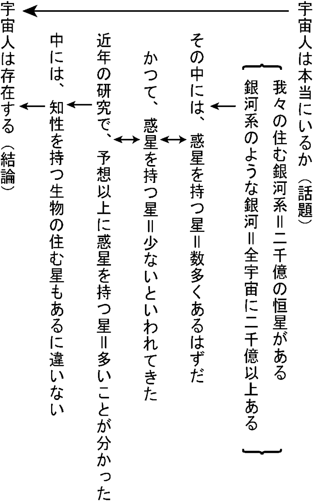

| 構造と解法で解く 中学受験・高校受験の国語 | |
| 石井 浩史 | |
| (2015) | |
「国語力を伸ばすには、とにかく本をたくさん読むことだ」
「問題文を何回も丁寧に読み、内容を深く理解するのが大事だ」
「問題文の内容さえきちんと理解すれば、問題は自然と解けるようになる」
今現在、小学生、中学生である皆さん。学校や塾の国語の先生に、こんなことを言われたことはありませんか？
あるいは、受験を控えたお子さんをお持ちでいらっしゃる保護者の方。他の教科は成績がいいのに、どれだけ勉強しても国語の成績だけが伸びず、思いあまって先生に相談したら、こんな答えが返ってきた。言われたときは「ああ、そうなんだ」と思って、問題文を丁寧に読むようにしてみたけれど、やはり成績は変わらず、そのうち、自分は国語が向いていないんだと思うようになり、国語の勉強自体、あまりしないようになってしまった......そんな経験をお持ちの方、いませんか？
確かに国語は、なんだか不思議な教科です。普段、私たちは毎日日本語を使って生活しているのに、いざ、テストという形で出題されると、その分かっているはずの「日本語」で、なぜかきちんと得点できない。国語ができるのは、「国語力」「国語センス」という特殊な力を持った生徒だけなのではないか、という印象さえもってしまいがちです。
しかし、ちょっと待ってください。
たとえば、算数・数学の先生に、
「算数を伸ばすには、公式を理解するよりなにより、とにかく問題をたくさん解くことだ」
「文章題の問題文を何回も丁寧に読み、内容を深く理解するのが大事だ」
「問題文の内容さえきちんと理解すれば、解法なんか知らなくても、問題は自然と解けるようになる」
こんなことを言われたら、素直に納得できるでしょうか。
「そんなばかな。公式が頭に入ってなければ、そもそも問題を解けない。いくら問題を丁寧に読んだって、むだだ。書いてある内容が分かっても、解法が分からなくては、手のつけようがないじゃないか」
そんなふうに思うのではないでしょうか。
実は、この「公式・解法を教えずに問題を解かせている」というのが、国語教育の現状なのです。
このように述べると、
「そんなの、今まで聞いたことがない。国語と算数・数学は別物だ。国語はやはり、センスで解くものであって、解法なんか、あるはずがない」
そんな反論をする方が------たいがい、自分の「国語力」に自信を持っている方ですが------中にはいらっしゃいます。
この種の方々は、やはり少し、国語に対して誤解しています。
確かに、たとえば小説を書いたり、国文学者になったりという「国語のプロ」になり、国語を究めるのならば、国語センスは不可欠です。
しかし、中学・高校受験、さらに言うなら、記述主体で難度の高い国公立大学の二次試験ですら、「国語センス」などというものは（一部の例外を除き）必要ありません。構造にしたがって文章を読み解き、解法にしたがって答えを作ることさえできれば、十分入試を突破できるのです。
むしろ、そのように構造・解法に基づいていなければおかしいとさえ、言うことができます。
なぜなら、入試問題には必ず模範解答が------つまり「正解」が------あります。その正解が、「国語センス」などという、個人個人で異なる（＝得体の知れない）ものに基づいて作られていたら、問題作成者以外、誰一人「正解」できません。正解が正解となるためには、それなりの論理や理由が------そして、それらから導くことのできる解法が------あるのです。
この本では、中学・高校受験に出題される文章を構造で読み解く方法と、出題頻度の高い問題を解くための解法をまとめて説明しています(難関大学受験には、この本で説明する解法に加え、もう少し難度の高い解法テクニックが必要となります)。
これらの構造・解法を理解し、身につけることができれば、今まで「国語だけはどうにも苦手」と思っていた人も、逆に国語が得意教科になることさえ、あるかもしれません（今まで私が指導してきた生徒の中には、そういう子が何人もいます）。
さあ、それでは、学校や塾の授業とは全く違う、「構造・解法理解が主体」の国語の勉強を、始めましょう。
受験までまだ一年以上時間があり、国語の実力をつけたい方（一番確実な実力アップ法）
Ａ まず、太字の部分に注意しながらこの本をはじめから通して読み、内容をざっと理解する。
Ｂ 実際に問題集や過去問を解いてみる。その際、この本の各項最後にある「まとめ」を思い出しつつ、どの解法を当てはめればよいか、考えながら解く。
Ｃ 問題の解答・解説を見ながら、間違えたものをもう一度考え直し、忘れていた構造・原則・解法を、ノートに書くなどして、しっかり頭に焼き付けていく。
受験まで一年以内しか時間がなく、ある程度国語が得意な方（問題に対する得点力を上げる方法）
Ａ 第二章、第三章を読み、問題の解法を理解する。
Ｂ 自分が知らなかった、理解していなかった解法を「まとめ」をみながらノートに書き出し、まとめていく。
Ｃ 問題演習の際、ノートを確認しながら、解法に沿って答えを選ぶ（書く）ことを繰り返していく。
受験まで半年以内しか時間がなく、なんとか成績を上げたい方（短時間で得点力のみを上げる方法）
Ａ 第二章、第三章の「まとめ」の赤字部分をノートに書き写す。
Ｂ 問題演習の際、ノートを見ながら解法に沿って答えを選ぶ（書く）訓練を繰り返す。
後の方の方法になるほど、時間がかからない分、知識として頭に定着せず、その場をしのぐだけの、実力のあまりつかない勉強法になります。状況が許す限り、一番確実な実力アップ法を用いるようにしてください（でないと、結局同じことを何度も勉強し直さなければならなくなります）。
テストの最中、国語の得意な人の様子を見たことがありますか。
テスト用紙いっぱいに印刷された難しい文章を、皆さんが四苦八苦して読み解こう、深く理解しようとしているのに、彼らはその問題文を、いともたやすくすらすらと読みすすめてはいませんでしたか？
「さすが、国語センスのある人は違うな」
なんて、感心したことがあるかもしれません。
では、その「速読を可能にする国語センス」とはなんでしょうか？
文章を読み慣れていると、自然に身につくもの、というのが、多くの国語の先生の説明です。
ですが、それは、「どうすれば身につくか」という習得方法の説明であって、「それはなんなのか」つまり「センスの正体」の説明ではありません。
一体、「速読力」とは、どういう力なのでしょうか。
結論から言ってしまうと、それは「言葉（単語）を数多く知っている＝語彙力」＋「文章を構造で理解する力」です。
それぞれについて説明しましょう。
まず、語彙力です。こちらは、あえて説明するまでもないかもしれませんが、念のため。たとえば英語の文章を読む場合、単語を知っていればいるほど文章を読み進めやすいのは、中学生の皆さんならよく知っていると思います。日本語も、同じです。分からない言い回しや単語が少なければ少ないほど------つまり、言葉をたくさん知っていいればいるほど------内容をすらすらと理解することができるのです。
もう一つの、「文章を構造で理解する力」とはなんでしょうか。
実は、国語の問題で出てくる「説明的文章(説明文・論説文)」「文学的文章（小説・随筆）」には、それぞれ決まった「文章の型」があります。それが頭に入っていると、文章中の大事な部分とそれほど大事ではない部分とを、はっきり区別して読むことができます。
国語が得意な人は、その「構造を読む力」を使い、大事なところだけを頭に入れ、他の部分はざっと読み飛ばしているから、あれほど速く、楽に問題文を読めるのです。
まずは、この「文章の構造」を理解することから始めましょう。
説明的文章の構造
そもそも、説明的文章------説明文、論説文って、どういう文章でしょうか？
私は、新年度最初の授業で、まずそう質問します。
すると、生徒たちは少し戸惑った顔をしながら（おそらく、今までそんな質問、されたことがないのでしょう）、もじもじとするばかり。そんな中、活発で、ちょっと生意気そうなな感じの子にこの質問をぶつけると、
「え、そりゃあ、説明してる文章だよ」
なんて、冗談めかして（けれど、少し挑戦的な態度で）答えてくれることがあります。
周りの生徒は、「こんなふざけた答えを言ったりして、怒られるんじゃないか」とはらはらしている様子。ですが、もちろん私は、答えてくれた生徒をたしなめたりせず、にっこり笑ってうなずくだけ。。
なぜなら、その生徒の答えで大正解だからです。
説明的文章とは、その名の通り「何かについて説明した文章」なのです。
なんだあ、そんなのいちいち言われなくても、当たり前じゃん、と思うかもしれません。
ところが、もう少し深く考えてみると、これがなかなか「当たり前」ではないのです。
どういうことでしょう？
例えば、では、「何かについて説明した文章」であることは分かったとして、その「説明」とは、どういうことを指すのか、簡単に説明できますか。
みなさん、なんとなくは分かっているかもしれませんが、はっきり説明せよ、と言われると、なかなかできないのではないでしょうか。
このように、分かっているように見えて、よくよく考えてみるとはっきりわかっていないことが、国語にはたくさんあります。その意味をはっきりとらえなおしていくことで、国語の得点力は、ぐっとアップしていくのです（これは、国語の得点力を上げる大きなポイントの一つですので、よく覚えておいてください）。
少し話が脱線しました。
「説明」とは何か、ということについては、後で詳しく解説するとして、今は、説明的文章の話を続けます。
話を分かりやすくするために、身近にある説明的文章を思い浮かべてみましょう。
なにか、思い当たるものがあるでしょうか。
「そんな、身近に説明文なんて思い浮かばないよ。せいぜい学校の教科書に載ってる文章ぐらいだ」
なんて、困り果ててしまっている人がいたら、さっきの話を、ちょっと思い出してみてください。
説明的文章とは、何かについて説明した文章のことでした。何かについて説明した文章で、身近にあるものといえば...。
そう、取扱説明書。冷蔵庫やオーブンレンジといった家電製品や、ゲームソフトなどを購入した時、必ずついてくるあの薄っぺらい本。あれが、身近にある説明的文章として、一番わかりやすいものかと思います。
ここでは、とりあえず冷蔵庫の取扱説明書を例として、説明していきます。
たとえば、皆さんが「貯蔵室の温度調節の方法を知りたい」と思ったら、どうするでしょうか？
いきなり冷蔵庫内のボタンをでたらめにいじったら、冷蔵庫が壊れてしまうかもしれません。ですから、まずは取扱説明書を探し、目次を開いて「温度調節の方法」のページが何ページか確かめ、そのページを開くのではないかと思います（もし手元に冷蔵庫の取扱説明書があれば、実際に開いてみてください）。
さて、そこに、何が書いてあるでしょうか。
おそらく、ページの一番上の一番目立つところに、「温度調節の方法」という「見出し」が、大きく書いてあるのではないかと思います（もしそこに、「温度調節の方法」ではなく、「冷凍庫の掃除の方法」などと書いてあったら、取扱説明書として、役に立ちませんね）。
皆さんが試験で読まされる説明的文章も、これと同じ構造をしています。
文章の初めのほうに「この文章は、『何』について説明した文章か」必ず書いてあります。
国語では、この「『何』についての文章か」書かれた「見出し」の部分を、「話題」と呼んでいます。
さて、もう一度、冷蔵庫の取扱説明書に戻ります。
「温度調節の方法」という見出しの下に、目をやります。そこには、何が書いてありますか。
当然、このダイヤルを右へ回せとか、このボタンを長めに押せとかいう、「実際の温度調節のやり方」について、詳しく書いてあるはずです（もしここに違う内容が書いてあったら、やはりその取扱い説明書は、役に立ちませんね）。
国語の説明的文章も、やはりこれと同じ構造をしています。
ほとんどの説明的文章では、文章の終りのほう（文章によっては、中ほどであることもあります）に、「『（話題で挙げた）何』とはこういうものだ」あるいは、「『（話題で挙げた）何』について、私（＝筆者）はこう思っている」と書いてあるのです。
国語では、これらのことを「結論」と呼んでいます（ちなみに、「何とはこういうもの」系の結論になっている文章を「説明文」、「何についてこう思う」系の結論になっている文章を「論説文」と呼びます。説明文と論説文の違いは、本質的にそれだけです）。
何度も行ったり来たりで申し訳ありませんが、もう一度、冷蔵庫の取扱説明書の、「温度調節の方法」のページに戻りましょう。
そこに、まだほかに何か、書いてあるでしょうか。
何も書いてありませんね（「温度調節についての細かい補足や注意などの「補足」があれば、書いてあるかもしれませんが、それ以外の情報は------「温度調節の方法」について説明したページに、それ以外の情報を載せたら、内容が分かりにくくなるので------一切書いてないはずです）。
実は、同じことが、説明的文章でも言えるのです。
つまり。
説明的文章において、最も大事なのは、話題」と「結論」だけ。
読み手の側から言うと、「話題」と「結論」さえ理解できれば、その文章で筆者が述べたい内容のほとんどは、理解できたことになってしまうのです。
ですから、皆さんが説明的文章を読むときには、まずその「話題」は何か、「結論」は何か、つかんでしまうのが文章理解の早道となります。
そう言われても、文章の初めのほうとか終りのほうとか言われただけじゃ、ぼんやりしすぎていて、どこが話題か結論か決められないよ、もっとはっきりとわかる手がかりがあればいいんだけど...。
そんな風にぼやく声が聞こえてきそうですね。
安心してください。実は、「話題」と「結論」を見分ける、もっとはっきりした指標が、いくつか存在します。
文章の初めのほうで「疑問形（「〜だろうか」のような形）」で書かれた文があれば、まず間違いなく「話題」です。
さらに、話題が疑問文ならば、その疑問に対する答えを述べた部分が、「結論」となります。
同様に、文章の初めのほうに「〜について述べたい」とか「〜を考えてみたい」とかあれば、その部分が話題。その「〜」について、内容をまとめている部分が「結論」となります。
もし、文章の初めのほうに、そのような部分が見当たらなかったら、どうするか。
文章の初めと終わりに、同じような内容について述べた部分があれば、それが「話題」＝「結論」です（「双括式の文章」と言って、結論を初めと終わりに述べている形式です）。
それすらもなければ------つまり、文章の終わり近くの部分に「結論」らしき部分が一切見あたらない場合は------文章の初めに注目してください。そこに、内容をまとめて書いてある部分があるはずです。それが、「結論」となります（「頭括式」。初めに結論を述べ、その理由を後に書いている形です。ちなみに、最初に「話題」があり、最後に「結論」、説明的文章の最も一般的な形は「尾括式」と呼びます）。
以上、四種類の指標を示しましたが、「話題」と「結論」は、ほぼこのうちのどれかの形で書かれています。中でも一番多いのが、初めに述べた「疑問→解答」（＝尾括式）の形です。まずはこの形ではないかと予測しながら文章を読み、その形に当てはまらなかったら、ほかの形を考える、というスタイルで、「話題」「結論」を探すのが合理的です。
◎まとめ
・国語では「分かったつもりでいること」をもう一度考え直し、きちんととらえなおすことが大事。
・説明的文章で最も大事なのは、「話題」と「結論」。まずは、それを理解することも目標に文章を読む。
・「話題」は多く「疑問文」の形をとる。その場合、疑問に対する答えとなる部分が「結論」。
・文章の初めのほうに「疑問文・疑問と似た形の内容を述べている文」がない場合、文章の初めと終わりのほうに同じ内容をまとめた部分がないか確認する（双括式。どちらもが「結論」）。それもなければ、文章の初めにまとめ部分がないか探す（頭括式。最初に「結論」）。
「国語の説明的文章が、取扱説明書と同じようなものだ、っていうのは分かった。でも、それじゃあ、なんで国語の問題文はあんなに長いんだ？取扱説明書に書いてある説明は、あんなに短いのに」
ここまでの説明を読んで、このように感じた人もいるのではないでしょうか。
確かに、取扱説明書の各項目の説明は、見出しの下に、大きな活字で数行、多くてもせいぜい十数行程度。それに対して、国語の試験で出題される問題文は、最低でも大きな紙一枚に活字がびっしり。長いものになると、数ページにわたって印刷されていたりします。
なぜ、同じ「説明的文章」なのに、このような違いがあるのでしょうか。
それは、「説明している内容」に違いがあるからです。
冷蔵庫の取扱説明書に書いてある「温度調節の方法」について、「ウソだあ、そんな方法で温度調節できるはずないじゃん」とその内容を疑う人は、まあ存在しないだろうと思います。ところが、「宇宙人はいるか」という話題に対し、取扱説明書のように、いきなり「宇宙人はいる」と結論を述べたら、どうでしょう。先ほどの例とは逆に、大多数の人が、「ウソだあ。そんなはずないじゃん」と考えるのではないでしょうか。
説明的文章において、「話題」と「結論」以外の部分は、読者のこの「ウソだあ」という疑念を、「なるほど、そう言われるとそうかもしれない」と納得させ、結論を受け入れさせるために使われています（「論証」と言います。人間はそもそも疑り深い生物なので、一度「あやしい」と思った内容は、きちんとした形で論証されない限り、受け入れてくれないものなのです）。
さて、では、この論証部分には、どのようなことが書いてあるのか。それはつまり「どのような論証を行えば、読者は筆者の示す結論を受け入れてくれるのか」考えればいいということになります。
先ほど「宇宙人はいるか」→「宇宙人はいる」という話題・結論を例に出しましたが、ちょうどいいので、この例をもう一度使いましょう。
少し考えてみてください。皆さんなら、一体どのような説明・証明をされれば、「宇宙人はいる(かもしれない)」と信じてもいいかな、という気になれるでしょうか。
そう聞かれて、まず思い浮かぶのは「証拠」だと思います。
つまり、よほど他人を信用しやすい（＝だまされやすい）人を相手にしているのでない限り、「宇宙人はいる」ということを信じてもらおうと思ったら、確かな「証拠」であると思われるもの（ＵＦＯの写真や、着陸したＵＦＯから宇宙人が出てくるビデオとか、でしょうか）を示さなければならない、ということです。
説明的文章にも、この「証拠」が当然書かれています。国語では、それを「具体例」と呼んでいます。
さらに、もう少し考えてみると、ただ「証拠」らしきものが示されただけでは、宇宙人の存在を証明することは（つまり、他人に宇宙人の存在を信じさせることは）できない、と分かるはずです。その「証拠」（＝具体例）がトリックであったり、映画の撮影で使われたものかもしれない、という可能性があるからです。誰かに宇宙人の存在を信じてもらおうとするならば、提示した「証拠」がそのような偽物ではなく、確かに実物のＵＦＯや宇宙人を撮影したものだ、と読者に「納得」してもらう必要があるのです。
そのためには、どうしたらよいか。
その「証拠」（＝具体例）が、どのような状況で、どのように撮影されたのか、また、どのように現像され、検証されたか、詳しく、「筋道立てて説明」をすればいい。そうすれば、多くの人が「なるほど」と（納得しないまでも）理解を示してくれるようになるはずです。
説明的文章の「論証」部分は、これら二つの内容で成立しています。つまり、「証拠」である具体例と、そこから導き出される（読者を納得させるための）「筋道だった説明」、この二つで構成されているのです。
話がだいぶん長くなりましたので、ここで一度まとめましょう。
説明的文章は、基本的に「話題」と「結論」の間に「論証」をはさんだ形をしています。
そして、この「論証」とは、「具体例」と「筋道だった説明」の二つで成り立っています。
これが、説明的文章の基本構造です。
ちなみに、国語の問題では、「論証」部分の「具体例」は、あまり重視されません。実験結果等の事実を述べただけの部分なので、読解力に差がつきにくい（問題が作りにくい）せいか、「具体的に」「具体例を使って」等、特別な条件のついた問題以外では、ほぼ扱われません。ですから、皆さんも、説明的文章が問題文となっている時には、基本的に具体例は無視して考えて下さい。
◎まとめ
・説明的文章の基本構造は「話題」→「論証(具体例＋筋道だった説明)」→「結論」。
・具体例は、（設問に「具体的に」「具体例を使って」等、特別な指示のない限り）無視して考える。
皆さんの中には、「自分は、課題の研究発表や、数学の証明問題などで、「筋道だった説明」をしたことがある。だから、いちいち「筋道」とはなにか、なんて説明してもらわなくてもいい」などと思っている方がいるかもしれません。
確かに、「仮説」を立て、それを確かめるための「実験」「観察」を行い、その結果を「考察」し、「結論」を出したりする「研究」や、与えられた「条件」から式を数学的法則に従って「変形」し、求める「結果」を導く「証明」などは、「筋道だったものの考え方」の典型だということができます。
しかし、ではなぜ、これらの方法は「筋道だっている」ということができるのか、どなたか説明できるでしょうか。
あるいは、これらの「数学的・科学的方法」以外に、「筋道だって」物事を考える方法はあるのか、あるとすれば、どのような方法があるのか、答えることのできる方、いるでしょうか。
このように聞くと、はっきり答えられる方は、ほとんどいないのではないかと思います。
なんとなく知っているような気がしているけれども、きちんと説明できない。「筋道」というものも、どうやらその種のことがらの一つであるようです。
いったい「筋道だった」とは、どういう状態を指すのでしょうか。に
その正体をはっきりさせるために、少し違う側面から考えてみましょう。
「筋道だった」ではなく、その反対の「筋道だってない」＝「矛盾した」について、考えてみるのです。
こちらは、少しわかりやすいですね。
ある事を話題にしていたはずが、いつの間にか違う話題にすり替わってしまっている。はじめにしていた説明と、後でなされた説明の内容が、食い違っている。このような「説明」をされた時、人間は「その説明は矛盾している」と感じます。
とすると、「筋道だった」は、その反対なのですから、「話題がはじめから最後までずれず、説明の内容も、はじめから最後まで食い違うことのない」状態を指す、ということになります。
それはいわば、「文章のはじめから最後までが、一本の線でつながっている」ような状況です。
「線」というと理解しにくいかもしれません。
もっと具体的にいえば、文章のはじめから最後までが「だから」と「しかし」だけでつながっている（つなげることができる）状況です。
「だから」「しかし」でつながる、っていったって、中には「それとも」とか「また」とか「さて」とか、全然違うつながり方をする部分だってある。そういう文章は、筋道立ってないのか、と反論されそうですが、そういうことではありません。
少しわかりにくいので、具体例を出しましょう。
（「宇宙人は本当にいるのだろうか」という話題に対し）
我々の住む銀河系には、二千億の恒星があると言われている。(具体例①)
（また）そのような銀河は、全宇宙に二千億以上あると言われている。（具体例②）
（だから）その中には、惑星を持つ星も数多くあるはずだ。
（しかし）かつて、惑星を持つ恒星は少ないと言われていた。(反論)
（だが）近年の研究で、予想以上にその数は多いことが分かった。（反論に対する反証）
（だから）中には、知性を持つ生物の住む星もあるに違いない。
（だから）宇宙人は存在する。
このように、文章中に「また」などを含んでいたとしても、最終的に「だから」「しかし」だけで、筆者の言いたいことをつなげることができる。そういう構造を「筋道だった」と呼ぶ、と考えてもらえばいいと思います。
皆さんが問題文を読む時、まず第一に注意しなければならないのは、この「筋道」が、どのようにつながっているか（どの部分とどの部分が「だから」で、どの部分とどの部分が「しかし」でつながっているか）、理解することです。
具体例でさりげなく示しましたが、この「筋道のつながり方」＝「文章構造」を理解するのに大きな手がかりとなる言葉があります。それが、指示語と接続語です。
それらは、一体どういう性質を持つ言葉なのでしょうか。
◎まとめ
・「筋道だった説明」とは、文章の説明している内容が一貫しており、しかもその説明に矛盾のないこと。
・（「筋道だった説明」の）「筋道」＝「文章構造」を理解するのに、大きな手がかりとなるのが、指示語と接続語。
指示語は「こそあど言葉」などと呼ばれることもあります。文章の他の部分で使われている語句や文などを「これは」「そこは」などという形で引用することで、言葉の繰り返しを防ぐ働きがあります。なかなか便利な言葉なのですが、その分、その指示語が何を指しているのかしっかり理解しておかないと、文章の意味内容が理解できなくなってしまいます。指示語が登場したら、それが問題となっていなくても、必ずその指し示す意味内容を理解するようにしましょう。
指示語の内容の理解の仕方は、次の通りです。
指示語はそのほとんどが直前の（文中の）語を指すので、まずはその辺りを重点的に探す。
「この語ではないか」という候補を見つけたら、指示語と入れかえ、問題文の文章の意味内容がおかしくならないかどうか確かめる。
実際の問題では、もう少し複雑な問題も出題されるのですが、それは、指示語の内容を答える（応用）の項で説明します。
一方接続語は、「つなぎ言葉」とも呼ばれ、段落と段落、文と文、語句と語句などをつなぐ働きをします。文章構造を理解するには、文章中の部品どうしを決まったルールでつなぐ接続語をしっかり理解することが重要となります。どれくらい重要かというと、たとえ文章がどれほど難解で、その内容がほとんど理解できなくても、接続語によって部品どうしがどのようにつながっているかさえ理解できれば、たいがいの読解問題は解けてしまう、というくらいです。
つまり、接続語は、他の種類の言葉とは比べものにならないぐらい、構造を読み解くための手がかりとなるのです。（ここで一つ、お断りしておきます。国文法では、接続語的な働きをするのに、他にも違う意味を持つから、語源が違うから、などの理由で、副詞等に分類されている言葉があります。私が「接続語」と読んでいる言葉は、それらのものも全て含めた文章の構造（＝部品）どうしをつなぐ働きをする言葉の全てを指しています）。
接続語の中でも、段落の先頭にある接続語は、文章中の一番大きな単位（かたまり）である段落どうしのつながり方を示すので、最重要です。
さて、この接続語ですが、いくつかの種類に分けることができます。国文法では、それぞれの種類について名前がつけられているのですが、中学・高校受験で、それらの種別の名前は、まず出題されません（さらに、文法上の分類は、そのまま読解に使うと使いにくいので、ここでは少しオリジナルの分け方をしています）。大事なのは、どういう「つなぎ方」をする接続語なのか、イメージで理解することです。部品どうしをつなぐ以外、接続語は特に意味を持ちません。ですから、その働きは、算数や数学などで使う「記号」と、ほぼ同じです。その種類も覚える時も、それぞれの役割を「記号」と関連させて覚えておくと、非常に便利です。
主な接続語の種類は、次の七つです。
・順接 直前の部品が物事の原因理由、後ろの部品が（当然の）結果を示します（たとえば、「雨が降った」「地面がぬれた」などです）。同じ働きをする記号は「→」（後方向き矢印）です。代表例は「だから」「それで」「したがって」などです。
・逆接 直前の部品が物事の原因理由、後ろの部品が意外な結果を示す場合と、直前の部品と直後の部品で逆の内容を述べる場合とがあります（たとえば、「雨が降った」「地面はぬれなかった」の関係、あるいは「太郎くんは中学生だ」「次郎くんは高校生だ」の関係です）。同じ働きをする記号は「←→」（反対向き矢印）。代表例は「しかし」「ところが」「だが」「けれども」「にもかかわらず」などです。
・説明 「換言」の接続詞、とも言われます。前の部品の内容を詳しく説明したり、まとめたりする時に使います。 なのですが、一体「説明」って、具体的に、何をどうすることでしょうか。
たとえば、一本のペンを取り出し、これについて説明してくれ、と言ったら、皆さんはどうするでしょう。ほとんどの方は「ものを書く道具」とか「紙の上にインクでいろいろなものを書く道具」などと「説明」するのではないかと思います。このときの「ペン」と、「ものを書く道具」との関係に注目してみましょう。すると、「ペン」＝「ものを書く道具」という関係になっているのが、すぐに分かると思います。
つまり、「説明」するとは、「内容が同じ言葉で置き換えること」「同じ内容を違う言葉で言い換えること」なのです。したがって、記号は当然「＝」（イコール）。代表例は、「つまり」「すなわち」「要するに」などになります。
・並立 文章中で同じ働きをする部品を、ただならべます。ちょうど、いくつかのものを箇条書きにするのと同じ働きをしています。ですから、同じ働きをする記号は（ちょうど、この文章のこの部分で使っているのと同じ）「・」や「○」「ＡＢＣ」など。代表例は「また」「ならびに」「および」「まず」「次に」「第一に」「第二に」「第三に」などです。
・選択 文中同じ働きをする部品をならべ、比べたり、選ばせたりします。同じ働きをする記号は「／」（スラッシュ）。代表例は「または」「あるいは」「もしくは」「それとも」です。
・添加・補足 文法上はそれぞれ別の働きをする接続語、ということになっていますが、読解では、ほぼ同じものと思って問題ありません。前の部品に対し、内容などをつけ加える時に使います。同じ内容の記号は「＋」（プラス）。代表例は「さらに」「しかも」「くわえて」「ただし」「なお」「ちなみに」などです。
・転換 話題を変えます。代表例は「さて」「では」「ところで」「それでは」などです。
これ以外に、特殊なものとして、
・前の部品の原因・理由を述べる「なぜなら〜（から）」（「←」（前向き矢印と同じ働き）
・具体例を挙げて説明する時に使う「たとえば」（ちなみに、「具体例」とは例を挙げて「説明」する部分ですから、その内容は、まとめ部分とイコールになります）。
・添加（＝「＋」）の接続語だが、出来事の時間的な前後関係（起こった順番）をただ示すのにも使われる「そして」（「雨が降った」「蛙が鳴いた」「夜になった」などを、ただつなげられる）
・自分とは異なる（＝反対の）意見をいったん受け入れる時に使う（その後、「しかし」「だが」などで打ち消し、反証されることが多い）「確かに」「なるほど」「もちろん」「もっとも」
などがあります。
入試でよく出題される「接続語を選ぶ問題」では、前後の部品の内容を比べ、これらの接続語のうち、どれが一番ふさわしいかを判断すればよい、ということになるのですが、実際は、なかなかうまくいきません。前後の部分のどことどこを比べればいいか、迷うことが多いからです。そういう場合、手がかりになるのは、「接続語は、必ず前後の部品の大事な部分同士をつないでいる」という原則です。前の部品が「語句」ならば対応する語句を、前の部品が「文」ならば、前後の文の大事な部分（＝述語部分）を、前後の部品が「段落」ならば、「段落のまとめ」どうしをつないでいる、と考えて、それらを比べるようにします。
また、実際に出題される接続語の問題で一番難しいのは「だから（→）」系と「つまり（＝）」系の区別です。
たとえば「雨が降った」「地面がぬれた」という二文をつなぐ場合、「雨が降った。だから、地面がぬれた」でも、「雨が降った。つまり、地面がぬれた」でも、文章のつながりかたとしておかしくないように思われるので、つい見過ごしてしまうのです。
この種の問題で迷った時は、前後の「部品」をひっくり返してみてください。
「地面がぬれた。雨が降った」という語順は、明らかに（時間の流れとして）おかしいですね。そういう場合は、「だから」系が入ります。そして、「太郎くんは中学三年生だ。太郎くんは十五歳だ」のような、ひっくり返してもおかしくない場合に、「つまり」系が入ると考えます。
最後にもう一つ。接続語なしで文と文、段落と段落がつながっている場合があります。それは、「接続語がなくても意味が通じるだろう」と筆者が考えたため、接続語が省略されている、と考えます。つまり、それらの「部品」は、「接続語がなくてもよい」ほどに、わかりやすい（＝よくある・当然の）つながり方をしているのです。
そのような「よくある」つながり方とは、「順接（→）」「説明（＝）」「並立（・）」になります。接続語がない場合は、これらのどれかを補って考えるようにしてください（まれに、これらのどれでもない時もありますが、そういう場合、文章の筋道から容易に判断できるはずです）。
◎まとめ
・指示語の指示内容は、問題として問われていなくても、必ずその内容を理解しておく。
・指示語は、たいがい直前の文中の語を指し示している。候補となる語を見つけたら、指示語と入れ替えて、文章の内容がおかしくならないかどうか確認しておく（指示語の指示内容の基本解法）。
・接続語は、
「だから・それで・したがって」（「→」）
「しかし・だが・けれども」（「←→」）
「つまり・すなわち・要するに」（「＝」）
「また・まず・第一に」（「・」）
「または・あるいは・それとも」（「／」）
「さらに・しかも・ただし・なお」（「＋」）
「さて・では・ところで」
の基本七種類と、
「なぜなら」（「←」）
例示の「たとえば」
反対意見をいったん受け入れる「確かに・なるほど・もちろん」
ただ時間の前後を示す「そして」
などがある。
・「説明」とは、「同じ内容を、違う言葉で言いかえる」こと。
・接続語の問題を解く時には、前後の「部品」の大事な部分どうし（文をつないでいるなら述語どうし、段落をつないでいるなら段落のまとめどうし）を比べ、その関係をつなぐのにふさわしいものを選ぶ。
・「だから」系と「つまり」系の接続語のどちらが入るか見分ける時は、前後の部品をひっくり返し、それでも意味がおかしくならないか（＝「つまり」系）、おかしくなってしまうか（＝「だから」系）確かめる。
・接続語なしでつながっている文・段落などは、基本的に「→」「＝」「・」のどれかの関係でつながっていると考えればよい。
この他にも、文章構造を読み解く上で必要な知識がいくつかありますので、ぜひ覚えておいてください。
まず、「文」の特性について。
国文法で「文の構造」という単元があったのを、覚えているでしょうか。
その内容を簡単にまとめると、
「日本語の文をつきつめていくと、「何がどうする」「何がどんなだ」「何が何だ」「何がある・ない」の四種類のうち、どれかの形をとる」
ということになります。
実は、これを一歩進めると、おもしろい事実につきあたります。
この、四つの構造のうち、「何がどうする」「何がどんなだ」という文の構造では、「主語＝述語」が成立するのです（英語で「文型」という単元を習っていれば「第二文型ＳＶＣでは、Ｓ＝Ｖが成り立つ」という法則があったのを、思い出すかもしれません。あれと、全く同じことです）。
さらに、「ＡをＢとみなす・おく・する・考える・思う」といった「みなす・思う」系動詞が述語の文、「ＡがＢになる」などの文では、「Ａ＝Ｂ」が成り立ちます（英語の「第五文型ＳＶＯＣでは、Ｏ＝Ｃが成り立つ」という法則と同じことです）。
次に、「段落」の特性について。
指示語と接続語の項で、「接続語は『段落のまとめ』同士をつないでいる」と説明しました。では、その「大事な部分」とは、一体段落のどこになるのでしょうか。
これは、それぞれの段落によりさまざまですので、なかなかはっきり「ここ」ということはできません。しかし、手がかりとなる考え方はあります。それは「日本語は、基本的に大事な部分（要素）で他の部分（要素）をはさみこむ形をとる」ということです。
たとえば英語など、ヨーロッパ系の言語は、文の一番はじめに主語を置き、次に動詞、それから目的語、といった具合に、大事なもの（＝伝えたいこと）をはじめから順番にならべていく、という特徴があります（「オレ！ほしい！食べ物！」といったならべ方です。ヨーロッパの人は、せっかちなのかもしれません）。それに対して日本語は、まず一番最初に主語を置き、文の最後に述語を置く、という構造です。つまり、主語述語という、一番大事なものを最初と最後に置き、それ以外の部分（＝要素）をはさみこむという構造なのです（主語と述語で他の要素をサンドイッチにしている、というイメージです）。
文の基本構造がそういう形をしているせいか、日本語では、文章でも段落でも、同じように「大事なものでそうでないものをサンドイッチ」という形をとりたがります（おそらく、その形にすると、書き手も読み手も落ち着くのだと思われます）。ですから、多くの文章において、「話題」と「結論」で、他の内容をサンドイッチする形をとるのです。
段落も、これと同じように、「大事なものでそうでないものをサンドイッチ」する形が、多く見られます。
サンドイッチできない場合でも、段落の始めか終わりか、どちらかに「まとめ」部分を置くようにすることが、非常に多くなります。つまり、段落のまとめは、その段落の始めか終わり（もしくはその両方）にある、という形になるのが、ほとんどなのです。
最後に、「言語論理（＝言葉を使う上での基本ルール）」の特性について。
説明的文章では、二つのものを対比しながら論を進める形をとることが多いのですが、その場合、比べられる二つのものは、当然対照的な性質を持つものとして扱われます。つまり、Ａ、Ｂ、二つのものが対比されている場合、自動的にＡ←→Ｂだと考えることができるのです。
これを発展させると、たとえばＡに対し何らかの説明がされており、Ｂに対しても何らかの説明がされている場合、それぞれの説明の内容は対照的である、と考えてよいことになります。さらに、Ａに対しては何らかの説明があるのに、Ｂに対しては説明がない場合、Ａの説明を打ち消す（内容を対照的なものにする）と、Ｂの説明にすることができる、ということにもなるのです（「Ｂくんとは対照的にＡくんは身だしなみがよい」とある場合、Ａ、Ｂは対照的に扱われていて、Ｂ＝身だしなみがよい、ですので、ＡはＢ（の説明）と対照的に「身だしなみが悪い」と考えることができる）。
また、、ある一つの言葉があり、その言葉が別々の表現で説明されているような場合ならば、その別々の「説明」同士もイコールだと考えることができます。つまり、「Ａ＝Ｂ、Ａ＝Ｃである場合、Ｂ＝Ｃ」となるのです。
◎まとめ
・「何がどうする」「何がどんなだ」という構造の文ならば、「主語＝述語」。「（ＡをＢと）思う・見なす」系動詞が述語の文、「ＡがＢになる」等の文では、「Ａ＝Ｂ」。
・段落のまとめは、その段落の始めか終わり、もしくは両方にある。
・Ａ、Ｂ二つのものが対比されている場合（Ａ←→Ｂの場合）、Ａの説明とＢの説明も対照的になる。Ａにしか説明がない場合、その説明を打ち消す（対照的な内容にする）と、Ｂの説明になる。
・Ａ＝Ｂ、Ａ＝Ｃである場合、Ｂ＝Ｃが成り立つ。
ここまで、説明的文章の基本構造と、その構造を作る言葉、ルールについて、かなり丁寧に説明してきました。
かなり長くなってしまったので、そろそろ退屈し始めている方も、いるかもしれません。そろそろ肝心の「これを理解することで、一体どのように役に立つのか」を「筋道だった」って、どういうこと？の項で使用した「宇宙人はいるのか」という話題を例にして、説明しましょう。
あの宇宙人の話の論理展開は、こんな形でした。
（「宇宙人は本当にいるのだろうか」という話題に対し）
我々の住む銀河系には、二千億の恒星があると言われている。(具体例①)
（また）そのような銀河は、全宇宙に二千億以上あると言われている。（具体例②）
（だから）その中には、惑星を持つ星も数多くあるはずだ。
（しかし）かつて、惑星を持つ恒星は少ないと言われていた。(反論)
（だが）近年の研究で、予想以上にその数は多いことが分かった。（反論に対する反証）
（だから）中には、知性を持つ生物の住む星もあるに違いない。
（だから）宇宙人は存在する。
これを、接続語と構造の法則に従って記号化すると、こうなります。

このような形で、実際にノートに書ければ一番よいのですが、試験の最中にそんなのんきなことはしてられません。ですから、頭の中に思い描くだけで十分です。また、ここまできっちりとした形にする必要はありません。どの部分とどの部分が「→」の関係か、「＝」の関係か、箇条書きのように並んでいるところはどこか、最低限、それだけ理解できれば十分です（ついでに言っておくと、文章の内容や主題について深く理解する必要もありません。「たぶんこの部分が話題で、この話題に対してこんな風なことをいっているみたいだ」程度の理解で、全く問題ありません）。
それが終わったら、もうそれ以上、何もする必要はありません。
実のところ、そこまで文章構造を理解できたのなら、（問題を解く上での）文章理解は終了なのです。
どういうことか。
国語の読解問題は、様々なことを聞いているようで、実は、その聞いている内容は、ほぼ四つにしぼられます（そうでない問題も多少ありますが、それは、第二章、第三章で詳しく解説します）。
一つは、ある部分の「説明」。
一つは、ある部分の「原因・理由」。
一つは、ある部分の「結果」。
一つは、全体、もしくはある部分の「まとめ」。
たったのこれだけです。
そしてこれらは、文章構造さえ理解できれば、いとも簡単にあぶり出すことができるのです。
「説明」を問われたら、その部分と「＝」の部分を探せばよい。
宇宙人の例でいうと「かつて、惑星の持つ星は今と違ってどのように思われていましたか」などと聞かれたら、そことイコールの部分、つまり、「少ないと思われていた」と答えればよいのです。
「原因・理由」を問われたら、「→」をさかのぼればよい。
「なぜ、生物の住む星があると考えられるのですか」と聞かれたら、そこにつながる矢印をさかのぼって、「近年の研究で、予想以上に惑星を持つ星が多いと分かったから」と答えればいい。
「結果」を問われたら、「→」を下ればよい。
原因理由を問われた時と、ちょうど逆の操作をすればいい、と考えてください。
そして、「まとめ」を問われたら、（「話題」＋）「理由」＋「結論」を答えればよい。
この文章の主題を聞かれたら、「近年の研究で、予想以上に惑星を持つ星の数が多いことが分かり、中には知性を持つ生物が住む星もあるだろうと推測できるので、宇宙人はいる、と筆者は考えている」などとすればいいのです。
説明的文章は（「なにかを読者に分かる形で説明する」という制約に縛られているため）どれほど難解で、どれほど難しい内容を扱った文章であっても、これと同じ操作によって、構造を見きわめることができます（もしできないとしたら、それは説明的文章として失格です）。そして、このような形に（頭の中で）構造をまとめることさえできれば、後は機械的な操作で、問題の解答部分を見つけることができるのです。
この「構造に頼る読み方」さえ身につければ、説明的文章は、全くこわくありません。慣れれば、安定した得点源になるはずです。
◎まとめ
・説明的文章を読む時は、接続語と文章構造の法則に従って、文章を記号化していくようにする。
・読解問題で問われる内容は「説明」「原因・理由」「結果」「まとめ」の四つ。「説明」なら「＝」の部分を探す。「原因・理由」なら、「→」をさかのぼる。「結果」なら「→」を先に進む。「まとめ」なら「原因・理由」＋「結論」を探す。そこが、答えの部分となる。
さて、説明的文章が終わったところで、次は文学的文章に移りましょう。
受験国語で扱う文学的文章では、「小説」と「随筆」があります。どちらも読み物として人気の高いジャンルで、特に小説の方は、小学生から老人まで、数多くの人が楽しんで読んでいます。
ですが、ちょっと考えてみてください。小説とは、本質的に「作り話」「ウソのお話」です。
皆さんの身の回りに、ウソばかりつく人がいませんか？
多くの人は、「ああ、いるいる」と心当たりがあると思います。
では、そういう「うそつき」さんの話を聞くのは、楽しいでしょうか？
そんなことありませんね。だいたい、そういうウソの話を聞くのはうんざり、つまらなくってすぐ飽きてしまうはずです。
あれ？おかしいですね。
「うそつき」さんの話も「小説」も、同じ「ウソの話」です。
なのに、どうして「うそつき」の話はつまらなくて、小説はおもしろいのでしょう？
考えてみると、不思議ですね。同じ「ウソの話」なのに、おもしろいものと、おもしろくないものがあるなんて。
一体、その違いは、どこにあるのでしょうか。
少し、ヒントを出しましょう。
皆さんが読む小説は、たいてい皆さんと同じくらいの少年少女が主人公となっているかと思います。では、たとえば、中年のおばさんが主人公の小説や、八十歳を超えたおじいさんが主人公の小説を、同じように楽しんで読むことができるでしょうか。
よほど小説が好きで、読み慣れている人以外「そんな小説、全然おもしろくない、読みたくもない」そう答えるのではないかと思います。
実は、ここから「なぜ小説はおもしろいか」までは、もう後一歩です。
どういうことか。
小説とは、どこか自分と同じようなーーどこか似ているところのある人物が主人公でないと、なかなか楽しめないものだ、ということは分かりました。ですが、この場合の「自分と似ている」点とは、姿形や名前などではなく、「ものの考え方・感じ方」であることは、すぐ理解できると思います（自分と姿形がうり二つの少年が主人公なんて、むしろ不気味ですね）。
人間は、自分と同じような考え方をする人物に、親近感や共感を感じやすい、という性質があります。
小説の主人公が、自分と同じような考え方をする人物だと、読者は知らないうちに、その人物に共感を覚え、感情移入するようになります（つまり、どんどんその人物を「好きになる」わけです）。そして、物語の中でその人物が冒険をし、いろいろなことを考え、思い、成長していくのをともに体験していくうち、あたかも自分がその主人公にのりうつり、主人公自身になって冒険しているような気にさえ、なっていくのです。
もうおわかりでしょうが、この二つ、つまり、「感情移入」と、主人公への「のりうつり」が、小説の「楽しさ」の正体なのです。
さて、ここで視点を「読者」から、「作者」の方へと移動させてみましょう。
小説の作者は、「読者」に楽しんでもらうために、小説を書いています。
楽しんでもらうためには、（先ほど見てきたように）作品に感情移入してもらわないといけません。そのためには、魅力的な主人公を創作したり、奇想天外なストーリーを考えたりすることももちろん必要ですが、なによりもまず、「登場人物の気持ちが分かってもらえるように書く」ことが必要となります。
そうかと言って、いちいちこの人物はこういう性格で、今こう思ってて......などといちいち書いていては、小説になりません。
では、いったいどうするか。
実は、「このような形で書けば（ストーリーを進めていけば）登場人物の気持ちを理解してもらいやすい（＝感情移入してもらいやすい）」という「型」は、ほぼ確立されています。
どういうものかというと、
「まず出来事が起きる。その出来事に対する反応として、登場人物がなにかを思う。すると、今度はその気持ちが原因となって、新たな出来事が起こる......」
というような、「出来事」と「登場人物の心情」が、それぞれ原因・結果の関係で、交互につながっていく、という「型」＝構造です。
説明的文章のように記号で表すと、
「出来事」→「気持ち」→「出来事」→「気持ち」→「出来事」→「気持ち」→......
という形になります。これが、ストーリーが終わるまで、ずっと続いている、と考えてください。
ここから、一つの原則を導き出すことができます。
つまり、「気持ち」の原因は直前の「出来事」、「出来事」の原因は直前の「気持ち」になる、というものです。
小説の構造を理解していれば当たり前のことなのですが、読解問題を解く際、これを覚えておくと非常に有効です。
ちなみに、「（直接の）原因理由」とは、「結果」部分に対し、「〜〜だから、『結果』になった」という形でつなげて、おかしくないところ、ということを目安にすれば、発見することができます。こちらも覚えておくと、非常に便利です。
◎まとめ
・小説の多くは、読者に感情移入してもらうため、「出来事」→「気持ち」→「出来事」→「気持ち」→......という構造で書かれている。
・「出来事」の原因は直前の「気持ち」、「気持ち」の原因は直前の（直前に起こった）「出来事」。
・「原因理由」とは、「結果」部分の直前に「〜〜から」という形でつなげても、おかしくないところ。
このように「小説とは、読者に登場人物の気持ちを伝えるために書かれます」というと、
「気持ち、っていうけど、出来事が起こった後、「〜と思った」とか書いてないうち、いきなり冒険が始まったりとかもあるような気がするんだけど......。」
そんな疑問を抱く方も、いるかもしれません。
確かに、その通りです。前にも述べましたが、いちいち「〜と思った」などと書いていては、読者が飽きてしまいます。ですから、作者はそればかり繰り返すわけにはいきません。その代わり、一見「気持ち」を表しているとは思えないような表現をあれこれ使い、読者に「人物の気持ち」を伝えようとします。
その主な方法は
「思考」（そのものずばり「〜と思った・感じた・考えた」などと書いてあるもの）
「言動」（「 」（＝カギカッコ）でくくられていることが多い、登場人物の言葉（台詞）です。ある出来事に対してどう
いう感想を述べているかで、「気持ち」が分かります）
「行動」（ある出来事に対して、どういう行動（＝リアクション）をとったか）
「表情」（ある出来事に対して、どんな表情をしたか）
この四つと、もう一つ「背景描写」とがあります。
「背景描写」とは、「空は晴れていた」とか「冷たい風が吹いた」とか、その場の状況を表す表現。なぜ、「背景描写」から、気持ちが分かるのか、不思議に思うかもしれません。
思い出してください。小説とは、「ウソの話」でした。「ウソ」であるということは、「その世界のありとあらゆる物事を、作者の好きなように設定できる」ということです。作者はこれを利用し、背景描写までも使って、人物の「気持ち」をあらわそうとするのです。
たとえば、少年漫画でよくある「ライバルとの対決」の場面を思い浮かべてみてください。
ライバルと主人公が向き合って立ち、緊張が高まっていく。そんな時、二人はどんな場所に立っているでしょうか？
たいがい、荒野であるとか、大海原であるとか、あるいはだだっ広い試合場であるとか、どこか殺風景な場所であるはずです（幼稚園の中庭とか、縁側に座ってお茶を飲んでいるおばあちゃんの前とかでは、あまり対決しませんね）。
また、対決の場面の天気はどうでしょうか？
強い風が吹いていたり、雷が鳴ったり、横なぐりの雨が降っていたり、というのが普通ではないかと思います（ぽかぽかして気持ちよい、春の午後に対決する、というのは、あまりないはずです）。
なぜ、こうなるのか。
実は、「対決」という「緊張感の高まる場面」には、それにふさわしい場所（荒野や大海原）や天気（嵐）があるのです。作者は、わざわざそういう場面を描くことによって、「今、緊張感が高まっていますよ」ということを、読者に伝えようとしているのです。
マンガを例に出しましたが、小説も同じです。小説の中では、雨が降れば、必ず登場人物の誰か（おそらく主人公）が、イヤな思いを抱いています。冷たい風が吹けば、主人公はおそらくつらい気持ちになっていますし、曇っていたのが晴れれば、それは、登場人物の悩みが晴れ、すっきりしたことを表しているのです。
皆さんが問題文を読む際、このような表現にも注意して、その場その場での人物の気持ちを拾い上げていくのが、小説の読解の基本となります（ここでいう「その場」とは、「出来事」とほぼ同じ意味です。小説の問題でよく出てくる「場面」ではないので、注意してください。ついでに言っておくと「場面」とは、ストーリーの大きなまとまりのことで、時間や場所、あるいは登場人物の変化（誰かがその場からいなくなったとか、誰かがやってきたとか）により、変わるものです）。
なお、たとえば「彼の心に閃光が走った」など、小説特有の表現が使われており、その部分だけではどういう気持ちなのか読み取れないような場合（この例の表現も、「驚き」「怒り」「感動」「恐怖」などのうち、どれであってもおかしくありませんね）、当てずっぽうで気持ちを推測するのではなく、まずは直前直後の部分を確認してください。
小説とはの項でで説明しましたが、気持ちの原因は直前の出来事、出来事の原因は直前の気持ち、でした。これをもとに「気持ち」を考えると、
「直前の出来事」→「その部分の気持ち」→「直後の出来事」
という関係が成り立ちます。
つまり、推測する気持ちとは、「直前の出来事」が原因となって引き起こされ、しかも「直後の出来事」を引き起こす原因となるようなものでなければならない、ということになります。このように、一方向の論理の流れで気持ちを推測するのではなく、前後二方向から気持ちを推測することで、より確実にその部分がどういう気持ちを表しているのか、推測することができます。先ほどの例で言えば、たとえば「ケンカをしていた親友が事故にあったという知らせを聞いた」→「彼の心に閃光が走った」という流れだけでは、「驚き」「心配」「恐怖」など、様々な心情の可能性が考えられます。が、「ケンカをしていた親友が事故にあったという知らせを聞いた」→「彼の心に閃光が走った」→「病院へと向かって、彼はやみくもに走り出した」という前後の流れを確認することで、おそらくここでの彼の心情は「心配」が支配的なのだ、と推測することができるのです。
◎まとめ
・気持ちを理解する手がかりは、ある「出来事」に対する人物の反応としての「思考」「言動」「行動」「表情」および「背景描写」。
・よく理解できない気持ちを推測する時には、直前の出来事が原因となってわき起こり、直後の出来事の直接原因となっている、と二方向から考えていく。
・場面とは、ストーリーの大きなまとまりのこと。通常、時間や場所、登場人物の変化（登退場）によって、変化する。
実は、これらの原則を理解し、「その場の人物の気持ち」がある程度正確に理解できるようになった時点で、小説の読解はほぼ終了です。
「そんな、気持ちが分かっただけじゃ、問題でよく聞かれる「登場人物の性格」とか「小説の主題」とか、全然分からないままじゃないか」
と思う方も、いるかもしれません。
ところが、そうではないのです。
まず「性格」ですが、そもそも「性格」とは、「ある人物が、様々な出来事に対し、どのような行動を起こしやすいか」ということです。それを理解するには、「人物の、ある出来事に対する反応」を確認していかなければならないのですが......これは、そっくりそのまま、「気持ち」を理解する時の方法でした。
人物のその場の「気持ち」を理解することは、そのまま「性格」を理解することにつながっているのです。
もっと具体的に言うと、その場その場における出来事と人物の反応（気持ち）を理解していく時、ついでに「ではどんな性格か」も考えるようにすればいいのです。たとえば、「友達から悪口を言われた」→「怒って、その友達に殴りかかった」という流れになっていれば、「これくらいで怒るのだから、短気な性格なのかもしれない。」などと考えておくのです。
この「性格の推測」を（その場の「気持ち」を確かめていくついでに）何度も繰り返していくことで、たとえば「短気だけれども友達思いで、仲間のためなら危険にも立ち向かっていく、男らしい」性格であるとか、かなり正確に確定できるようになるのです。
次に、「小説の主題」です。
こちらの手順ですが、まずは、先ほどの「性格の推測」の方法を用いて、登場人物の性格をあるていど確定します。それが終わったところで、次に、小説の「あらすじ」をまとめてみてください。
あらすじをまとめる、といっても、心配ご無用。四苦八苦して、自分なりにきちんと考え、文章をまとめ上げていく必要など、ありません。
「............という性格の登場人物（主人公）が、------------という出来事（クライマックス=ストーリーの中心となる大きな出来事）にあい、『 』と思った（そして、《 》と性格が変化した）。」
基本的な「あらすじ」の「型」はこの通り。ですので、皆さんは、これらの「......」や『 』などの部分を、その小説から読み取った情報で埋めていけばいい。それで、ほぼ「あらすじ」ができあがるはずです。
できあがりましたら、改めて、その「あらすじ」を読み直してみてください。
なにか、浮かび上がってきませんか？
たとえば「気が弱くて泣き虫な男の子が、親友を救うために、命がけで冒険し、目的を達成。親友を助け出し、喜んだ。その後、親友との悲しい別れを経験し、男の子は少し人間的に成長した。」こんなあらすじになったとします。そうすると、自然に「友情は大事だな」などという感想が浮かび上がってくるかと思います。
これが、小説の主題です。
えっ、こんなに簡単で単純なことでいいの？と思うかもしれません。
全然大丈夫です。
そもそも、小説の主題は単純なことである方が多いのです（もちろん、そうでない小説もあります。が、中学高校入試で出題される小説は、たいがい主題の単純なものばかりです）。むしろ、単純な主題をストレートに伝えても、読者の心に響かないので、あえて小説という（面倒くさい）手段を使って伝えようとしている、と考えてください。
さて、『その場の人物の気持ち』が理解できるようになった時点で、小説の読会はほぼ終了、といった意味が、おわかりいただけたでしょうか？人物の性格も主題の読み取りも、「気持ち」さえ読み取れれば、それを少し応用するだけで、簡単に分かるのです。ですから、まずは「出来事」→「気持ち」の流れを正確につかめることを目指してみてください。
◎まとめ
・「出来事」→「気持ち」の流れを理解していく際、「ということは、この人物はどういう性格だろうか」と考えていくようにする。これを繰り返すことで、人物の性格がかなり正確に確定できる。
・小説の主題を考える時には、まず「......という性格の登場人物（主人公）が、------という出来事（クライマックス=ストーリーの中心となる大きな出来事）にあい、『 』と思った（そして、《 》と性格が変化した）。」という形であらすじをまとめる。そこから、主題を考えていく。
随筆とは、一言でいうと「筆者が、ある事件や出来事などに対し、思ったこと・考えたことを、なんとなく書いた文章」です。
え、思ったことや考えたことを伝える文章なら、確か説明的文章に「論説文」ていうのがあったはず。それと同じなんじゃないの、と思った方、なかなか鋭い。
確かに、随筆も論説文も、筆者の意見・感想を伝える、という点では、よく似ています。しかし、一つ、大きく違っている点があるのです。それが「なんとなく書いた」というところです。
説明的文章は、あくまで「筋道立てて」（＝一本の線でつながるように）結論まで論を進める必要がありました。ところが、随筆はそのように書く必要はありません。極端な話、「雨が降った」→「カナダへ行きたくなった」などのように、普通それを因果関係で結ぶことはできそうにない、ごくごく個人的な（＝特殊な）結果であっても、つなげてしまって構わないのです。
もちろん、その逆に、あくまで他人にも共感してもらえるよう、かなりの部分「筋道立てて」書かれた随筆も存在します（学者の書いた随筆は、この傾向がかなり強いように思います）。そのため、「随筆」とひとまとめにされていますが、その傾向は千差万別。小説以上に感覚的、文学的な作品から、説明的文章とほぼ変わらない、理性的な作品まで含まれます。ですから、随筆の問題文を読む時には、それが文学的傾向の強いものなのか、それとも逆に、説明文的傾向の強いものなのかを考え、それぞれに適した（文学的なものなら小説と同じように、説明文的なものなら説明的文章と同じように）読解方法を選ばなければなりません。これが、随筆の読解で、まず注意しなければならない点です。
◎まとめ
・随筆には、文学的なものから説明文的なものまである。文学的なものは小説と同様に（＝心情に注目して）読む。説明文的なものは説明的文章と同様に（＝文章構造を分析して）読む。
これほど内容に差があるのだから、その構造も文章によって全然違っているのかというと、これがおもしろいことに、ほぼ決まった「随筆の型」があります。
まず、主人公（だいたいにおいて、筆者自身が「私」という形で主人公になります）が、何らかの体験をします。その後、その体験について、（今現在＝その文章を書いている時点での）筆者の意見感想が述べられます。その繰り返しで、文章が進んでいくのです。
なんだ、それなら小説と同じ構造じゃないか、と思われるかもしれません。
その通り、ほぼ同じ構造です。ただ、小説の場合、心情は「ある出来事（＝事件）に対する人物の（その場での）反応」という形で書かれることが多いため、出来事と気持ちが比較的細かく、交互に書かれます。それに対し随筆は、「過去に体験した出来事」→「現在の筆者の意見感想」という形になるため、「出来事」部分と「意見感想」部分が、かなり大きく、ほぼ段落単位で分けられ、書かれるのが普通です。
ここで一つ注意してほしいのは、随筆の「意見・感想」とは、あくまで「筆者が、その文章を書いた時点での意見感想」であるということ。ですから、たとえば筆者が高校時代に体験した出来事を回想して書いた随筆に、その出来事を体験した当時の------つまり、高校生だった筆者の------意見・感想・心情が書かれていたとしても、「意見感想」とは見なしません。それはあくまで「過去にそういう気持ちを抱いた、という出来事」に過ぎないからです。過去の筆者の意見感想が述べられていたとしても、それが（現在の）筆者の気持ち（と同じもの）でない限り、それらは「出来事」である、と考えるようにしてください。
さて、このようなことに注意し、文章全体を「出来事」「意見感想」部分に分けることができたら、「意見感想」部分に注目します。筆者の言いたいことは（小説と同じく）その部分に書かれています。特に、「文章の一番最後に書かれている意見感想」部分は要注意。そこに書かれている内容が、ほぼ主題となっています。
これらの原則に従い、「意見感想」部分にどのようなことが書かれているか、それらが「主題」部分でどうまとめられているか、読み取れれば、随筆の理解はほぼ終了です。
◎まとめ
・随筆は、主人公（＝「私」：筆者自身）が、何らかの出来事を体験し、それについての意見感想を述べる、という形で話が進んでいく。「出来事」と「意見感想」部分は、小説と比べ、かなり大きなブロックに分けることができる。
・筆者の「過去の意見感想・心情（現在の意見感想とは異なっているもの）」は、「出来事」部分にふくまれる。
・「意見感想」部分に注目し、内容を理解する。特に、文章一番最後の「意見感想」部分は注意。そこに書かれている内容が、たいがい主題となっている。
最後に、詩や短歌・俳句などといった韻文の構造について解説します。
これまで解説してきた説明的文章・文学的文章は、構造に従って文章を分析することさえできれば、その内容を読み取ることができました。ところが、韻文は、この「構造に従って読む」だけでは、残念ながら読み解くことができません。というのは、韻文が、短い文章の中に詰めこめるだけの情報を詰めこんだ、特殊なスタイルのジャンルだからです。
たとえば、皆さんが初対面の人や、知り合い程度の人に、何かをお願いしたりする場合と、気心が知れている家族や親友になにかを頼む場合とを、それぞれ想像してみてください。あまり親しくない人に頼む時は、その「してほしいなにか」について、かなり細かく説明し、丁寧にお願いするのに対し、家族や親友に頼む時は、よけいな説明をせず、「これ、やっといて」とか「あれ、頼むわ」程度の、ごくごく短い言葉で頼むのではないでしょうか。
これが、説明的文章・文学的文章と韻文との違いに、よく似ています。
説明文や小説は、ものごとやできごとについて「それについてよく知らない」読者がいると考え、いちいち細かく説明します。それに対し、韻文は「これぐらいのことは分かっているはず・分かってくれるはず」と、余計な説明は全て省略し、本当に必要なことを書く、という形で、作品を作っています。言ってみれば、一本の小説から不要だと思われる部分を全てそぎ落とし、本当に大事な言葉だけを、ぽつり、ぽつりと抜き出してまとめたようなものなのです。
ですから、韻文の作者は、「これぐらいのことは分かっている・分かってくれる」読者のみを想定して、作品を書いています（書かざるを得ません）。国語の問題としてこれらの韻文を読み解く場合、どうしてもその「これぐらいのことは分かっている・分かってくれる」と思われている部分、つまり、予備知識と想像力とが、必要になってくるのです。
◎まとめ
・韻文（詩歌）とは、一本の小説から不要な情報を全てそぎ落とし、本当に大事な言葉だけを抜き出してまとめたようなもの。
・韻文を読み解くためには、作者が「これぐらいは分かってくれる」とあえてそぎ落とした部分を補う予備知識と、想像力が必要。
また、韻文は本当に大事な言葉だけを選び抜いてまとめてある作品ですから、一つ一つの言葉の持つ「重み」が、説明文や小説などとは比べものにならないほど、重くなります。ですから、他のジャンルの作品のように、ざっと文章を読んで内容を大づかみに理解する、といった読み方をしてはいけません。そのような「おおざっぱな」読み方では、言葉にふくまれている意味合いを読み飛ばし、内容をしっかり理解することができなくなってしまうのです。文字数自体、少ないのですから、韻文を読む時は、一言一句の意味をしっかり考えながら、落ち着いて、じっくりと読み進むようにしてください。
その時に、作品の中に描かれた情景や心情について、なるべく正確に想像しながら（頭の中で、情景や心情を絵で描くようにして）読み進めるようにします。説明的文章や文学的文章では、想像力をなるべく使わず、その文章に書いてあることだけを忠実になぞるようにして読んでいかないと、うまく内容が理解できないことが多いのですが、韻文では、言葉と言葉の間にかなりの距離があるのが普通ですので、その「足りない部分」を想像力で補っていかないとならないのです。
しかも、この「想像力によって補う」という作業ですが、読者が内容を好き勝手に想像すればよい、というようなものではありません。前の言葉と後ろの言葉の関係を、無理なくつなぐにはどういう状況や心情を間におけばいいか、よく考えた上、最も適当なものを補っていかなければならないのです。
たとえば「朝顔につるべとられてもらい水」という、有名な俳句があります。
「つるべ」とは、昔、井戸から水をくむために使った、滑車に通した縄の先に桶を取り付けた道具です（どんなものか詳しく知りたい方は、事典やネットで調べてみてください）。また、「もらい水」とは、近所の人から生活に必要な水を分けてもらうこと。水道などない時代には、毎朝井戸からくみ上げた水を生活用水として使っていたので、井戸が使えないと、こうして近所の人から水を分けてもらわなければならなかったのです。
「朝顔に」「つるべとられて」とは、朝顔に「つるべ」をとられてしまった、ということでしょう。
朝顔は、植物のアサガオでしょうから「つるべ」を盗んだりしたわけではないことが分かります。つる性の植物ですから、たまたま井戸のそばに生えたアサガオが成長し、つるを伸ばして、「つるべ」に巻き付いてしまったのです。
普通なら、水をくむじゃまですから、そんなアサガオなどむしってしまいそうなところです。ですが、この作者は、「もらい水」をします。つまり、アサガオをむしったりせず、そのままにしておき、わざわざ手間をかけて、近所に水をもらいに行ったのです。
なぜ、そんなことをしたのか。当然、アサガオに対して何らかの心情をもったからに違いありません。花壇でもないところに生え、必死につるを伸ばし、「つるべ」に巻き付いてまで生きようとするアサガオ。そんなアサガオに抱く心情なのですから、おそらく「かわいそう」「いじらしい」「けなげ」などといったものだと思われます。
さあ、これでようやく全て読むことができました。
この「朝顔につるべとられてもらい水」という俳句は「朝、水をくみに行くと、井戸のそばに生えていたアサガオがつるべに巻きついてしまっていた。その必死に生きようとする姿があまりにいじらしいので、むしったりすることができず、近所の家まで水をもらいに行ったのだ」という内容を、この十七字で表していたのです（ここで読んだのは最低限の内容で、さらに知識と想像力（推理力）を働かせれば、もっと詳しく正確に理解することも、もちろん可能です）。
このように、言葉と言葉の間を正確にうめて、言いたいことを理解していくのが、韻文の読解の基本になります。ゆっくりと作品を読み、知識と想像力を最大限に使わないと理解できない、かなり難度の高いジャンルですので、受験予定の学校に韻文が出題される可能性のある人は、早いうちから詩集などを読み、慣れておくことをおすすめします。
◎まとめ
・韻文は、一つ一つの言葉のもつ意味合いが重い。説明的文章・文学的文章のように、構造を頼りに読み飛ばしたりせず、落ち着いて、一語一語をじっくりと読んでいく。
・韻文は、言葉と言葉との間が、かなり距離がある。前後の言葉を読み比べ、その間にどのような状況・心情を差しはさめば、無理なく二つの言葉をつなぐことができるか想像し（推理し）、補っていく。
第一章では、国語で出題されることの多い文章の読み方を、ジャンルごとに解説しました。理解してしまえばなんということのない読み方なのですが、今までひたすら「真面目に」文章を読むばかりだった人にとっては「目からウロコ」の読み方だったのではないでしょうか。
この種の「読解法」は、使えば使うほど慣れていくので、普段の勉強でも、ぜひどんどん使用していってほしいのですが、ただ一つ、気をつけてほしいことがあります。
それは、あんまりはりきりすぎて、
「よおし、なんだか文章の読み方が分かった気がする。これからは、この読み方を使って、より深く問題文の内容を理解してやるぞ！」
そんな風に思ってしまい、今まで以上に時間をかけて、じっくり問題文を読むようになった......などということにならないよう、してほしいのです。
どういうことか。
第一章で解説した「構造に頼って読む読み方」は、あくまで文章の内容の主要な部分を、早く、確実におさえる読み方です。はじめにでも少し言いましたが、国語の問題を解く際、「問題文をできるだけ深く理解しよう」という態度は（韻文を除き）不要です。それどころか、その態度は、かえって正解にたどり着くじゃまになることが多いのです。
皆さんが問題文を読む時には、「書いている内容を残さず理解してやろう」と思うのではなく、「表面的な（＝文章にきちんと書いてある）内容（＝筋道）を、早く、確実に理解する」ことを目標にするようにしてください。
さて、このように「問題文をじっくり読む」のをやめることで、試験中のかなりの時間を節約することができるようになるのは、理解してもらえると思います。この「浮いた」貴重な時間を、一体何に使えばいいのか（ただぼんやりしているだけでは、意味がありませんね）。
まず皆さんに心がけていただきたいのは、その時間で、問題文などよりもっと重要な部分である「問題そのもの」を、じっくり読むことです。
こんなことを言うと、
「そりゃ、問題も大事なのは分かるけど、問題文を深く理解しないと、問題自体解けないんじゃ......」
などと戸惑ってしまうかもしれません。それも当然だと思います。おそらく、今まで学校や塾などでは「とにかく問題文の内容理解がなにより大事だ」と言われてきたでしょうし、そのようなスタイルの授業ばかり、受けてきたのでしょうから。それを頭から否定されるようなことを言われたら、困惑しない方が不自然なくらいです。
しかし、ちょっと考えてみてください。
たとえば、料理。家庭科の授業で、カレーライスを作ることになったとします。
先生の指導に従って、まずはジャガイモ、にんじん、タマネギ、お肉、カレールウといった材料をそろえ、さあでは調理開始、となった時に、
「では皆さん、材料をさわったり切ったり味見したりして、どういう特徴があるのか、確かめてください。そうすれば、どういう風に作ったらカレーライスになるか、自然と分かりますから」
そんなふうに言われたら、どう思うでしょうか。
なるほど、その通りだ、と納得する人は、一人もいないでしょう。
おそらくみんな、びっくりした顔で、
「先生、いくら材料を確かめても、カレーライスは作れません。どのように作ったらいいのか、『作り方』を教えてください」
そう言うのではないでしょうか。
体育の授業でサッカーを学ぶ時にも、算数・数学の授業で分数のかけ算や方程式を学ぶ時にも、同じことが言えます。
いくらグラウンドやサッカーゴール、ボールの状態を理解したところで、どのようにパスをするのか、どのような行為が違反になるのかといった『技術』や『ルール』を学ばなければ、サッカーはできませんし、どれほど分数や方程式をにらみつけたところで、『公式』や『解き方』が分からなければ、算数・数学の問題は解けません。
国語も、これらの教科と同じなのです。
問題文は「答えを探してくる場所」「記述の答えを作る材料を探してくる場所」に過ぎません。
どのようなことを、どんな風に答えたらいいのか、という『カレーの作り方』にあたることは、全て「その問題を作った人（問題作成者）が書いた部分」つまり「問題そのもの」に書いてあるのです（ではどうして、学校や塾では「問題そのもの」より「問題文」ばかりを重視するのか、と疑問に思うかもしれません。それは、国語の先生が「専門家」だからです。たとえばプロサッカー選手は、試合の前にその日のグラウンドやボールの状態は考えますが、技術やルールについて、改めて考えたりはしません。そういう「基礎的なこと」は身についていて当然だからです。国語の先生もこれと同じで、国語の得意な専門家だからこそ、『公式』や『解法』は「自然に理解していて当然」と思いがちなのです。それで、問題文の深い内容という「専門家が気にする部分」ばかり教えようとしてしまうのです）。
この「問題そのもの」の中でも特に大事なのは------ここまで説明すれば、もうおわかりのことと思いますが------問題作成者がどのような答えを求めているかが書いてある部分、つまり「何を＝どんな内容を」「どのように＝どんな形で・どんな条件で」が書いてある部分です。
皆さんが国語の問題を解く時には、まずは「問題そのもの」をじっくり読み、そのうえで、「なにを」「どのように」答えたらよいか書いてある部分に、必ず線を引くようにしてください。
◎まとめ
・国語の問題では、韻文を除き、問題文よりも問題そのものの方が大事。問題文は要点と構造のみつかむように心がけてざっと読み、問題そのものをじっくり読む。
・問題そのもので特に大事なのは、「どのような内容を」「どのような形で・どのような条件で」答えるのか書いてある部分。これらの部分には線を引く習慣をつける。
問題そのものをしっかり読み込むことで、何を・どのように答えたらいいかしっかり理解したら、次は問題文＝材料の中から、答え（となる部分）を探し出す作業に移ります。
とはいえ、「答え」となる部分を早く見つけ出そうと、やみくもに問題文を読んではいけません。手がかりが少ないまま問題文を読んでも、どこを探したらいいのか推測できず、時間ばかりかかってしまいます。
遠回りに思えるかもしれませんが、まずは「答え」そのものではなく、「答えを探す手がかり」をそろえること。これが大切なのです。
では、その「手がかり」がどこにあるか、ですが、ほとんどの場合、問題文の出題されている場所、つまり（ ）や棒線部（------線が横に引いてある部分）の直前直後にあります。
先ほど、国語の問題文を「料理の材料」に、問題そのものを「作り方」にたとえましたが、この「作り方」、試験を受ける全員に正解されないよう、わざと不親切に書いてあります。「そこまで書いてあればすぐに分かるのに」というヒントを、あえて書かず、皆さんに探させるようになっているのです。
もっと具体的に言うと。
たとえば、「グローバルな生き方」などという語句に棒線が引いてあり、「これの詳しい内容を説明している部分を書き抜け」という問題が出題されたとします。このとき、あわてて文章を最初から読み直したりせず、まずは直前直後をもう一度読み直すのです。その時に「これこそまさに、グローバルな生き方というものである。」こんな形であることが確認できたら、しめたもの。それ以外の「構造の原則」の項で説明しましたが、「何は・なんだ」という文の構造では、「主語＝述語」が成立します。従って、この文の場合、「これ」＝「グローバルな生き方」である、ということになり、何のことはない、「グローバルな生き方」の内容を苦労して見つけ出さなくても、「これ」の指し示す部分を探せばいいのだ、と気づくことができます。
このように、語句のみで問題の場所が指定されている時は、その直前直後を読むことで、多くの場合、問題を解く有力な手がかりを得ることができるのです。
手がかりが見つかったら（あるいは、直前直後に手がかりがないことを確認したら）、次はいよいよ、答えを探す作業です。
ここでも、やみくもに問題文を読んではいけません。
実は、問題の答えとなる場所には、一定の原則があります。その原則に従い、問題文を読んでいくことで、時間をかけず、答えの部分を見つけることができるのです。
その原則とは、次のようなものです。
国語の問題の解答は、
Ａ 前後の部分にある。
この場合の「前後の部分」とは、「直前直後」よりもう少し広い範囲------棒線部分などから一・二段落の間ぐらいを指します。なぜここに答えがあるのかは、文章構造から考えると、ごく当然のことです。国語の問題は、棒線部などの「原因」「理由」「説明」を答えさせるものがほとんどですが、それらは、棒線部＝説明される言葉のそばになければ、全く役に立ちません。ですから、どうしてもこの部分に答えが見つかることが多くなるのです。
Ｂ キーワードとなる言葉の前後にある。
Ａで「答えとなる部分は、説明される言葉のそばになければ、役に立たない」と言いました。問題の多くは、「説明される言葉」＝「棒線部」などですが、中には、棒線部と同じ内容の言葉が他の部分にあり、それが説明される言葉となっている場合もあります。このような問題だと、前後をいくら読んでも答えらしきものは見つかりません。前後を読んで答えらしきものが見つからなかった場合、こちらの問題のパターンを疑い、棒線部と同じ内容の言葉を問題文から探すように、頭を切りかえる必要があります（これらの問題の解答は、棒線部からかなり離れ、しかも「そのような内容があるはずがない」と思いがちな部分にあることが多いので、問題文全体をざっと読む必要があります）。
このような、「答えを探す場合の手がかりになる言葉」をキーワードと呼びます。
なお、キーワードには、
ａ 棒線部全体、もしくは棒線部の一部と同じ内容の言葉
ｂ 棒線部や（ ）の直前直後にある言葉
ｃ 「 」でくくられている言葉
ｄ 問題文中に何度も繰り返し出てくる言葉
などがあります（これらの特徴のいくつかをもっている場合も、珍しくありません）。
これらを手がかりにして、本文中を探していくようにすればいいのですが、その際注意することは、棒線部やその前後の言葉と「全く同じ言葉」だけでなく、「同じ意味内容を表す言葉」もキーワードとなることです。たとえば、「心配」という言葉をキーワードとして使う場合、その言葉だけを探そうとするのではなく、「不安」等も一緒に探すようにする必要があります。
また、キーワードを手がかりにする場合、ただ一つのキーワードに頼るのではなく、棒線部やその前後から複数のキーワードを見つけ出しておき、それらを手がかりにして探すようにすると、より確実です。
Ｃ 推測したキーワードの前後にある
めったにないほど難しい問題に、このパターン------棒線部やその前後を読んでも、答えどころか手がかりすらない、というのがあります。
まさに途方に暮れてしまうような問題ですが、これにも、突破口はあります。
先ほど、国語の問題は、そのほとんどが「原因」「理由」「説明」を答えさせるものだといいましたが、まず問題そのものをよく読み、そのうちのどれが（あるいは「結果」「要約」など、違う内容が）問われているのか理解します。その上で、棒線部の前後をよく読み、「こういう内容の文の「理由」なのだから、こんな内容になるはず」と、あらかじめ「答えの内容」を推測します。そして、その推測した「答えの内容」をキーワードとして、問題文を探していくのです。
この原則Ａ〜Ｃを順に問題文へ当てはめ、探していけば、「文章の要約をする」などの一部の例外の除き、必ず答え（の材料となる部分）へとたどり着くことができるはずです。しっかり覚えておくようにしてください。
また、答えとなる部分を見つけ出せたからといって、安心してはいけません。国語の原則の一つに「答えとなる部分が複数ある場合には、それら全てについて述べてあるものを選ぶ（全てについて書く）」というものがあるからです。こういう場合、選択問題なら、複数の部分について述べていないものを選ばないと得点になりませんし、記述問題では、複数の部分を使って答えを書かないと、減点されてしまいます。ですから、一カ所答えとなる部分を見つけても、そのまま安心して答えを書くのではなく「他にも答えのある場所はないか？」ともう一度確認する習慣をつけてください。
最後に、もう一つ。法則Ｃのパターンは、最難関校でもそれほど出題されることがありません。ですから、ここまで詳しく解説しなくても、本来問題ないのです。それなのに、なぜこれほど詳しく解説したかというと、もし万が一出題され、解答の糸口さえ見つけられず、パニック状態になってしまうことをおそれたからです。
覚えておいてほしいのですが、国語で一番こわいのは、「わからない」と思ってしまうことです。
人間というのはおもしろいもので、一度「分からない」「難しい」と思ってしまうと、それだけで必要以上に慎重になり、何度も何度も悩んでしまうようになります。
実はこれ、国語の問題では禁物なのです。
なぜか。
自信を持って答えることのできない、たった一つの問題にこだわり、悩めば悩むほど、時間はどんどん過ぎていきます。その結果、他の問題に使う時間がなくなり、実力を半分も出さずに試験が終わってしまうことになるからです。
本番がこのような結果になってしまっては、いくら悔やんでも悔やみきれません。
これを防ぐための方法はたった一つしかありません。自信を持つことです。
たとえどのような問題文が、どのような問題が出題されようとも、自分は確実に答えにたどり着くことができる、その方法を知っている、という確固たる自信があれば、多少難解な文章が出題されようとも、あわてず落ち着いて対処できます。さらにいうと、このような確固たる自信がありさえすれば、たとえ、とんでもなく難しい問題が出題され、考えの手がかりさえつかめなかったとしても、「これだけ難しい問題なのだから、れは自分だけでなく、他の誰一人解くことはできない」と、はじめから見切りをつけ、他の問題に集中することができるのです。
この参考書の目的の一つは、皆さんにそのような自信を持っていただくことです。
この参考書の第一章をしっかり理解していただければ、どのような難解な文章であろうと、「構造」さえ読み解けば問題が解ける、という自信が持てるはずです。また、第二章以降をきちんと覚えていただければ、出題される問題のほとんどに対し、有効な解法を頭に思い浮かべることができるようになるはずです。
ぜひこの二つを武器に、どんなときでも、落ち着いて、冷静に問題へと立ち向かうことができるようになって下さい。
◎まとめ
・問題の内容（＝「なにを」「どのように」答えたらよいのか）が理解できたら、いきなり答えを探すのではなく、棒線部等の直前直後を読み、「答えを探す手がかり」を探す。
・国語の問題の解答は、Ａ・棒線部等の前後にある Ｂ・キーワードの前後にある Ｃ・推測したキーワードの前後にある この三つのパターンのどれかで探すことができる。出題数からいって、まずＡの原則に従って探し、、それで答えらしき部分が見つからなかったらＢの原則を使う、それでも見つからなかったらＣの原則と、考え方を切り替えていくとよい。
・キーワードとは、ａ・棒線部と同じ内容の言葉 ｂ・棒線部の直前直後の言葉 ｃ・「 」でくくられた言葉 ｄ・問題文中で何回も繰り返し出てくる言葉 などのこと。これらと全く同じ言葉だけでなく、同じ内容の言葉もキーワードと見なす。
・キーワードを手がかりとして問題文を読んでいく時、複数のキーワードを用意すると、より確実に答えを見つけられる。
・国語では、答えとなる部分が複数ある場合、それら全てを書いてあるものを選ぶ（全てを書く）必要がある。答えとなる部分を見つけても、すぐに安心せず「他に答えとなる部分はないか？」ともう一度問題文を確認する。
・どれほど難解な問題文に見えたり、どれほど難しい問題に見えても、決してあわてないこと。構造に当てはめて読み、解法を利用して解けば必ず解答にたどり着けるという自信を持ち、落ち着いて解いていくこと。
さて、ここまで解説してきた「国語の問題文は、要点をつかみ、ざっと読めばよい」「国語の問題の解答は、その多くが前後にある」ということから、一つの仮説を導き出すことができます。それは、「ざっと読むだけでいいなら、国語の試験中、まず文章を一度通して読むなんてこと、する必要ないのではないか？解答だって棒線部等の前後にあることが多いのだし、読みながら答えていけばいいのではないか？」ということです。
実際この方法------問題文を読みながら、（ ）や棒線部にさしかかるたびに問題を確認し、解けるものはそこで解いていってしまう------は、かなり有効な読み進め方です。一回ざっと通して読む時間が短縮できますし、実のところ、国語の問題文の大方が、問題文の大筋を理解しなくても解けるので、一度この方法に慣れてしまえば、問題文の大筋を理解し終わると同時に、解答用紙の八割方がもう終了しているようになります。さらに、読み進めたそこまでの展開で問題を解くことになるので、その時点ではまだ分かっていないはずの（一度ざっと読んでしまったために、頭に入ってしまった）ストーリーに惑わされることなく、解答することができます。
このように書くと、一見いいことずくめのように思われるかもしれませんが、この方法には、残念ながらかなり弱点もあります。
まず、問題文を読む回数が減るために、どうしてもケアレスミスが増えてしまいます。ですから、問題を解き終わった後に、何度も繰り返し、根気よく見直しをする必要があります。また、問題文の構造を頭に入れながら、そのとちゅうで問題そのものを確認しなければならないため、そこまでのストーリー展開をしっかり覚えておきながら、問題の内容を理解する、という、かなり特殊な頭の使い方をしなければなりません。音楽を聞いたり、テレビを見ながら勉強する「ながら勉強」に近い形になり、しかも、問題文と問題そのもののどちらにも同じくらい注意力をかたむけて読む必要があります。
結局のところ、「読みながら解く」という方法は、すばらしい長所もあるが、その分欠点も多い、ということになります。今のスタイルで試験の制限時間内に問題が解けているなら、あえてこちらの方法に変える必要はないかと思います。読むのが遅くて、どうしても問題を全て解くことができない、という人で、なおかつ新しい方法に慣れるまでの時間の余裕があるのならば、こちらの読み方に変えてもいいかと思います。
以上、国語の問題を解くにあたっての、基本的な考え方を挙げてみました。
次は、いよいよ問題の種類別の解法について、説明していきます。
◎まとめ
・「問題文を読みながら、同時に問題そのものも解いていく」という方法は、時間短縮にかなり有効だが、その分弱点も多い。今のままで試験時間に余裕のある人は、あえて変える必要はない。試験時間内に問題が解き終わらず、本番の入試までまだある程度時間の余裕がある人は、挑戦してみてもいいかもしれない。
この種の選択問題でまずはじめに覚えておいてほしい原則があります。それは「問題文の内容と一カ所でもくいちがう内容が書かれている選択肢は、間違い」ということです。
問題作成者のよく使うトリックの一つに、他の部分全てを問題文の内容通りに書き、ただ一言、問題文の内容とくいちがう言葉をさりげなく差しはさんでおく、というのがあります。問題を解く側は、「ほとんど内容が合っているのだから、これでいいのではないか」と思ってしまうわけです。ですが、たった一カ所でも間違いは間違い。問題文の内容とくいちがう部分を一言でも見つけたら、迷わずその選択肢は捨ててください。
また、「食いちがっているかどうかは、あくまでも内容で判断する」というのもあります。これも問題作成者がよく使うトリックなのですが、問題文とほぼ同じ、もしくは全く同じ表現を用いて選択肢の文のほとんどを書き、ただ一カ所、内容の食いちがっているものと、問題文とまるで違った表現で、同じ内容が書いてある選択肢を用意する、というのがあります。解答者は、表現が同じだから、うっかり前者を選んでしまう、というわけです。
このような判断ミスを防ぐためには「選択肢の文章を部分ごとに分け、他の選択肢と比較し、内容が違っている部分を見つける」という方法が効果的です。内容が同じ部分をいくら比較したところで正解にはたどり着けないので、あえて部分に分け、比べることで、どこが違っているか、はっきりさせる。その上で、その違っている部分と、問題文の内容を比べ、より近いものを選べばいいのです。
この方法は、選択肢が文章になっている普通の選択問題はもちろん、問題文の段落構成をたずねる問題などでも有効です。それぞれの選択肢がどこで段落を分けているか、違っている部分を見つけ、問題文のそれらの段落を読み、判断すればいいのです。
もちろん、毎回毎回、全ての選択肢について、部分に分けて比べる必要はありません。それぞれの選択肢を読んだ時点で「これは絶対に違う」というものを見つけられたのであれば、それはあらかじめ取り除き、どちらか迷う選択から一つを選ぶ時に、この方法を使うのがいいでしょう。
さらに、難関校などでは、「部分に分けて比較しても、選択肢の内容の違いが見つけられない」という問題が出題されることがあります。これは、それぞれの部分は問題文と同じ内容を述べているが、その部分どうしのつながり方（＝構造）が問題文と異なっている、というパターンです。
このようなものが選択肢の中にある時（＝部分ごとの比較では答えを見つけられない）時は、第一章で説明的文章の問題文にやったように、それぞれの選択肢の文章構造を図式化してみてください。その上で、その部分（＝キーワード）のつながり方が問題文の構造と同じものを選ぶようにします。
◎まとめ
・選択問題の選択肢は、問題文と一カ所でもくいちがっていれば、間違い。ただし、食いちがっているかどうかは、あくまでその内容で判断する。表現が本分と同じかどうかには、こだわらない。
・選択問題を解く時には、まず「これは絶対違う」というものを除いた後、残った選択肢をそれぞれ部分に分け、比較し、違っているところを見つけ出す。その部分を問題文と比べ、一番内容が近いものを選ぶようにする。
・部分ごとの比較でも正解が割り出せない時は、選択肢の文章構造を図式化し、問題文の文章構造と比べてみる。
「（ １ ）〜（ ５ ）に当てはまる言葉を、次のア〜オから選びなさい」というスタイルの問題です。接続語を選ぶ問題や、「どやどや」「しんしん」「少しも」などといった副詞を選ぶ問題があります。
これらの問題の基本的な解法は「当てはめて、おかしくないものを選ぶ」です。では、どのようにして「おかしくない」と判断すればいいか、ですが、接続語については指示語と接続語の項で詳しく解説してますので、そちらを参照してください。
副詞の問題は、「少しも〜ない」「よもや〜まい」等の呼応の副詞や、「するする」「しくしく」などの擬声語・擬態語をきちんと使えるかどうかを聞く問題が多いので、文法や知識問題の参考書・問題集を利用し、これらの種別や使い方をきちんと覚えるようにしてください。
この種の「複数から複数を選ぶ」問題で、一番やってはいけないのは、問題を一つ答えたらその記号（もしくはその選択肢）を消し、もう一つ答えたらその記号を消し......という具合に、消去法で答えていく方法です（えっ、と驚いた人も多いのではないでしょうか。なにしろ、小中学生の間で一番よく使われている方法なのですから）。なぜなら、これも問題作成者がよく使うトリックの一つなのですが、はじめの方の問題に選択肢の中の複数を当てはめることができるものを用意し、後の方の問題に、そのうちの一つしか当てはまらないようなものを作っておく、というのがあるからです。
たとえば、接続語の問題で、（ ア ）〜（ オ ）の記号の（ イ ）の所には「だから」「そして」の両方が当てはまるようにしておき、問題文の後の方に出てくる（ エ ）には、「そして」しか使えないようにしておきます。すると、解答者は、普通前から順番に問題に答えていきますから、まず（ イ ）を答えます。「だから」「そして」両方当てはまるので、どちらでもいいやと考え、「そして」を選んだとします。このとき、記号や選択肢を消してしまうと、（ エ ）の所では、正しい答えである「そして」がもう選べる中に残っておらず、他のものを入れざるを得ません。こうして、一つの判断ミスから複数の間違いを引き起こさせるのです。
このような問題作成者のわなに引っかからないようにするためには、どうしたらいいか。
簡単です。答えとして使ってしまった選択肢や記号でも消さずに残しておけばいいのです。
常に選択肢全てから一番ふさわしいと思う答えを選ぶようにし、複数の問題に同じ答えが入ったところで、どちらの問題にその答えがよりふさわしいか考え、解答を決定していけば、この種のつまらない間違いは、全て防ぐことができます。最後の問題には、残った記号を機械的に入れたらいい、などという安易な態度は、すぐ問題作成者につけ込まれてしまいます。常に「正しく考えて（＝解法に従って）解く」姿勢を忘れないようにしましょう。
なお、出題される数はそれほど多くありませんが、この「複数から複数を選ぶ」問題の一つに、短歌や俳句の鑑賞文（内容を解説した文章）を選ぶ、というものがあります。
この「鑑賞文選択問題」を解く時、「短歌・俳句に当てはまる鑑賞文を選ぶ」ようにして解いてしまいがちですが、この方法は、あまりおすすめできません。韻文の構造の項で解説しましたが、韻文の中でも特に短い短歌・俳句は、内容理解が非常に難しく、もともと内容を知っているものでもない限り、限られた時間内でその内容を全て理解するのは、かなり難しいからです。
では、どうすればよいか。
短歌・俳句に比べ、鑑賞文の方には、より多くの情報が含まれています。それらの中から手がかりとなる情報をいくつか選び出し、それに当てはまる短歌・俳句を選べばいい。つまり、「鑑賞文に当てはまる短歌・俳句を選ぶ」ようにするのです。
普段あまり接することがない上に、難度もかなり高い短歌・俳句の問題に、この解法はかなり有用ですので、是非覚えておいてください。
◎まとめ
・「複数の選択肢から複数の問題の答えを選ぶ」スタイルの問題の基本は、当てはめておかしくないものを選ぶこと。
・答えとして使った記号や選択肢を、斜線などで消してはいけない。常に選択肢全てから一番ふさわしいものを選ぶようにし、いくつかの問題で答えがぶつかったら（＝重複したら）、どちらによりふさわしいか考え、最終的な答えとする。
・短歌・俳句の鑑賞文を選ぶ問題は、鑑賞文の方をよく読んで、その中から手がかりとなる情報を（できれば複数）選び出し、当てはまる短歌・俳句を選ぶようにする。
言葉の意味を答える問題は、基本的には、解答者がどれだけ豊富な国語の知識を持っているか（＝どれだけ真面目にこつこつと勉強してきたか）を聞く「知識問題」です。事前にできるだけしっかり学習し、言葉の力をしっかりと身につけておくことが、なにより大切です。
そんなこと分かってるよ、でも、それより読解が大事だから、などと思っている人、いませんか？
少し脱線しますが、これは大事なことなので、しっかりいっておきます。決して「知識」をあなどってはいけません。
生徒や保護者の方はもちろん、中には国語の講師でも、この「知識問題」「知識事項」よりも読解が大事、などと思っている方がいるようですが、大きな間違いです。読解問題は、この参考書で解説しているような「解法」を身につければ、比較的短時間で、実力を上げることが可能です。ところが、言葉の意味や漢字の読み書き、文法、文学史、中学生ならば古文漢文の基礎などといった知識事項は、毎日こつこつと長い時間をかけて覚えていかないと、身につきません。そして、知識事項が身についていないと、どれほど読解の解法に慣れたとしても、問題文に使われている言葉の意味を勘違いしていた、などという本当に基本的なところでつまずき、得点が伸びないことが多いのです。
さらに言いますと、国語の入試は読解が基本だと思われがちですが、その問題構成を分析してみると、中学受験で二割から三割、高校受験では（古文漢文が課されるので）実に三割〜六割が、知識問題なのです。
この割合から考えても、知識を軽視して受験に合格しようと考えるのが、どれほど無謀なことか、分かっていただけるのではないかと思います。市販の知識問題集や難語集などを活用し、英単語の暗記や算数数学の計算練習同様、毎日こつこつと勉強し、覚えていくようにしてください。
話を戻しましょう。
言葉の意味を答える問題も、知識問題の一つです。である以上、どのような言葉が出題されても、その意味を分かるようにしておくのが理想的なのですが、なかなかそうはいきません。そこで、もし万が一、全く知らない言葉の意味が出題されたら、どうするか。基本的には、先ほどの「複数の選択肢から複数を選ぶ」形式の問題と同じく、「当てはめておかしくないものを選ぶ（考える）」ようにします。問題となっているところの前後の文章をよく読み、選択問題ならば、その言葉と入れ替えても、前後の筋道がおかしくならないものを、意味を考えて書く問題ならば、筋道がおかしくならないような言葉（＝入れ替えてもＯＫなことば）を書けばいいのです。
ただし、中にはこのような「話の筋道にふさわしいもの（＝文脈に沿っているもの）」を選んだり書かせたりするのではなく、「その言葉の辞書的な意味合いに最も近いもの（＝国語辞典でその言葉を調べたら、そこに書いてあるもの）」を選ばせたり、書かせたりしたがる学校もあります（大学受験では、こちらが一般的です）。ですからやはり、「文脈さえ読めたら、この種の問題も解くことができるから、言葉の意味は覚えなくていいや」と思わず、意識して、なるべく多くの言葉の意味をつかんでいくようにしてください。
◎まとめ
・読解問題は方法さえ間違わなければ、比較的短時間で実力がつけられる。知識問題はそうはいかない。受験問題の割合からいっても、早い時期から毎日こつこつと勉強する習慣をつけた方がよい。
・意味を答える問題は、前後の文章を読み、問題となっている語句と入れかえても文脈がおかしくならないものを選ぶ（書く）。
国語の問題の中で、皆さんが困惑する問題の一つが、この「短文作り」だと思います。
確かにこの「短文作り」、問題の作りは不親切（多くの場合、ある一つの言葉だけが示され、「この言葉を使って文を作れ」とあるだけ）だし、解答を見ても、ただ「解答例」が書いてあるだけで、どのように答えを書けばいいのか書いていないし、どのように手をつけたらいいか、悩んで当然なのかもしれません。
ですが、実はこれ、言葉の意味を答える問題の応用であり、それほど難しい問題ではありません。。途中までは、言葉の意味を答える問題と全く同じ手順で考えていけばいいのです。
つまり、まず問題文中で、その言葉が使われている部分の前後の文章を読み、その言葉と入れ替えても文脈がおかしくならない言葉（あるいは表現）を考えます。その考えた言葉は、おそらく自分がよく知っている言葉であるはずです。当然使い方もわかり、ある程度使いこなせるはずですから、今度はその言葉を使って、短文を作成すればいいのです。
たとえば、「曖昧な」という言葉を使って短文を作る問題が出題されたとします。問題文を確認すると「彼ははっきりと返事をするように言われたのに、相変わらず曖昧な笑顔を浮かべ、何も言わなかった。」と書いてありました。この文脈から考えて、どうやら「ぼんやりした」「はっきりしない」などと言いかえればよさそうです。そこで「ぼんやりした」という言葉を使って「彼は、いつでもぼんやりした表情で、空ばかり見ている」という文を考えつきました。
こうして短文ができあがったら、後は簡単。言いかえた言葉をもとの言葉にもどして------つまり、この例だと「ぼんやりした」を「曖昧な」に戻して------そのまま「彼は、いつでも曖昧な表情で、空ばかり見ている」とすれば、完成です。
このとき注意してほしいのは、短文を作る時に、最低限「主語」「述語」は書くようにすること（主語述語のない文は、完全な文と認められないことが多いのです）。そして、ある程度（最低二十字前後）の長さのある文にすることです（「彼は曖昧だ」でも、場合によっては文として成立しますが、これだと意味を理解した上で「曖昧」を使っているのかどうか判断できず、得点にならないのです）。
◎まとめ
・ある言葉を使って短文を作る問題は、まず問題文の前後の部分を読み、文脈がおかしくならずにその言葉と入れかえられる言葉を考える。次に、その言葉を使って短文を考える。最後に、入れかえた言葉をもとの言葉にかえて、完成。
・短文を作る時には、最低限主語と述語が揃った文にし、最低二十字前後はあるようにする。
問題文からある特定の語句や部分を抜き出す問題の大原則は、「直前直後の語、もしくは棒線部そのものをキーワードとし、それを手がかりにして問題文を探す」です。
この種の抜き出し問題で問われるのは、だいたい「本文中でこの語と同じ意味で使われている言葉を抜き出しなさい」などといった形で指示される「説明」の問題か、でなければ、「なぜこのように言うことができるのか、原因となる部分を抜き出しなさい」という形で出題される「原因理由」（まれに、「結果」を問うものもある）の問題です。
まずはこのうち、「説明」の問題について、解説します。
指示語と接続語の項で解説しましたが、「説明」とは「違う言葉で言いかえること」でした。ですから、「説明する語を抜き出せ」と求められた場合、言葉の表現は違うけれど、内容は同じもの（イコールのもの）を探し、抜き出せばいい、ということになります。
では、具体的に、どのように「イコールのもの」を見つけだせばいいのか。
たとえば、「彼」＝「山田くん」である場合を考えてください。このような時、「彼が一番先に走り出した」でも「山田くんが一番先に走り出した」でも、文の意味はほとんど変わりません。つまり、どちらの言葉も、文の中でほぼ同じ働きをします。
この性質を利用すると、答えをスムースに見つけることができます。つまり、棒線部の直前直後（「山田くん」の例の場合「一番先に走り出した」）の部分をキーワードとして問題文を読み、それと同じ内容の言葉を見つけることで、その直前直後にある「答え」（棒線部とイコールの働きをしている部分）を見つけることができるのです。
これは、問題文中に棒線部があり、同じ意味の言葉を探すという形の問題でも、問題そのものに問題文（の一部）を要約した文が書いてあり、そこにいくつか作られた（ ）を、問題文から適当な言葉を書き抜いて埋める（いわゆる「穴あき問題」ですね）という形の問題でも、基本的に同じです。どちらの場合でも、直前直後の適当な語（できれば複数）をキーワードとし、そのキーワード（と同じ内容の語）を手がかりにして問題文を探すことで、答えにたどり着くことができます。
なお、要約文の複数カ所をうめていく穴あき問題では、キーワードを手がかりにしても見つからないものが中にまぎれていることもあります。こういう場合は、他の答が見つかった部分の前後を探してみてください。
問題作成者はしばしば、キーワードによって「解答者（＝皆さん）」の目を問題文のある部分に誘導し「その近辺にある他の答えもに見つけさせよう」と考えます。そういう意識によって作られた問題なのではないか、とまず考えてみるわけです。
それでも見つからない場合は、仕方がないので、文脈上、そこにどのような内容が入るか自分で推測し、それに当てはまるような内容の語句を、問題文全体から探していくしかありません。
この種の問題は、一見簡単そうに見えますが、探すのにかなりの時間がかかる難問となります。その割に、配点はそれほど高くないことも多いので、正直なところ、それほど解く価値のない問題です。他の解答を見つけた前後に当てはまる部分が見つからなければ、後回しにし、他の問題を解き終わった後、時間の余裕があれば考える（探す）、というのが合理的かと思います。
◎まとめ
・抜き出し問題の大原則は「直前直後・もしくは棒線部そのものをキーワードとし、それを手がかりにして問題文を探していく」。
・「説明」部分を抜き出す問題は、直前直後の語句（できれば複数）をキーワードにして探す。問題文中に棒線部がある場合でも、要約文の複数カ所をうめていく穴あき問題でも、同じ解法で解ける。
・要約文の穴あき問題では、直前直後をキーワードにしても見つからないものが混じる時がある。その場合、他の答えが見つかった部分や、その前後を探す。それでも見つからなければ後回しとし、他の問題を解き終わってから、内容を推測し、当てはまりそうな語句を問題文全体から探していく。
次に、「原因理由」もしくは「結果」などを問う問題です。
「原因理由」は普通、「結果」となる語（＝棒線部の語）の前後に書かれています。
「雨が降った」「体がぬれた」という二つの文が原因・結果の関係であると見て取れるのは、前後に書かれている場合だけで、「雨が降った」「川があふれた」「山に避難した」「「体がぬれた」など、間に余計な情報が入ってくると、二つの出来事の因果関係（＝原因・結果の関係）が読み取りにくくなってしまうからです。
ですから、原因理由を抜き出す問題の答えも、本来ならば当然棒線部の前後にあるはずです（原則通り、まずはそこを確認してください）。ところが、ある一定水準以上の問題になると、むしろその部分に答えがある方が珍しくなります。
では、どこにあるのか。
先ほど、「因果関係はすぐそばにないと、読み取ることが難しくなる」と言いました。にもかかわらず、そのそばに答えないのなら、残る可能性は二つ。一つは、「前後に原因理由は書いてあるが、制限字数などの条件により、答えにすることができない」可能性。もう一つは、「他にも棒線部と同じ内容の部分があり、その部分の前後に原因理由が書いてある」可能性です。
前者ならば、その「答えと同じ内容の部分」をキーワードとし、問題文の他の部分を探すことで、答えにたどり着くことができます（小説とはの項で説明しましたが、「原因理由」部分とは、「〜から」という形で、棒線部分の直前につけても文章の内容がおかしくならない部分のことです。この原則を目安にして、原因理由部分が前後にあるかどうか確認してください。ちなみに、聞かれているのが「結果」部分ならば、この逆に、棒線部分の結びを「〜から、」とした場合、直後につけて内容がおかしくならない部分、というのを目安に探してください）。
後者ならば（つまり、前後に「原因理由」部分が見あたらない場合には）、棒線部そのものをキーワードとし、同じ内容の語を問題文から探して、その前後をみるようにすれば、答えを発見できるはずです。
◎まとめ
・「原因理由」「結果」は、多くの場合棒線部の前後にある。まずはそこを確認する。
・前後にない答えが場合、まずはそこに「内容は合うが、字数などの条件が合わない」語句があるか確認する。あれば、その語句をキーワードにし、問題文の他の部分を探す。なければ、棒線部の語句そのものをキーワードにし、同じ内容の語句を問題文から探し出して、その前後をみる。
・「原因理由」部分とは、結びを「〜から、」の形にして、棒線部分の直前につけても、問題文の内容がおかしくならない部分。「結果」部分とは、棒線部の結びを「〜から、」の形にして、その語句の上につけても、問題文の内容がおかしくならない部分。
指示語の内容を答える問題は、選択問題から長文記述まで、様々な形式の問題に登場します（問題にははっきり「指示語の内容を答えよ」と書いてなくても、棒線部の直前直後を読み、情報をそろえることで、結局指示語の問題だ、と分かる場合も、かなり多い）。ですが、その中でも、比較的抜き出し問題として出題されることが多いので、ここで解説しておきます。
指示語と接続語の項でも少し解説しましたが「指示語は、たいがい直前の文中の語を指し示している。候補となる語を見つけたら、指示語と入れ替えて、文章の内容がおかしくならないかどうか確認しておく」というのが、指示語の問題の基本的な解法になります。まずは、これをしっかり覚えてください。
それだけで、指示語の問題が全て解けるなのならば、こんなに楽なことはないのですが、残念ながら、これはあくまで基本。指示語の問題には、この基本に加え「直前の文中に、答えとなる語がない」パターンから派生する、多くの応用があります。それを、順にみていきましょう。
まず、直前の文中に、答えらしき（＝内容は問題ない）語はあるのだが、それが字数などの条件により、答えとならない場合。
これには、二通りのパターンがあります。
一つ目は、答えらしき語はあるのだが、字数などの条件が合わない場合。
これは、他の抜き出し問題と同様に、その「答えらしき語」あるいは「答えらしき語の直前直後の語」をキーワードにして、問題文の他の部分を調べていけば、見つけることができます。
二つ目は、答えらしき語が、指示語の場合。たとえば、「この条件を守るために」の「この」が指し示す部分を答えよ、という問題で、直前の文をみたところ、「これらがそろってはじめて、自然は調和するのである」と書いてある。つまり、「この条件」が指し示しているのは「これら」である、などといった場合です。
このような場合は、「これら」の文の、さらに直前の文の中から指示内容を探し、その語もまた指示語であれば、さらにまた前の文に......というぐあいに、どんどん文をさかのぼり、最終的に指示語以外の言葉で内容がはっきり分かるものを探し出せばいいのです。
なお、一応確認しておきますが、「この条件（問題となる指示語）」が直接指し示しているからといって、絶対「これら（指し示されている指示語）」を答えにしてはいけません（たとえ、字数などの条件にも適合していたとしても、です）。国語には、「指示語をそのまま答としてはいけない」という大原則があります。指示語の答えを指示語にするのは、ただの言いかえに過ぎない、「指示語の指示内容」の問題とは、「内容を説明」する問題であり、「説明」と言うからには、その内容がはっきり理解できるものでなければならない、と考えられているのです。
これは、指示語の問題に限らず、記述問題を書く時にも当てはまる原則です。決して忘れないよう、頭に刻みこむこと。また、指示語と接続語の項で述べたように、指示語が問題文に現れたら、必ずその内容を具体的に示す言葉に言いかえて考える習慣をつけるようにしてください。
次に、直前の文中に答えらしき語が見あたらない場合。
これにも、やはり二通りのパターンがあります。
一つ目は、前の文や段落が「内容をつけ加える（＋）」働きをするものであったり、あるいは「具体例」の段落であったりで、さらにその前の文や段落に指し示す語がある場合。
まとめの文や段落のはじめにある指示語は、それより前にある「まとめ」部分の語句を指していることがあります。このような場合、「前の部分のまとめ」になにかをつけ加えたり、あるいは具体例で説明したり、という部分を飛びこえて、その前の部分を指すことがあるのです。直前の文に答えらしき語がないからといってあわてたりせず、その文がどのような内容になっているのか確認し、「つけ加える」内容や「具体例」であったりする場合には、そこをさらにさかのぼって探すようにしてください（なぜ問題文は長いのかの項でふれましたが、説明的文章で問題を考える際、具体例は基本無視して考えた方がよいのでしたね）。
二つ目は、直前ではなく、直後に答えらしき語がある場合。
あまり出題率は高くありませんが、こういう指示語も存在します。これらは、たいがい問題文の冒頭や、話題が変わってすぐのところに使われます（「さて、ここまで話を進めると、当然あの事について言及しないわけにはいかなくなってくる。そう、哲学である」などといった感じで使われます。この例文の場合、「あの事」は「哲学」を指しています）。
冒頭や、話題が転換してすぐの指示語では、この「直後にある」パターンを（一応）疑うようにしてください。
なお、この種の「答えらしき語が見あたらない」指示語や、あるいは「いくつかの候補があったり、文章が少しあいまいだったりで、どれを指しているのか分からない」指示語などの問題を解く場合、「問題となっている指示語の直後をよく読む」ことで、正しいものを見つけ出す手がかりとすることができます。「それがあるために私の心は常に晴れなかった」とあり、「それ」の指示する内容が見あたらない場合、文の述語に注目し、「私の心を常に晴れないようにする」ものなのだから、なにやら「もっているとイヤなもの・こと」を指し示しているはず、と考え、改めて問題文を見ていくようにするのです。
この方法により、やみくもに当てはまる語を探すのではなく、かなり正確に指示内容を探し当てることができるようになります。
指示語の指示内容の問題のパターンとしては、この四種類の他に、これらの複合問題もあります。指示語の指し示す先に指示語があり、さらにその指示をの指し示す先に内容の当てはまる語があるが、字数などの条件に合わない、などといった問題です。
一見どのように解けばいいのか見当のつかない難問のように思われるかもしれませんが、それぞれについて、解法は全て存在します。ですから、あせらずあきらめず、おちついてそれぞれのパターンの解法を当てはめ、少しずつ答えに近づくようにしていって下さい。
また、指示語の中には、このように「語句を指し示す」ものの他に「直前の文や段落の内容全てを指し示す」ものもあります。これらは、多くが記述問題、もしくは選択問題として出題されます。いずれにしても、これらを解く場合は、まず指示語の直後を読んで、その指示語がどのような内容を示している「はず」か、きちんと推測します。その上で、選択問題ならば、その「推測した内容」に当てはまる内容が書いてある（当てはまる内容＝指示語の示している文・段落が、一つではないかもしれないことは、常に頭に置くようにしてください）選択肢を選び、記述問題ならば、当てはまる内容を「まとめの記述」の書き方に従ってに書いていくようにします（「まとめの記述」の書き方は、「内容」その三・「要約」の記述の書き方を参照してください）
◎まとめ
・指示語の指示内容は、たいがい直前の文中にある。候補となる語を見つけたら、指示語と入れ替えて、文章の内容がおかしくならないかどうか確認する、というのが、指示語の問題の基本的解法。しかし、これに当てはまらない応用問題も、かなり多い。
・直前の文に答えらしき語はあるが、それが条件などにあわず、答えにならない場合、その「答えらしき語」あるいはその直前直後の語をキーワードとし、問題文を見ていく。答えらしき語が指示語の場合は、さらにその指示語の内容を探すようにして問題文をさかのぼり、内容を表している語を探す。
・国語では、基本的に指示語は答えにしてはならない。必ず内容を示す言葉に言いかえること。
・直前の文に答えらしき語がない場合、その直前の文・段落が補足や例示の部分である可能性がある。その場合、その部分丸ごと飛びこえて、さらに前を探す。問題文の冒頭や話題が変わった直後の指示語は、直前の文ではなく、直後の文の語句を示している可能性がある。
・指示語の問題で、何を指し示しているのかよく分からない場合、指示語の直後をよく読むことで、答えの手がかりを得ることができる。
・指示語の応用問題では、これらのパターンをいくつか組み合わせたものもある。あわてずあきらめず、それぞれの解法を当てはめ、少しずつ答えに近づいていくようにする。
・指示語には、直前の文や段落の内容全てを指すものもある。それらを解く場合、まず指示語の直後をよく読み、指し示す内容はなにか、手がかりをつかみ、その手がかりに当てはまる内容を（選択問題では）選び、（記述問題では）書くようにする（「内容」その三・「要約」の記述の書き方を参照）。
整序問題とは、ばらばらになった文や語句などを、正しい順番に並べ替える問題のことです（中学生ならば、英語の文法問題でおなじみですね）。国語でこの種の問題が出題される時には、だいたい語句ではなく、文や段落が単位となります。問題文の一部がばらばらの順番で書かれており、それを正しく並べ替えていくわけです。
この整序問題の原則は、前から順番にならべていこうとしないことです。
ばらばらにされた段落一つ一つにふくまれている情報は、ごく限られたものでしかありません。はじめにこれ、次はこれ、と順番にならべていくやり方では、その限られた情報だけを頼りに問題を解くことになってしまうので、間違いを犯す可能性が高いのです。
では、どうすればよいか。
まずは、手がかりとなる部分をしっかり見つけます。問題となっている部分は「ばらばら」に、つまり、文章の筋道がおかしくなっています。それを正しく並べ直す一番の手がかりとなるのは、第一章で説明した各種の「筋道を作る言葉」、特に指示語と接続語になります。ばらばらになったそれぞれの文や段落のはじめに指示語や接続語はないか、ばらばらになっている部分の直前が、どういう内容になっているか、直後に指示語や接続語がないか、確認します（もちろん、中には指示語や接続語が見あたらない文や段落もあると思います。そういうものについては、、とりあえず放っておいてかまいません）。
次に、見つけた指示語、接続に対して、指示語が何を指しているか（どのような内容を指していないとおかしいか）、どういった接続語が使われており、ということは、直前にどういう内容の文や段落がくるはずなのか（こなければおかしいのか）をそれぞれ考えます。すると、ばらばらになった部分どうしで「（この指示語の内容を示す言葉がまとめに書いてあるから）この段落はこの段落の直前に来ないとおかしい」とか、「（この接続語でつながらないといけないのだから）この文の後にはこの文が来るはずだ」とかいう「部分ごとの正解」が、いくつか見えてきます。
こうなったら、しめたものです。「部分ごとの正解」がわかったら合体させ、少し大きなブロックを作っていきます。その作業が終わったら、今度は、ブロックどうしを比べ、どのような順序で並んでいないと文章の筋道が通らないか、考えていくのです。
このように、「分かるところからくっつけて、ブロックを作っていく」ことにより、ばらばらにされた部分が少しずつ統合され、中にふくまれる情報が、だんだん増えていきます。その増えた情報どうしを比べると、ばらばらになった時よりずっと、並ぶ順番がわかりやすくなるのです。
こうして、最終的に全ての部分の順番を確定すれば、完成です。
◎まとめ
・整序問題は、前から順に並べて答えてはいけない。指示語、接続語などを手がかりに、ばらばらになった部分どうしの「これの後はこれ」という「部分ごとの正解」を確定し、ブロックを作っていくことを考える。
・ある程度ブロックができたら、今度はブロックどうしの内容を比べて、筋道が通るようにならべていき、最終的に全ての順番を確定する。
問題文の一部（多くの場合、「一文」か「一段落」）がぬき出してあり、元に戻す形式の問題も、まずは手がかりを探すことからはじめます（最初から答えとなる部分を探そうと問題文を読んでも、時間ばかりかかってなかなかうまくいきません）。この種の問題の手がかりは、抜き出してある部分そのものにあるので、まずはその部分をしっかりと読みます。すると、たいがいその中に指示語やキーワード、キーワードの説明部分などの「手がかり」が見つかります（そういう言葉がふくまれているからこそ、問題作成者はその部分を「問題にしよう」と考えるわけです）。
手がかりが見つかったら「キーワードの詳しい説明があるから、そのキーワードが出てくる近辺に、この部分は入るはずだ」「指示語の後ろの部分から考えて、この段落の前にはこう言う内容が入らないとおかしい」などと推測し、問題文のその部分を詳しく読んでいきます。
その部分に、皆さんの推測にぴたりと当てはまる場所があれば、そこが正解。
もう少し簡単な問題だと、その部分に、文や段落のつながり方がおかしい（冒頭の指示語が、何を指しているのか読み取れない・おかしな接続語でつながっているなど）ところがあります。その場合、そこが正解。
また、抜き出してある部分に手がかりになりそうな指示語もキーワードもふくまれていない場合、問題文中に、必ず「つながり方のおかしい」ところがあるはずです（でないと、問題が解けません）。そこを選べば正解です（この「最後のパターンの問題」は、問題文全てを注意深く読む必要があります。時間がなければ、とばした方がいいかもしれません）。
◎まとめ
・抜き出してある部分を戻す問題は、まず抜き出してある部分そのものをよく読み、指示語やキーワードなどを探す。それらを手がかりに「問題文のこの辺に入るはず」「このような内容の直後に入るはず」などと推測し、問題文の当てはまる部分を読み、推測した通りの場所があれば、そこが正解となる。
・抜き出してある部分に手がかりが見あたらない場合、問題文のどこかに必ず、文や段落のつながり方がおかしい部分がある。そこが正解となる。
さて、いよいよ国語の中でも苦手意識を持つ人が多い「記述問題」です。
皆さんの中に、選択問題や抜き出し問題ならそこそこ正解できるのに、記述問題となるとまるで手が出ないという人、あるいは、一応「これが正解じゃないか」と思って答えを書くが、テストが帰ってくると、だいたい間違っていたり、点数が引かれていたりで、全然得点源にならないという人、いないでしょうか。
私が教えていた生徒にも、記述が本当に苦手、という子が数多くいました。彼ら彼女らに、どうして記述が苦手なのか聞いてみたところ、返ってきた答えは、「何を書いていいのか分からない」「何を書いても合っているのかどうか自信が持てない」といった、記述問題全般に自信がないことをうかがわせるものばかりでした。
これは、たいへんよくない状態です。
第二章で述べましたが、国語では、自信を持って冷静に試験に臨まないと、それだけで得点が大きく減ってしまいます。「たとえ、どんな記述問題が出題されても、自分はきちんと答えられる」、そういう自信を持つことが、なにより大切なのです。
しかし、実のところ、皆さんが記述問題に自信を持てないのも、仕方のない面があります。
学校でも塾でも「出題された記述問題の解答例」については、「なぜそういう答えになるのか」くわしく解説してくれます（それさえしてくれない場合もありますが、それは問題外とします）。けれども、もっとつっこんで「そもそもどういう考え方に従っているから、その記述問題の答えがそういう形になるのか（＝正解となるのか）」、つまり「そもそもなぜ」ということについては、ほとんど説明してくれません。記述問題とは、一般的にどういう考え方に従って作られているのか、どういう答えが「理想の答え」なのか知らないまま（つまり、問題を考える時の「基準」にできるものがないまま）、問題を解かざるを得なくなっているのです。
これでは、よほどカンのいい（＝国語慣れしている）生徒以外、記述問題に自信を持つことなど、できるはずありません。
ですから、まず皆さんには、国語の記述問題には、どの問題にも共通する「理想の答え」（＝「よい記述の答え」）があることを、しっかり理解していただきたいと思います。
では、その「よい記述の答え」とは、一体どういうものか。
それは、「必要な情報がなるべく多くふくまれている答え」です。
え、それだけ？と拍子抜けした人や、なんだ、そんなの当然じゃん、とがっかりした人も、いるかもしれませんね。
でも、記述の答えを作る時の基準となる考え方は、たったのこれだけなのです。
ただし。
第一章で少し説明しましたが、このように「当たり前に思われることを、もう一度考え直してみる」ことが、国語では非常に大切なのでした。この「記述の基本原則」を、改めてよく考え直してみると、意外や意外、「記述の正しい書き方」がはっきり分かってくるのです。
それでは、いったいこの原則からどのようなことが分かるのでしょうか。
◎まとめ
・記述問題には、全ての問題に通ずる「答えの理想型」（＝よい答え）が存在する。
・よい記述問題の答えとは、必要な情報がなるべく多くふくまれている答えである。
物事の内容を分析していく場合、全体をぼんやり眺めていても、ぼんやりとしたイメージしかつかむことができません（もちろん、その「イメージをつかむ」ことも大事なのですが）。内容をよりはっきりと理解するためには、細かい部分に注目し、それら一つ一つを分析して、最後に全てをつなぎ合わす、という方法が有効です。
この方法に従って、基本原則「必要な情報をなるべくたくさんふくむ答え」を上半分と下半分に分け、それぞれについて、細かく分析してみることにします。
まずは、上半分。「必要な情報」ってどのようなものだか、少し深く考えてみます。
この場合の「必要な情報」とは、「国語の解答に必要とされる情報」と言いかえることができます。さらにもっと細かくいうと、「必要な情報」とは、「問題作成者が記述の答えとして必要だと思っている情報」と言いかえることができます。つまり、「問題作成者が、その問題の答えはこの部分」と思っているところは、絶対に書く必要がある、ということになります（どういう部分が答えになるのかは、後でまた改めて解説します）。
では、それを記述の答えのどこにもってくればいいのか。
第一章で説明しましたが、日本語では、一番大事なものは最初と最後にもってくる（＝主語と述語にする）のでした。ですから、答えの最初と最後、どちらかにもってくればいいことは、ここからすぐに分かります。
では、その主語と述語、どちらが大事なのか。これは、普段皆さんが友達や家族としている会話、たとえば「今日はどうする」「いくよ」とか、「晩ご飯は？」「いらない」とかいったものを考えれば理解できます。
この二つの例で、質問に答えている側の人間は「述語」だけしか言っていません。それでも、問題なく意味が通じていますね。これはどうしてかというと、述語が文の中で一番大きな意味を運んでくる、という特性が日本語にはあるからです。つまり、日本語で一番大事な働きをするのは、述語なのです。
ですから、「国語の答えとして絶対に必要な部分＝問題作成者が一番大事だと考えている部分」は、述語にすればいい、ということになります。
では、この述語さえ書けば、必要な情報は全て書いた、ということになるのでしょうか。
残念ながら、そうはいきません。
先ほども言いましたが、日本語で大事なのは、主語と述語です。話し言葉では、「だれが」「何が」という部分は（いちいち言わなくても分かるので）省略されることも多いのですが、書き言葉では、主語を省略すると、多くの場合、文の意味がとれなくなってしまいます。ですから、記述の答えを書く時も、主語と述語は、必ず必要とされるのです（ちなみに、主語は「答えの中心となる述語」さえ分かれば、「『述語』である（『述語』する）のは『何（だれ）』」と考えることによって、問題文から簡単に見つけ出すことができます）。
さらに、述語によっては、「何を・何に」にあたる言葉がないと、意味がはっきり分からないものも、多数あります。
たとえば、主語・述語が「彼は乗った」「彼女は読んだ」などの文を考えてみてください。これだけでは、「何に」乗ったのか、「何を」読んだのか、よく分かりません。国語の記述でこのような答えを書くと、問題文の中にある「何を」「何に」を読み落としたと見なされ、減点されてしまうのです。
この三つの要素、つまり「主語（＝なにが・だれが）」「目的語（なにを・なにに）」「述語（＝どうする・どんなだ・なんだ）」が、日本語の構造から見た「絶対に必要な情報」です。この三つがそろって、記述の答えは「文」としての体裁が整ったことになるのです。
ここからは「制限字数によって」どこまで書くべきか、決まってきます。
基本的な記述問題は、制限字数がだいたい二五〜四十字前後となる（＝その字数以内で答えを書くように求められる）ことが多いのですが、ここまでの「何が」「何を・何に」「どうする」でこの字数に達するのであれば、これ以上書く必要はありません。
字数が足りない場合は、「どのように」を（「どうする」の前に）つけ加えてください。一般的に、四十字程度の記述であれば、この「何が（主語）」「何を・何に（目的語）」「どのように（手段や状態を表す修飾語）」「どうする（述語）」までを書くのが目安となります。
ただし、注意してほしいのは、「問題そのものにこれらの情報がすでに書かれている場合、それを答えに書く必要は（基本的に）ない」ということです。
たとえば問題に「なぜ太郎はこのように考えたのでしょうか」などというように「主語」となる部分がはっきりと示されている場合は、答えに主語を書く必要はありません（主語に限らず、目的語でも、修飾語でも、同様です）。
しかし、これはまだ少し「ゆれている」原則で、問題作成者によっては（特に、学校で行う定期テストや、塾のテストなどでは）問題そのものに主語が書いてあるにもかかわらず、主語を書くよう要求する場合もあります。ですから、字数に余裕があれば、問題に書いてある情報も、書き込むようにした方が無難かと思います。
さて、これまでの解説からおわかりいただけるかと思うのですが、記述をまとめる時の「考えていく順番」は、文章を読んでいく順番や、作文などで文章を書く時の順番と、全く違ったものになります。それを、むりやり作文などと同じ順番で（つまり、文頭から書き始めて文末へいたる、という書き方で）書いていこうとすると、とちゅうで文章の流れが変わってしまったり、言いたいことがはっきりしなくなったりして、結びがずれてしまうことが、多々あります。記述の答えで一番大事なのは「述語」＝「結び」なのに、その一番大事なことを書かずに終わってしまうことになるのです。これでは、意味がありません（記述問題では、「結び」がずれてしまった答えは、得点にならないのです）。
これを防ぐために必要なのが、記述は「書く」ものではなく「組み立てる」ものだ、という意識を持つことです。つまり、まず文末の述語を書き、次に答えの最初に主語を書き、最後に主語と述語の間に「なにを・なにに」「どのように」といった情報を書き込んでいく、という具合に、答えを「組み立てて」いく、とイメージするのです。
もちろん、この方法では、いきなり解答を解答用紙に書き込むことはできません。必ず「下書き」が必要となります。
「えっ、いちいち答えを下書きするの？そんなの面倒くさいし、ばかばかしい。それに、そんなことしていると時間が足りなくなってしまう」などと考え、下書きを省略したがる人も多いと思いますが、これは本当に危険です。
確かに、いちいち下書きするのは面倒かもしれません。が、下書きしないことで、せっかく書き上げた記述の答えが、まるで得点にならず、骨折り損になる方が、よほどばかばかしいとは思いませんか。
時間が足りなくなるから下書きしたくない、という気持ちも分かりますが、ちょっと思い出してみてください。皆さんが下書きなしで、記述の答えを直接解答用紙に書き込む時、一回で完璧な答えが書けるでしょうか。そんな人は、まあ、そうそういないのではないかと思います（もちろん、私もできません）。皆さん、必ずある程度書いては消しゴムで消し、またある程度書いては消しゴムで消して、答えを書いていくことになる、と思います・
この「消しゴムで消す」という行動ですが、実は意外に時間がかかるのです。
解答用紙に直接書き込んでいるのですから、跡が残らないように、きれいに、丁寧に消さないといけません。これが、かなり神経と手間暇を使う作業になるのです。しかも、誤って周囲の答えを一緒に消してしまえば、その部分を新たに書き直さなければなりません。何回も消しているうちに、紙が弱って、破れてしまうかもしれません。さらには、いくら消してもきれいに消しきれず、ぐちゃぐちゃで、読めなくなってしまうかもしれません。こうなってしまったら、もう手のほどこしようもなくなってしまうのです。こういう事態を防ぐために、まずはどこかに（解答用紙以外の場所に）下書きする、という方法は非常に有効です。
加えて、字数が四十字程度の記述問題ならばまだしも、もっと長文の、六十字、八十字といった記述問題になると、下書きなしできちんと考えを整え、答えを書くのは至難の業となります。記述の字数が長くなればなるほど（＝配点が大きくなればなるほど）下書きは必須なのです。解答用紙の裏や、問題用紙の余分なスペースを使って、まず結び、それから主語、その間に「何を・何に」「どのように」とはさんで、という順番通りに部品を組み立てていき、答えを作る習慣をつけてください。
◎まとめ
・記述問題の答えは「書く」ものではなく、「組み立てる」もの。普通に文章を書くのとは違った順序で考えていかなくてはならないので、必ず下書きする。
・基礎的な記述問題の答えを組み立てる時は、次の手順で行う。
Ａ 問題作成者が答えの中心と考えている部分（記述でなく、「抜き出し」で答えるならば、答えとなる部分）を、「結び（＝述語）」にする。
Ｂ 「『結び』である（『結び』する）のは『何（だれ）』」と考えて、当てはまるものを探し、「主語」にする。
Ｃ 「主語」と「結び」の間に、「何が・何を（目的語）」「どのように（手段等を示す修飾語）」を書き込む。
・問題そのものに（答えの主語などの）必要な情報が書かれている場合には、答えにそれを書く必要は（基本的に）ない。ただし、問題作成者によってはこの原則が守られないこともあるので、字数に余裕があれば、その情報も書いておく方が無難。
次に、原則「必要な情報をなるべく多くふくむ」の下半分、「なるべく多くふくむ」について、考えていきます。
この場合「なるべく多くふくまなければならない」ものとは、当然「（必要な）情報」ということになります。前項の解説で、必要な情報とはどういうものか、それをどのような手順で答えの形にすればいいのか、理解できたと思います。では、それさえ理解できれば、「なるべく多くふくむ」についての部分も、クリアできるのでしょうか。
残念ながら、そう簡単にはいきません。「必要な情報」について理解できたとしても（それを「文の形で」きちんと書こうとするあまり）「不要な情報」を多数書き込んでしまい、肝心の「必要な情報」が抜け落ちてしまう、ということがよくあるからです。
どういうことか。
たとえば、国語が苦手だ、分からない、という人に話を聞くと、中に必ず「記述問題で、答えの内容はあってたのに、どういうわけかものすごく点数が引かれている」と首をひねる人がいます。さらに詳しく話を聞くと、こういう人の多くは、
「問題文のこの部分とこの部分あたりを使って答えを書けばいいのがわかった。なので、そのまま解答用紙に答えを書きはじめた。するととちゅうで、見つけた部分全てを書くと、制限字数の中に入りきらないことがわかった。今さら全て書き直すのは時間的にもったいないし、入りきらなかった部分は必要なかったんだ、と思うことにして、書かなかった。」
その答えを、このような手順で作っていたのです。
これは、大きく減点されて当然の方法です。
なぜなら、「入りきらなかった部分」に「何を・何に」「どのように」のような、ぜひとも書くべき部分がふくまれていれば、その分大きく減点され手しまうからです（記述問題は普通、「完全に情報がそろって満点」であり、そこから「この情報が書かれていなければ何点減点」「ここがなければ何点減点」というような「減点法」で採点していきます）。
また、「記述以外の問題の解法」のところで説明しましたが、国語には、「答えに当てはまる部分が複数ある場合、その複数全てを答えなければ（書かなければ）ならない」という大原則があります。「書かなくてもいいや」と思った部分が「二つ答えなくてはいけないうちの片方」であった場合、それだけで点数は半減してしまうのです。
おわかりでしょうか。
記述で高い得点を得るためには、このような「分かってたけど書けなかったから、書かなかった」というミスを、極力減らすこと------つまり、問題文から「本当に必要な部分」だけを抜き出し、それら全てを制限字数内で書けるよう、不要なことは極力書かないようにすること------が必要なのです。
そのためには、どうしたらいいか。
しつこいようですが、なにより大事なのは、下書きです。
人は、自分がそれまで行ってきた努力を全て「なかったこと」にするのを、たいへんきらう生物です。「解答用紙にとちゅうまで答えを書いた」という「それまでの努力」があると、どうしても「そこを活かして答えを作りたい」と思いがちです。しかし、その部分に「不要な部分」があれば、それだけで「必要な部分」を書けなくなり、点数を落とす可能性が上がってしまいます。このような状況を防ぐために、まずは「字数のことは考えず、必要な部分を全て使って答えを下書きする」ようにするのです。その上で、答え全体を見渡しながら、不要部分をけずっていき、本当に必要な部分だけを残していきます。このようにして答えを作っていくことで、「必要な情報をなるべく多くふくむ」理想的な答えを作ることができるのです。
では、その「記述の答えの不要部分」とは、どういうところなのでしょうか。
記述の答えの理想型が「必要な情報を多く」なのですから、これに当てはまらないところ、つまり、情報をふくまないところが、一番不要な部分だ、ということになります。文の中に情報をふくまない部分、なんてあるのか、と思うかもしれませんが、これが意外にたくさんあります。
主な「情報をふくまない部分（語句）」は、次の二つです。
まず一つは「答えの他の部分と意味内容が同じ語句」。
「太郎くんは湖を平泳ぎで泳ぎ渡るつもりだったが、とちゅうでこれ以上ないというほどに疲れ切ってしまったので、彼はそこから引き返し、太郎くんの両親が持つ別荘に帰った。」
このような文がある場合、「太郎くん」「彼」「太郎くん」と、同じ意味内容を示す言葉が三回も出てきます。
このような、意味内容が同じ語句をいくらたくさん使ったところで、情報は増えません。同じ情報を伝える語句は、一つで十分なのです。どれか一つだけを残し、後は削ってしまって問題ありません（その際に、「大事な言葉（主語・述語）になっている・それらとくっついている」語句を残し、それ以外のものを消す、と覚えておくと、一応の目安になります）。
この例文では、文頭にある「太郎くん」が主語になっているので、これを残し、後の二つを消せばいいでしょう。
もう一つは、「長い慣用句や文末表現」です。
文学的文章でも説明的文章でも、筆者は自分の文章を読みやすく、印象深くするために、様々な表現を用いています。それらは、「よい文章を作る」上では大事な働きをするものなのですが、「よい記述の答えを作る」と視点で見ると、長たらしい割に大した情報を運んでこない「困った語句」になってしまいます。
こういうものをより短い（たとえば、漢語などを用いた）表現に取りかえてやると、文をぐっと短くすることができます。例文で言えば、「泳ぎ渡るつもりだったが」を「泳ぎ切る気だったが」あるいは「完泳する気だったが」に変えたり、「これ以上ないというほどに」を「この上なく」、「疲れ切ってしまったので」を「疲労したので」などとすることで、文の意味を大きく変えることなく、短くすることができます。
この二つの原則を用いて、「太郎くん」の例文を削ると、
「太郎くんは湖を平泳ぎで泳ぎ切る気が、とちゅうこの上なく疲労したので引き返し、両親の別荘へ帰った。」
となります（八十字あった元の文が、四八字にまで減っています）。
このように、かなり制限字数を超えてしまった答えであっても、適切な方法で不要部分を消すことにより、相当短く（そして、情報量が多い）答えにすることができます。
もし、前述の「同じ内容の言葉を消す」「長い表現を短く言いかえる」という二つの原則を用いて答えを削っても、まだ制限字数におさまらなかった場合は、どうするか。
その場合、最も「情報としての価値が低い」部分から削っていくようにします。
記述問題の答えで「情報の価値が高い」＝「絶対に書かなくてはいけない」部分とは、「主語」「目的語」「述語」でした。ですから、削るのはそれ以外の部分、ということになります。具体的にいうと、主語や述語などのキーワードを説明している部分です。
「太郎くん」の例文では、「疲労した」を説明している「とちゅうこの上なく」と、「別荘」を説明している「両親の」が、この「キーワードの説明部分」にあたります。この部分を削ると、
「太郎くんは湖を泳ぎ切る気が、疲労したので引き返し、別荘へ帰った。」
となります。四八字からさらに十六字減り、三二字にまでなっていますが、一読してすぐ分かるように、情報量はだいぶん少なくなってしまっています。こうなると、どこかで減点される可能性が非常に高くなりますので、できるだけこの最後の原則を使わなくても済むよう、文末表現や慣用表現を短く言いかえるテクニックを磨いていくようにしてください（そのためにも、類義語や慣用句などの知識を広く身につけておくことが大変重要になります）。
◎まとめ
・記述問題の答えを書く時には、「必要な情報を書く」ことと同時に「不要な情報を書かないようにする」ことが重要。そのために、まずは字数制限を考えず、必要な情報を全てふくんだ答えを組み立て、その上で全体を見渡し、不要な部分を消していくようにするとよい。
・記述の不要部分の消し方は、次の通り。
Ａ 答えの他の部分と（意味内容が）同じ語句。これらは一つを残し、他は全て削ってよい。なお、その時、「主語や述語など、重要な働きをしている語句・それらと密接に関係している語句を残すようにする。
Ｂ 長い慣用句や文末表現は、漢語（＝熟語）など、より簡潔な表現と置きかえる。
・Ａ、Ｂの原則に従って不要部分を取り除いても、まだ字数が多い場合、最も情報としての価値が低い、キーワードの説明部分から削っていく。ただし、この作業を行うと答えそのものの情報量も少なくなってしまうので（＝よい答えとは言えなくなってしまうので）できる限り使わないようにする。
ここからはより具体的に、文章のジャンルごとによく出題される記述問題の解法について、解説していきます。
まずは、説明的文章の記述から。
説明的文章の記述の特色は、その「種類の多さ」にあります。
といっても、算数・数学や理科のように、様々な単元があり、その単元ごとに覚えなければならない公式がある、というわけではありません。書くべき「内容」が五種類、どのような形式で書くか、という「書き方」が主なもので四種類、さらに、細かい書き方を規定する「条件」が加わることがあるために、これらの組み合わせによって、様々に答え方を変えなければならず、その結果、種類が増えてしまうのです。
このように書くと、そんなに多くの種類の書き方を覚えなければいけないのか、と不安に思うかもしれませんが、大丈夫。答えるべき「内容」が五種類あるとはいえ、そのほとんどは第二章の記述以外の問題の解法で取り扱ったものなので、同じ方法で「答えとなる部分」を探し出すことができます。ですから後は「書き方」と「条件」の解法を覚えるだけ。そして、実際の問題を解く時には、
「答える『内容』がこれで、『答え方』はこの形。これに、こういう条件がついているから、こういうスタイルで、こういう内容の答えを作ればいいんだな」
と、これらを組み合わせて考えていけばいいのです。
この手順を確実にこなすために、記述問題では、他の形式の問題以上に、問題そのものをよく読み、どのような「内容」を、どのような「形式」で、どのような「条件」を守り、答えをつくらなければならないのか、しっかり理解する必要があります（問題のこれらの部分には、必ず線を引く習慣をつけると、確実です）。
さて、説明的文章の記述の種類ですが、次のようになります。
Ａ 内容
ａ 説明 「------線部とはなんですか」「------線部はどのようなことをいっていますか」など、------線部の意味を問うものです。
ｂ 原因理由 「なぜ------線部のようになったのですか」「どうして------線部といえるのですか」など、------線部の原因・理由を問うものです。
ｃ 結果 「------線部の結果、どうなりましたか」「------線部をふまえて、どのように考えられるようになりましたか」など、------線部が原因・理由となって引き起こされた結果を問うものです。
ｄ 要約 「この文章の要旨をまとめなさい」「〜段落までで、筆者のいいたいことをまとめなさい」など、問題文の一部〜全部をまとめさせるものです。
ｅ その他 「------線部のようになるために必要な条件はなんですか」「どのような手法により、------線部は可能になりましたか」など、条件や手段を問うものをはじめとし、様々なパターンがあります。
Ｂ 書き方
ａ 「書きなさい」「説明しなさい」など、一般的な記述の書き方をするよう指示するもの。
ｂ 「文中の言葉を使って」「文中の表現を用いて」など、問題文の表現を利用するよう指示するもの。
ｃ 「自分の言葉で」「考えて書きなさい」など、②とは逆に、問題文の表現を利用せず書くよう指示するもの。
ｄ 「どう違うか書きなさい」「どう変化したか書きなさい」「比べなさい」など、「比較の記述」の形式にするよう、指示するもの。
Ｃ 条件
ａ 「（答えの文頭が与えられ）次の表現の後に続くように」「（答えの文末表現が与えられ）以下の文章に合う形で」など、文頭や文末が指定されるもの。
ｂ 「以下の語を使って」「次の語句を必ず使用し」など、答えに使用する言葉が与えられるもの。
問題そのものをよく読むことで、この「内容」「書き方」「条件」のどれに当てはまるかを、まずは理解してください。（「条件」には他に、制限字数や「数字は漢数字を用いること」などといったものがありますが、それらはいちいち解説する必要もないかと思いますので、ここでは省略します）。
このようにして「書くべき内容・書き方・条件」が理解できても、いきなり答えとなる部分を探してはいけません。第二章の答えのある場所は？の項でも解説しましたが、まずは------線部の直前直後の部分を読み、手がかりとなる言葉（特に、指示語や接続語、キーワードなど）を探します（ここで手がかりを見つけることができれば、推測のみに頼って探すより、ずっと早く、確実に「答えとなる部分」を探し当てることができるのでしたね）。
このような手順をふまえ、準備を全て整えた後に、問題文から「材料」＝「記述の答えとなる部分」を探します。その時に気をつけてほしいとがひとつ。第一章のなぜ問題文は長いのかの項で解説した通り、説明的文章では（「具体的に」等の言葉がない限り）、具体例は答えとなりません。これは、記述問題の解答を作る時でも同じです。説明的文章の記述の解答は、段落や文章の「まとめ」部分を使用して作っていくのが基本となります。
◎まとめ
・説明的文章の記述には、「説明」「原因理由」「結果」「要約」「その他」の五種類の内容と、「一般的な記述」「問題文の表現を利用する」「問題文の表現を利用しない」「比較の記述」の四種類の書き方、「文頭や文末が与えられる」「使用する言葉が与えられる」等の条件がある。これらが組み合わされることで、数多くの種類が生まれる。
・記述問題では、他の形式の問題以上に問題そのものをよく読み、どのような「内容」を、どのような「書き方」で、どういう条件に従い書くかを（答えとなる部分を探したり、答えを書き始めたりする前に）、しっかり理解しておく。できれば、「内容」「書き方」「条件」を示している部分には、線を引いておく。
・「内容」「書き方」「条件」を理解したら、問題文へ目を移し、------線部の直前直後を読んで、「手がかり」（指示語、接続語、キーワードなど）がないか、確認する。
・説明的文章の記述は、「具体的に」等の指示がない限り、文章や段落の「まとめ」部分を用いて作っていく。
さて、ここからは個別の「内容」「書き方」「条件」について、詳しくみていきます。
まずは、「記述の内容」として最もよく出題されるものの一つ、「説明」の記述です。
何回も出てきましたが、「説明」とは、「同じ内容を違う言葉で言いかえること」でした。ですから、「説明の記述」の原則は、「------線部を、同じ内容の違う言葉で言いかえてやる」ということになります。
しかし、単純に「言葉を他の言葉で置きかえる」だけでは、なかなかうまくいきません。たいがいの「説明の記述問題」では、------線部になっているところはひどく短いのに、問題では「四十字以内で書け」などと指示されており、言葉を言いかえただけでは、答えとして短すぎる、などということが、多々あるのです。
そういう場合は、------線部を言いかえた言葉が、記述の述語部分になる、と考えます。その上で、「記述問題の原則」のところで説明した「基本的な記述解答の書き方」を利用し、その「述語」に対して、「何が」「何を・何に」「どのように」を順に書き加えてやればいいのです。
四十字以内の説明の記述であれば、大体この方法で作っていけます。
また、かなり長めの部分が------線部分として指定されており、それを「説明」する、というパターンの問題もありますが、こちらは、少し注意が必要です。
何度も言うように、「説明とは、同じ内容を違う言葉で言いかえること」。こういう「長めの部分を言いかえる」時には、その部分に含まれている内容全てを答えで言いかえてやらないと、減点されてしまうのです。
このような事態を防ぐため、------線部が長い説明の記述は、まずその------線部を、キーワードごとにいくつかの部分に分けてください。そして、それぞれの部分を他の言葉で言いかえて箇条書きにし、最後に（問題文の文脈に合うように）つないでやると、減点されにくい答えを作ることができます（この書き方を「寄せ集め法」と呼びます。これに対し、まず「結び」を確定し、そこから主語や目的語を引っ張ってくる基本の書き方を「積み上げ法」と呼びます）。
なお、こういうパターンの問題では、------線部にふくまれるキーワードの多くは、問題文の構造を読むことで、他の言葉に言いかえることができます（問題文の中に、内容が等しい言葉が書かれている）。ですが、中に一部（ほとんどが述語部分）、問題文に適当な「同じ内容の言葉」がない場合があります。その時は、その言葉だけを、自分で同じ意味の他の言葉に言いかえるようにしてください。もし、どのように言いかえていいか、どうしても思い浮かばない時には、そのまま------線部の言葉を書いてもかまいません（一般的によく使う言葉であれば、言いかえなくても問題ない、と見なされ、減点されないことも多いのです）。答えが思い浮かばないからと、とちゅうで答えを書くのをやめてしまうと、その記述問題は得点になりませんが、たとえ------線部の一部が説明し切れていない（＝もとの部分と同じ言葉を使っている）場合でも、とにかく最後まで答えを作っておきさえすれば、部分点が入ることも少なくないのです。
最後に、一応確認しておきますが、「説明」の記述の結びは、問題そのもので問われた言葉をそのまま使うこと。たとえば、「どういうことですか」と聞かれていたのなら、「〜なこと。」という形で、「どういう点ですか」と聞かれていたら、「〜な点。」とします。
◎まとめ
・「説明」の記述は、------線部の語句を、本文中の違う語句で言いかえてやればよい。それで字数が足りない時は、「言いかえた語句」を答えの述語にし「基本的な記述解答の書き方」に従って、必要な情報をつけ加えて答えを作る。
・「説明」の記述で、------線部が長い場合、その------線部をキーワードごとに部分に分け、それぞれを違う語句で言いかえてやり、最後につないでやればよい（寄せ集め法）。問題文中に適当な「言いかえの語句」が見あたらない部分については、自分で適当な言葉に変えてやる。もし、それも思いつかなければ、------線部の語句をそのまま使う。
・寄せ集め法は、まず必要な部分を箇条書きにし、問題文の文脈に合うように並べかえ、最後につないでやる、という手順で答えを作っていく。
・記述の答えは、最後まで書いていないと、得点にならない。完全な答えを書けないからといって、とちゅうで答えを書くのをやめず、最後まで書ききる習慣をつける。
・「説明」の記述の結びは、問題文で聞かれた時の表現をそのまま「結び」の表現として使う。
こちらについても、何回も解説してきましたが、「原因理由」を示すのは、「〜から」という形で------線部の直前にくっつけても、意味内容がおかしくならない（文脈が狂わない）部分になります（「結果」はこれとは反対に、「〜から」という形で------線部を直前にくっつけても、意味内容がおかしくならない部分です）。
問題文を読んで、この原則に合う部分を見つけ出したら、「〜から。」「〜ので。」「〜ため。」のうち、どれかを結びに用いて述語にし、後は記述の基本「積み上げ法」の手順に従って、足りない情報を補ってやれば、答えを作ることができます（「結果」の場合、結びは「〜となった。」「〜が起こった。」などの形を用いるのが基本です）。
なお、「原因理由」の記述の特徴として、「答えとなる部分が複数ある場合が多い」ということが挙げられます。第二章の「記述以外の問題の解法」でもいいましたが、国語では、解答となる部分が複数ある場合、それら全てを含む答えが正解となります。つまり、記述問題の場合でいうならば、複数の部分全てを答えに書かないと、完答とならないのです。ですから、このパターンの問題で、特に字数が多い場合、答えとなる部分が一つ見つかっても安心せず、他に答えとなる部分がないか、よく確認するようにしてください。
また、このように複数の解答がある問題では、「理由を三つ答えなさい」などといった「複数の答えを並立で答える」形で出題される場合もあります。
このような問題を見て、「三つも答えを書かなくちゃいけないのか」「答えが三つも見つからないよ」などとうんざりする人がいるかもしれません。が、それは少し誤解しています。
国語の記述で一番難しい問題は「〜とはなんですか。説明しなさい」とだけあり、回答らんも字数制限がない（ただの四角い「わく」だけが書いてある）という形です。国語では、問題文よりも問題そのものに手がかりがあります。ですから、そこに様々な「指示」「条件」があるということは、「こういう指示・条件に従って書けば、答えになりますよ」という手がかりがそれだけちりばめられており、楽に答えにたどり着ける、ということなのです。「答えを三つ書け」などの指示があるのなら、「わあ、ありがたい。回答欄一つしかなくて、三つ答えを書かせる問題より、ずっと親切だ」と、むしろ感謝するべきなのです。
話を戻しますが、こういう「複数の解答の記述」では、まずなにより「必ずその数だけ答えとなる部分があるはず（少なくとも、問題作成者はそう思っているはず）」ということを前提として、問題文を探していくことが重要です。そして、答えらしき部分を一カ所見つけたら、その部分と「並立（＝ならべて書いているところ）」になっているところがないか、探していきます。「まず」「次に」「最後に」や「第一に」「第二に」「第三に」、「また」「および」などの接続語があれば、それも手がかりとして探していきます。また、「並立」の関係は、接続語なしで前後をつなげても文脈がおかしくならないものの一つなので、答えらしき部分の前後の部分が「並立」になっていないかどうか、確かめる必要もあります。さらに、見つける部分が三つあるなら、そのうち二つは隣接しているが、もう一つは離れたところにある、というパターンもあります。答えのうち二つは見つかったが、もう一つが見つからない、などという時には、このパターンを疑い、------線部をキーワードとし、他にそのことについて説明している部分がないかどうか探し、その前後を確認するようにしてください。
そして、問題文全て探しても、答えが足りない、という場合は、二つに分けて答えるべき内容を、一つにまとめてしまっている可能性があります。「この部分を箇条書きにするとしたら、普通どのように分けるだろうか？」と自分の答えをもう一度見て、正しく箇条書きにできているかどうか、確認してみてください。
◎まとめ
・「原因理由」は、「『〜から』という形で------線部の直前にくっつけてもおかしくない（問題文の文脈が狂わない）部分」、「結果」は、「------線部分を『〜から』という形で直前にくっつけてもおかしくない部分」を目安に探していく。
・「原因理由」の結びは「〜から。」「〜ので。」「〜ため。」のどれか。「結果」の結びは「〜となった。」「〜が起こった。」など。
・記述問題で、答えとなる部分が複数ある場合、その全てを書かないと完答と認められない。「原因理由」の問題は、解答部分が複数ある場合が多いので、特に字数が多い場合、答えとなる部分を一カ所見つけても安心せず、他に当てはまる部分がないか確認する。
・国語の問題では、「指示」「条件」が多ければ多いほど、解きやすい。その「指示」「条件」部分こそが手がかりとなっていると考える。
・「複数解答の記述」は、「必ずその数だけ解答部分がある（と問題作成者は考えている）」ことを前提とし、答えらしい部分を一カ所見つけたら、そこと「並立」になっている部分を探していく（「並立」の接続語があればそれを手がかりに、なければ、答えらしき部分と接続語なしで連続している部分を確認）。
・複数解答問題では、答えの一つが問題文の離れた場所に位置していることもある。答えが二つしか見つからない場合、これを疑い、------線部をキーワードとして同じ内容の言葉を探し、その前後を確かめる。
・複数解答問題で、どうしても答えが全て見つからない場合、本来分けるべき答えを一つにまとめて書いてしまっていないか確認する。
受験問題として出題される「要約」の問題の特徴は、「字数制限の厳しさ」です。
学校の授業等で課題となる「文章の要約」は、文章のはじめから、各段落ごとの「まとめ」部分を（具体例を述べている段落も含めて）抜き出していき、それらをならべた後でつなげていく、というのが一般的です。
この方法は、文章の構造を忠実になぞって要約を作るので、ふくまれている情報をあまり落とすことなく、答えをまとめることができます。しかし、その分どうしても多くの字数が必要になります。入試問題文レベルの文章をまとめるとなると、最低でも八百字、内容が濃密な文章だと、千二百字以上はかかってしまいます。
入試で課される「要約」の記述問題は、多くても二百字以内で内容をまとめるもの。残念ながら、この方法ではまとめきれません。
では、一体どうすればいいか。
第一章の説明的文章の構造で解説しましたが、説明的文章で最も大事な部分は、「話題」と「結論」でした。「要約」とは、「大事なところをまとめる」ことですから、当然この「話題」と「結論」は書かなければならないのでは、と予想できます。
ですから「要約」も当然、この「話題」と「結論」を書けばいい、となれば話は簡単なのですが、そう単純ではありません。もう少し深く考える必要があります。
「話題」と「結論」の項で説明しましたが、「話題」とは、「この文章で『何』について説明するか、述べた部分」、「結論」とは、「『何』とはどういうものか」「『何』について、私（筆者）はどう思うか」述べた部分でした。比べてみるとすぐ分かるように、「話題」と「結論」では、『何』という部分が重複しています。「内容が重なる部分は、どちらか省略する」のが記述の原則ですから、どちらかの『何』を省略します。すると、「話題」で書くべき内容はなくなってしまいます。つまり、「結論」さえ書いておけば（内容がその中に含まれているため）「話題」は書かなくてよい、ということになるのです。
では、「要約」の記述を書く場合には、「結論」だけ書けば、それでいいのでしょうか。逆に言えば、「結論」だけ書いてやれば、文章の内容を全て要約できたことになる（＝文章の大事な部分は、全ておさえたことになる）のでしょうか。
そうではありませんでしたね。説明的文章では、「話題」「結論」の他にも、大事な部分として「筋道だった説明」がありました。これも第一章の「筋道だった」って、どういうこと？の項で説明しましたが、「筋道」の基本は「→」。つまり、「因果関係」でした。なので、「要約の記述」を書く際、「結論」の直前に「直接の原因となる部分」をつけ加えれば、、「筋道」を追っている形にできる、ということになります。
ここまでの文章をまとめると、次のようになります。
問題文の一部をまとめる「要約」であれば、この「直接の原因」＋「（その部分の）まとめ部分」を書けばよいのです。ただし、もしその部分に「こうなるためには、こういうことが必要だ」等の「条件」がついている時には、それも忘れずに書くようにしてください。
問題文全ての「要約」であり、かなり制限字数が多い場合は、「直接の原因」の直接の原因はなにか、さらにその直接の原因はなにか、と文章をさかのぼり、「条件」や「反証」（＝「←→」の関係にある部分）等がある時はそれも書きだして、最終的に「話題」の直後の部分までたどり着いたら、それらを順に書いていくようにします（まず結論を書いておき、そこから原因や条件を見つけ出すたびに箇条書きにして、最後にそれをつないでいく「寄せ集め法」を使うと、合理的に書けるかと思います。また、字数が百字以上の場合、一文ではなく、二文に分けて答えを書いていくのが一般的です。）。
なお、「直接の原因」部分や「条件」部分の見つけ方は、それぞれ「内容」その二・「原因理由」「結果」の記述の書き方、「内容」その四・その他の記述の書き方の項で解説してますので、そちらを参考にしてください。
また、この「要約」の記述も（主な書くべき内容が「原因理由」「条件」であるため）答えとなる部分が複数ある場合も少なくありません。これらの一つでも書き落とすと、減点要因になりますので、「並立」部分の見落としのないよう、十分問題文を確認するようにしてください。
◎まとめ
・「要約」の教科書的な書き方は、各段落のまとめ部分を抜き出し、それらを全てつなげていく、というもの。ただし、受験問題では、字数制限の関係でこの方法は使えない。
・問題文の一部を要約する問題は、「直接の原因」（＋「条件」）＋「その部分のまとめ」の形で書けばよい。
・問題文全てを要約する場合は、「結論」から「直接の原因」をどんどんたどり（「条件」「反証」があればそれもおさえ）、話題の直後の段落までさかのぼる。それら全てを箇条書きにしておき、最後につなげてやればよい（「寄せ集め法」）。
・百字以内の記述は、基本一文で書く。百字を超えるならば、二文に分けて書く。
・「原因理由」「条件」等が複数ある場合は、それらを全て書く必要がある。「並立」の関係を見逃さないようにする。
記述の内容には、「説明」「原因理由」「結果」「要約」の代表的な四種類の他に、様々なものがあります。その中でもよく課される記述として、「条件」「手段」の記述があります。ここでは、この二つについて解説します。
この「条件」「手段」の記述の特徴は、どちらも「述語」（＝------線部）の連用修飾部分、つまりくわしく説明している部分である、ということです（記述を書く時の主な要素（＝文章の主要な構成部分）である「何が」「何を」「どのように」「どうする」のうち、「どのように」を問う問題になっている）。
「条件」も「手段」も、ある部分をくわしく「説明」しているのだから、文章の構造から考えて、------線部、あるいは------線部と同じ内容の語句のすぐそばに書いてあるのが当然、ということになります。ですから、まずは------線部の前後を確認、そこになければ------線部をキーワードとして同じ内容の語句を探し、その前後を探す、ということになります。その際注目してほしいのが、「〜が必要だ」「〜を忘れてはならない」「〜なしでは」「〜によって」「〜することで」「〜という手段・方法で」などの言葉。これら「限定のための言葉」は多くの場合、「条件」「手段」等を示すのに使われるのです。
また、「原因理由」と並び、この「条件」「手段」の記述も、書かなければならない部分が複数ある可能性の高い問題です。ですから、答えらしき部分を見つけても安心せず、必ず「並立」関係になっている部分はないかどうか、必ず確認するようにしてください。
◎まとめ
・「条件」「手段」の記述は、------線部を詳しく「説明」する部分なので、------線部等の前後にあることが多い。そこに見あたらなければ、------線部をキーワードとして同じ内容を表す語句を探し、その前後を確認する。
・問題文を探していく時には、「〜が必要だ」「〜を忘れてはならない」「〜なしでは」「〜によって」「〜することで」「〜という手段・方法で」などの「限定」表現に注目すると、当てはまる部分を見つけやすい。
ここまでで、記述問題の「内容」については一通り解説できたかと思うので、次は「書き方」について解説していきます。
「書き方」には「一般的な記述」「問題文の表現を利用して書く」「問題文の表現を利用せずに書く」「比較の記述」の四種類があるといいました。が、はじめの「一般的な記述」は、「記述の原則」に従い、基本通り書いていけばいいものなので、解説は省略し、次に挙げた「文中の言葉を使って」「文中の表現を利用して」等の言葉で表される記述問題の書き方から、解説していきます。
「内容」その二・「原因理由」「結果」の記述の書き方の項で解説しましたが、記述問題は、「条件」や「指示」が多いほど、手がかりが得やすく、書きやすい問題になります。
「そう言われても、記述問題は記述問題だし、どっちにしろ難しいとしか思えないよ」
という人がいるとすれば、その人はおそらく、具体的にどのように問題を考え、どのような手がかりを追いかけていけばいいのか、指示の内容が理解できていないのだと思います（塾や学校の国語の授業では、問題文の内容については詳しく解説するのに、問題そのものの表現については解説しないのが一般的なので、理解できていない人が多いのも、仕方がないのかもしれません）。しかし、算数や数学で、「＋」や「＝」の意味が理解できなければ問題が解けないように、国語も、問題の指示内容が理解できてなければ、正確な解答など、書けるはずがありません。ですから、まずはしっかり「書き方」等の指示の意味を覚えるようにしてください。
さて、それでは「文中の言葉を使って」の意味ですが、この種の表現が使われる場合、ほとんどが「問題文の中に、ほとんど答えそのものとなる部分があるから、そこを抜き出しなさい。ただし、そのままだと解答にならないので、多少形を変え（たいがい、語尾の形を問題に合わせて変える）、答えにしなさい」という内容を示しています。
ですから、この種の指示があれば、「抜き出し問題」の解法に従って問題文から当てはまる部分を見つけ、解答欄に書きこむ時に、適する形に表現を直すようにすれば、ほとんどの場合、正解となります。。
ただ、気をつけなくてはいけないのが、この「文中の言葉を使って」という表現の一部（および「文中の表現を利用して」という表現ではかなりの部分）が、この「問題文の一部をそのまま抜き出し、ちょっと変える」というのとは違った内容を示している、ということです。「問題文の中に、キーワードとなる語句がいくつかある。それらを抜き出して、問題文の文脈に合うように間をつなぎ、答えを作れ」というのが、そうした際の指示内容となります（こちらの場合は、「内容」その一・「説明」の記述の書き方の項で解説した「寄せ集め法」を用いて書けば、うまくいくはずです）。
こちらの方の指示は、しかし、「抜き出し、ちょっと変える」と比べると、出題率がかなり低くなります。ですから、まずは「抜き出して変える」問題だと考え、それで解けなかった時に、「キーワードを抜き出しつなぐ」系の問題だと考え留ようにするのが合理的です。
◎まとめ
・「何を」書くかという指示と同様、「どのように」書くかという「書き方」の指示を正確に理解しないと、記述問題の正確な解答は書けない。まずは、「書き方」の指示内容をしっかり覚えるようにする。
・「文中の言葉を使って」という表現のほとんどは「問題文の中にそのままでほとんど答えとなる部分があるから、そこを抜き出し、語尾や字数、助詞などを、問題に合わせて少し変え、解答を作れ」という内容を示している。なので、この場合、抜き出し問題の解法を利用して当てはまる部分を探せばよい。
・「文中の言葉を使って」「文中の表現を利用して」という表現で「問題文のキーワードをいくつか抜き出し、問題文の文脈に沿ってつなぎ、解答を作れ」という内容を表している場合もある。この場合「寄せ集め法」を利用して書いていくようにする。
・「抜き出して変える」系の問題の出題率の方が、「キーワードを抜き出しつなぐ」系の問題よりもずっと高い。なので、まずは前者で考え、うまく見つからない場合、後者のやり方に切りかえるのが合理的。
「問題文の表現を使わずに書きなさい」「自分の言葉で書きなさい」「自分で考えて書きなさい」などの指示を見て、「問題文の表現を使うなというんだから、自分の好きに書いていいんだな」と思ってしまい、いろいろ考えて書いた。けれども、どういうわけか全然得点にならなかった......などと首をひねった経験のある人、かなり多いのではないかと思います。
点数にならない理由が分からず、いらいらするあまり「問題がおかしい」などと思ったりすることもあるかと思います。ですが、これは決して「問題が悪いから得点にならない」のではありません。皆さんが「問題の意図を正しく理解していなかったから」得点にならなかったのです。
どういうことか。
実は「自分の言葉で書く」というのは、「自分の好きに（＝自分勝手に）書いていい」ということではないのです（紛らわしい表現ではありますが）。
問題作成者は、この種の問題で解答者の「独創性（＝オリジナリティ）」を測ろうとしているのではありません。「問題文の内容と問題の意図を理解し、それにふさわしい内容の答えを、筋道立てて書けているか」を見るのは当然のこととして、ついでにその「答えの内容」を「問題文の丸写しではなく、自分の言葉で書けるか」見ようとしているのです。ですから「自分の好きに」書いてしまうと、正解の前提である「問題の意図に対する正確な解答」という部分が（多くの場合）ずれてしまい、得点にならないのです。
では、どうすればいいのか。
少々手間はかかるのですが、まずは普通に「問題文の語句を使って」答えを組み立て、答えができあがったところで、「問題文の語句」を自分の知ってる同じような内容の言葉に置きかえる、という方法が一番確実です。かなり難度の高い問題ですので、慎重に、冷静に置きかえていくようにしてください。
◎まとめ
・「問題文の表現を使わず書く」「自分の言葉で書く」系の問題は、オリジナリティを問う問題ではなく問題の意図にふさわしい内容の解答を、筋道立てて「自分の言葉で」書けているかを見る問題。
・この書き方が指示されている場合は、まず問題文の語句を使って答えを組み立て、その後で他の（問題文にはない）言葉に置きかえてやるとよい。
「書き方」の指示の中では一番特殊なのが、この「比較の記述」です。
普通「書き方」は、問題そのものの述語（結び）部分で指示されることが多いのですが、この「比較の記述」の書き方をしなければならないのかどうかは、「結び」ではなく、問題そのものの文中に「違いはなんですか」「比べてどうですか」「どのように変わりましたか」などの「違い」「比較」「変化」等を意味する表現がふくまれているかどうかで判断します。
また、このように述語部分以外で指定されるため、述語部分で指定される他の「書き方」（「文中の言葉を使って」「自分で考えて」など）と組み合わせ、「違いはなんですか。自分の言葉で答えなさい」などの複合問題として出題される場合もあります。まずは、これらのことを理解しておいてください。
その上で、さて、「比較の記述」の書き方です。
たとえば普段の生活で、「この赤ペンとあの赤ペンと、どこがちがうの？」などと質問されたら、皆さんは、どのように答えるでしょうか？
たぶん、ほとんどの場合「書いてる感触が違う」「色が微妙に違う」「太さが違う」など、「違っている点」のみを相手に説明するだけで済ませてしまうのではないでしょうか。
もちろん日常生活では、それで用は足りますので、全く問題ありません。ですが、国語の「比較の記述」にもこの答え方を持ちこんで、「違っている点」のみを答えてしまうと、大幅な減点対象となります。「違い」を説明するためには、「二つのものが、どのような点で、どのように異なっているのか」を述べなければ、説明したことにはならないと見なされるのです。
どういうことか。
「このペンとあのペンとの違い」を「詳しく、わかりやすく」説明する時に、「こっちのペンはしっかり書けて、あっちのペンはなめらかに書ける」「こっちのペンは、ピンクに近い感じの赤色で、あっちのペンは、オレンジに近い感じの赤」など、それぞれの特徴について説明しますね。「比較の記述」も、これと同じ形で説明する必要があるのです。
つまり、ＡとＢという二つのものを比較する・違いを述べる場合、、
「Ａは〜〜だが（のに対し）、Ｂは......だ（である）」
の形にする。また、変化を述べる場合は
「以前は〜〜だったが（だったのに対し）、以後は（今は）......だ（である）」
という形にしなければならないのです。
このときに一つ注意してほしいのが、たとえば、太郎くんと次郎くんの「違い」を述べようとする時、問題文にあった説明を適当に引っ張ってきて、
「太郎くんは中学二年生だが、次郎くんは頭がよい。」
というような答えを作らないようにすることです。
なにかとなにかを「比べ」たり、「違い」を述べたりする場合、人は必ず「どういう点で」「どのように」異なっているのか、を無意識のうちに考えています。「中学二年生」「頭がよい」のように、「どういう点で」がはっきり言えない場合、それはただ、二人の特徴をならべているだけで、比べたり、違いを述べたりしていることになりません（もちろん「変化」の記述でも、同じことが言えます）。
ですから、ＡとＢの「比較の記述」を書く際には、問題文のＡとＢの説明部分で、なおかつその説明が対照的になっている（＝どういう点で異なっているか、はっきり言うことができる）部分を探し、そこを利用して書くようにしなければならないのです。
この点をしっかり意識して書かないと、大幅に減点されることにもなりかねません。必ず確認するようにしてください。
また、「比較の記述」では、問題をさらっと読んだだけではなかなか「比較の記述」と気がつかないようなものもあります。
たとえば、ＡとＢが対比されているような問題文で、「Ｂの特徴を述べなさい」などという指示がされている場合を考えてみましょう。「特徴」とは、「他とは違ったところ」のことですから、これは結局、ＡとＢの違いを述べる「比較の記述」になります。字数が少なめならば、Ｂの説明部分のみを利用して答えを作ればいいのですが、それだけでは制限字数に達しない場合、「Ａは〜だが」という部分をつけ加えてやらなければならないのです。
さらに、ＡとＢがはっきりと対比されているような問題文ならばいいのですが、Ａが一般的なもの、Ｂが少し変わったものであったりする場合、「Ｂについては詳しく、細かく説明するが、一般的なものＡについては、あまり説明しない」という形をとる問題文もあります。こういうスタイルだと、「ＡとＢの二つが対比されている」と気づくことさえ、なかなか大変です。四〇字を超える、長めの記述で、「特色」「特徴」を書かなければならない時は、この「比較の記述」になっていないかどうか、疑ってみる習慣をつけてください。
◎まとめ
・比較の記述は、他の「書き方」との複合問題として出題される場合がある。問題そのもののなかに「違い」「比較」「変化」等を述べなさい、とある場合、
「違い」「比較」を述べるならば、
「Ａは〜〜だが（のに対し）、Ｂは......だ（である）」
「変化」を述べるならば、
「以前は〜〜だったが（であったのに対し）、以後は（今は）......だ（である）」
の形にもっていく。
・ＡとＢの「比較の記述」を書く場合、ＡとＢの説明部分で、なおかつその説明の内容が対照的であるような部分を探し、そこを利用して答えを作っていくようにする。
・「特徴を述べよ」など、一見しただけでは「比較の記述」とわかりにくい表現になっている問題もある。また、問題文の方でも、二つのものを対比しているとわかりにくいものがある。長めの記述で、「特徴」「特色」を答えるような時、「比較の記述」になっていないかどうか、疑ってみること。
最後に、「条件」について解説していきます。
「条件」として代表的なものの一つに、「以下の文章の空欄に合うように」「以下の文章に続けて」などといった表現が問題そのものの中にあり、解答欄の上や下、あるいは両方に語句が記してある、というスタイルになっているものがあります。
再三いいますが、国語の問題とは、問題そのものに「条件」がつけばつくほど、手がかりが得やすく、答えやすくなります。この種の「条件」も、基本的にはこの「解答者が問題を解きやすいように、問題作成者が残してくれた手がかり」になっています。問題を解く時には、解答欄の上下につけられた言葉をキーワードとし、それと同じ内容の言葉を問題文から探していく、という、抜き出し問題で使った解法を利用すれば、すんなり解けるものがほとんどです。
また、前後につけられた語句が、たとえば「〜〜（主語）は」とか、「〜〜から」等の、ごく短い、手がかりにならないようなものであることもあります。それには、二つの可能性があります。
一つは、「解答者がつけ忘れないように、問題作成者が親切にその語句をつけてくれた」という場合。これは、（問題作成者に感謝しながら）普通の記述問題として解いていけば問題ありません。
もう一つは、特につけられている語句が主語の場合に多いのですが、「問題文に『内容は答えそのもの』である部分があるが、その部分の主語が与えられた主語とは違っている」場合です。これは、その部分を見つけた後、たとえば受身形で書かれていた文をもとの形に戻すなど、解答欄に合うよう、文を変形してやらなくてはいけません（問題文は単なる「材料」ですから、内容さえ変えなければ、表現をどのように変えてもかまいません。安心して、好きなように変形してください）。
なお、この形式の問題で、最難関校でよく出題される、例外的に難しいものがあります。
述語となる語句が与えられるのですが、それがたとえば「あわてる」という述語で結びたいのに「〜をくう」という、あわてるとはまるで意味の違う語句である場合です。
「あれ、問題の答えとして推測した語句とまるで違ってる、でも、問題文の文脈を確かめていけば、そういう意味になるはずなんだけど、おかしいな」
などと混乱する必要はありません（第一章説明的文章の構造で説明した方法を使い、.文章を「構造」で読みさえしていれば、述語として推測した語句が思い切り見当はずれになるなんてこと、そうそうないはずです）。
これは、「内容の上で正解に近い述語は、（我が校を受験するような、成績上位の生徒ならば）みなたどり着けるはずですね。では、その語句と同じ意味を表す慣用句を知っていますか？その語句を使って答えてください」という指示なのです。
ですから、こういう問題が出題された場合は、とりあえずいくつか。答えとしてふさわしい述語を推測した後で、それらを他の（慣用句などを用いた）表現に変えるとどうなるか、考えていくようにします。
そうすると、先ほどの例ならば、「あわてる」と同じ意味の慣用句だから「泡を食う」だ、と正解にたどり着くことができます。
最難関校は、このように、読解力だけではなく、慣用句や四字熟語、ことわざなど、幅広い言葉の知識がなければ書けないような難問記述を出題したりします。最難関校を志望する人は、そこのところをよく理解し、早いうちから知識事項をしっかり覚えていくようにしてください。
◎まとめ
・解答欄の上下、あるいはその両方に語句があり、それに合わせて解答を書く場合、その前後の与えられた語句が手がかりになっている。その語句をキーワードとして問題文を探し、同じ内容の語句を見つけたら、その前後を確認して、答えとなる部分を見つけていく。
・前後に与えられた語句が手がかりにならないほど短い場合、問題作成者が親切でつけてくれた可能性（普通の記述問題と同じ手順で解く）と、内容はほぼ答えそのものである部分が問題文にあるが、そのままでは答えにならない可能性（問題の指示に合わせ、見つけた部分を適当に変形させて答えにする）とがある。
・最難関校では、「推測した内容とほぼ同じ意味の慣用句」を述語にしないと解答にならないような問題が出題される。いくつか意味の似通った語句を推測し、それを慣用的な表現に変えたらどうなるか、様々思い巡らせることで、正解を見つけていく。ただし、それが可能になるためには、幅広い言葉の知識が必要。最難関校受験希望の生徒は、なるべく早い時期から知識事項をきちんと覚えていくようにする。
「条件」のもう一つの代表例が「Ａ・Ｂ・Ｃという三つの語句を必ず使って」「ただし、以下の言葉を必ず使いなさい」など、使用すべき言葉を指定されるものです。
こういう制限があると、なんだか書きにくいような気がするものですが、それは誤解です。このような「条件」がつけばつくほど、書きやすい記述問題になります。特にこの「使用する語を指定」される問題は、その大半が、記述問題の中ではかなり基礎的な、基本的な解法さえ押さえれば書ける、というものばかりです。記述問題に慣れたい、という人は、まずこの種の問題からはじめると、すんなり入っていけるのでないかと思います。
さて、ではその「解法」です。
まず、記述の原則に従い、問題で問われている内容に合うように、「結び」を書いておきます。次に、条件で示された語句をキーワードとし、問題文の中から同じ語句を探して、その前後（語句と関係が深い部分）を書きぬき、箇条書きにします（問題文から見つけ出した語句が「結び」部分となる場合も、よくあります）。最後に、、それらを問題文の文脈の合うように並べ直し、適当につないでから不要部分を消せば、できあがりです（つまり、「寄せ集め法」に忠実に作っていけば、解答を作れるのです）。
この方法で「使用すべき言葉が与えられた問題」のうち、相当多くが問題なく答えを作れるはずです。ですが、中には当然、これだけでは解けないものもあります。その中でも代表的なものが「与えられた語句をキーワードにして問題文を探しても、同じ語句が見つからない」というものです。
これは、問題文に「語句と同じ言葉」がないだけで、同じような内容を示す部分はある、というものがほとんどです。この場合、基本の解法と同じ手順で答えに使うべき部分を抜き出し、同じような内容の語句だけを問題で指示された語句に変えれば、すんなりと答えを作っていけるはずです。
また、中にはどれほど問題文を探しても、同じような内容を示す語句を見つけることができないという、変則的な問題もあります。これは、語句の一つが、「解答を短くまとめるためには使った方がよい」語となっている、というパターンです。この場合、基本の解法と少々手順を変えて、まず最初に「指示された語をどのような順番で、どのようにつなげば、問題の求める内容の答えになるか」を考え、答えの「骨組み」となる部分をはじめに作ってしまいます。その上で、問題文中にある「キーワードの説明部分」を、それぞれの指定された語句の直前につけ（もちろん、説明部分のない語句は、そのまま放っておいて構いません）、答えを作っていきます。
◎まとめ
・使用すべき言葉が与えられる問題は、イメージに反して、かなり基礎的で解きやすいものが多い。記述問題に慣れたい人は、この種の問題から入るとよい。
・使用すべき言葉が与えられる問題は、まず問題の求める内容に沿った「結び」を書いた上で、問題文から「条件により指示された語が使われている部分」をそれぞれ探し、箇条書きにする。そして、これらを適当に（問題文の文脈に合わせて）並べ直してつなぎ、不要部分を消せば答えを作ることができる。
・与えられた語句が問題文に見あたらない問題もある。そのほとんどは、与えられた語句と似た内容の語句が問題文にあるパターン。これは、その部分を抜き出す時に、似たような意味の語句を与えられた語句に変更しさえすれば、後は基本の解法で解くことができる。与えられた語句と同じ内容の部分さえ見あたらない時は、まず答えの骨組みを作ってしまい、その上で、キーワードの説明部分を問題文から抜き出し、与えられた語句の直前にくっつけて（もちろん、説明部分のある語句だけでよい）、答えを作っていく。
文学的文章の記述問題の特徴は、そのほとんどが「気持ち（心情）の記述」である、ということです。
第一章の「文学的文章の構造・その一、その二」で解説しましたが、文学的文章で「伝えたいこと」は、小説も随筆も「気持ち」部分にあります。ですから、問題文の筋道をきちんと理解する必要のある（＝その分、問題として様々な内容を問う余地のある）説明的文章と違い、どうしても「最も大事な部分」である「気持ち・心情」を問う問題にかたよってしまうのです。
このように説明すると、
「あれ、おかしいな。確かに小説や随筆の問題で、『気持ち』や『心情』を書け、っていうものは多い気がするけど、ほとんどが『気持ちの記述』っていうほどには多くない気がするんだけど......」
などと、 首をひねる人もいるかもしれません。それも当然です。実は、「気持ちの記述」は、はっきり「気持ち（心情）を答えなさい」とと指示するのではない形で出題されることも多いのです。
第一章の小説とはの項で、「気持ちの原因は直前の出来事、出来事の原因は直前の気持ち」という原則について解説しました。あの原則を思い出してもらえるとすぐ分かるのですが、たとえば「主人公がこのような行動をとった原因はなんですか」という問題が出題された場合、「出来事」の原因である「気持ち」が、その答えの中心となり、結局は（解答の「結び」だけは「〜から」という形になりますが）「気持ちの記述」を書くことになるのです（この「出来事の原因を問う問題は、直前の気持ちを答えの中心とする『気持ちの記述』になる」という原則は、しっかり覚えておいてください）。
ちなみに文学的文章における「気持ちの記述」以外の記述問題は、そのほとんどが「気持ちの原因となる出来事」について書く問題です。そして、それ以外のほんのわずかな問題が、「条件」や「手段」など、それ以外の内容を問う問題となります。
このように、全体の中で「気持ちの記述」の占める割合が大きい分、基本的な記述だけではなく、それにひねりを加えた「気持ちの記述」応用問題も、かなり多く出題されます。基本の書き方をしっかり身につけた上で、応用問題のパターンにどのようなものがあるか理解し、どのような問題が出題されても対応できるようにしてください。
なお、文学的文章の記述では、問題文や段落の「まとめ」部分を使って書いた（＝具体例は無視して考えるようにする）説明的文章の記述と対照的に、「気持ち」や「出来事」をなるべく細かく、具体的に（＝短く要約したりしないで）書くのが原則です。「親の希望通り就職するか、それとも自分の志望を通して大学に進学するか、将来について悩んでいた」と問題文にあるのを「具体例は無視して」考え、「将来に悩んでいた」などとうかつに要約してしまうと、減点される可能性が高くなります。短くしたいのなら、むしろまとめている方の部分をけずり、「親の希望通り就職か、自分の志望を通し大学進学かで悩んでいた」などという形のほうが、減点されにくい解答になります。意外と知らない人の多い原則なので、しっかり覚えておくようにしてください。
◎まとめ
・文学的文章の記述問題は、ほとんどが「気持ちの記述」。はっきり「気持ち（心情）を答えよ」という形ではなく、「出来事の原因はなんですか」という形で、結局は「気持ちの記述」問題になっているというパターンも多いので、注意する。
・「気持ちの記述」以外の記述は、そのほとんどが「気持ちとの原因となる出来事」について書く記述問題。それ以外に、ほんのわずかながら「条件」「手段」等を問うなどの「その他の記述問題」がある。
・「気持ちの記述」には、基本的な問題だけでなく、応用問題も多い。まずは基礎となる書き方をしっかり身につけた上で、どのような応用問題のパターンがあるか理解し、対応できるようにしておく。
・説明的文章の記述は「まとめ」部分を使って簡潔に（具体例を使わずに）書く。それとは対照的に、文学的文章の記述は、「心情」も「出来事」も、状況が分かるよう、なるべく具体的に（「まとめ」部分を使わずに）書く。
では、「気持ちの記述」の基本の書き方です。
まず、問題となっている部分を読み、「一言で言うと、どんな気持ちなのか（どう思ったのか）」考え、「〜な気持ち。」「〜と思った。」等の形で、述語にします（「出来事の原因」の記述なら「直前の気持ち」について、この作業を行います）。
次に、「その気持ちの直接の原因となる（＝直前の）出来事」はなにか読み取り、問題文から読み取れる限り、制限字数がゆるす限り詳しく、具体的に（「いつ」「どこで」「だれが」「何を」「どのように」「どうする」を書き落とさないように）、述語の前に書き入れます。
その上で、もし制限字数を超えていたら、「記述の不要部分の消し方」に沿って、不要部分をけずります。
これでできあがりです。
国語が苦手な人の多くは、気持ちの記述、ときくと、なにやら難しいことをいっぱい書かなければならない、と思い込んでしまうようですが、実はこんな単純な書き方で組み立てていけば、ほぼ減点のない答えを書くことができるのです。
さて、この基本的な書き方にちょっとしたひねりを加えると、（応用問題とまではいかない）少し難度の高い問題になります。
まず挙げられるのが、「------線部の表現から、どのような気持ちか読み取りにくい」という場合です。
まずはじめに------線部の気持ちを理解しなくてはならないのに、そこでつまずいてしまうと、答えの作りようがありません。
そういうときは、どうしたらいいのか。
実は、これについても第一章の「気持ち」の手がかりの項で解説した「気持ちがよく分からない（読み取れない）時は、前後二方向から考え、気持ちを確定していく」という原則が役立ちます。つまり、その------線部の前後の出来事に注目し、「直前の出来事が原因となって思い浮かび、直後の出来事を引き起こすような気持ちは、どのようなものだろう？」と考えていくことで、かなり正確に気持ちを確定することができるのです。
この方法を用いて「〜な気持ち。」という述語部分が確定できたら、後は基本の書き方にそって答えを作っていけばＯＫです。
次に「------線部の直前に、原因となる出来事が見あたらない」場合があります。
これを解くには「文学的文章では、登場人物の気持ちを変化させるような『出来事』が起こらない限り、それ以前の『気持ち』がずっと続いている、とする」という原則を理解する必要があります。
現実の世界では、大した出来事など何も起こらなくても、人の気持ちが勝手に変化します。ところが、小説や随筆という「作りごと」の世界でそれを許してしまうと、登場人物の性格に統一がとれなくなり（ものすごく「気まぐれ」か、ものすごく「作者の都合のいい」人物のように思われて）ストーリーを楽しめなくなってしまうのです。
問題作成者は、これを逆手にとって、問題にひねりを加える時があります。つまり、直接の原因となる出来事が直前ではなく、ずっと以前に起こり、その気持ちが継続している最中の「口をへの字にまげていた」などに------線を引き、そこで「気持ちの記述」を書かせるのです。
こういう問題が出題された場合は、問題文をさかのぼり、「気持ちが変化する原因となる（と思われる）出来事」を探します。そして、その出来事を「〜な気持ち。」という述語部分の上に書いていけば、ＯＫです。
さらに、「気持ちの原因となる出来事が、複数ある」場合、というのがあります。
これも、小説の原則の一つなのですが、「ある一つの『気持ちの方向』（マイナス方向、プラス方向など）に向かう変化を起こす出来事が複数起こっている場合、それら全てが『気持ちの原因となる出来事』であると考える」というものがあります。たとえば、登場人物が「今現在、泣きそうである」（＝悲しい）状態であるとして、その前に「お母さんに怒られた」「こわい犬に追いかけられた」「大事な宝物をなくしてしまった」などの、どれも人物の気持ちをマイナス方向へと導くような出来事が複数書いてある場合、そのどれもが「気持ちの原因となる出来事」になっている、と考えなければならないのです。
そして、何度も書いていますが、国語では、答えとして当てはまる部分が複数ある場合は、それら全てを書かなければいけません。従って、このように「原因となる出来事」が複数ある場合は、それら全てを述語の前に書く必要があります。
◎まとめ
・気持ちの記述は、
Ａ ------線部が「一言で言うとどんな気持ちか」考え、「〜な気持ち。」「〜と思った。」等の形で述語にする。
Ｂ その気持ちの直接の原因となる（直前の）出来事を、なるべく詳しく、具体的に、述語の前に書く。
Ｃ 制限字数を超えていたら、「不要部分の消し方」に従い、不要部分をけずる。
という手順で書いていく。
・どのような気持ちか、------線部から読み取りにくい時は、前後の出来事を確認し「直前の出来事が原因となってわき上がり、その気持ちになった結果直後の出来事を起こしてしまうような気持ちは、どういうものか」考えて、気持ちを確定する。
・文学的文章では、登場人物の気持ちを変えるような「出来事」が起こらない限り、それ以前の気持ちがずっと続く。気持ちの直前に原因となる出来事が見あたらない場合は、問題文をさかのぼって「出来事」を探す。
・文学的文章では、ある方向へ気持ちを変えさせるような出来事が複数起こっている場合、その全てを気持ちの原因と考える。このような場合、全ての出来事を「気持ち」の原因として、述語の前に書かなければならない。
問題文がやや複雑なものになると、そこに現れてくる登場人物の気持ちも、単純な（書きやすい）ものばかりではなく、たとえば「彼女は目をうるませ、それからほほえんだ」というような、様々な感情をふくむものになることがあります。
こういう部分が「気持ちの記述」の問題となっている場合、「悲しいけれどもうれしい気持ちになった」などと述語をまとめてはいけません。このように書いてしまうと、どうしても原因となる「出来事」も一つにまとめて書いてしまうことになり、どの「出来事」がどの「気持ち」の原因になっているか、はっきり限定することができなくなってしまうのです。
ですから、こういう問題を解く時には、まず「いくつの気持ちが------線部にふくまれているか」分析し、箇条書きにすることからはじめます。その上で、それぞれの気持ちの原因となる「出来事」を、それぞれの気持ちの前に書き入れ、「〜〜で......な気持ちだったが、------で＝＝な気持ちになった。」という形で（つまり、「気持ちの記述」をいくつかならべていく形で）答えを作っていきます。
前の例であれば、
「自分の息子が死んだとわかり、悲しかったが、最後は幸福な気持ちで眠るように旅立ったことが分かり、うれしくなった。」
などといった形でまとめれば、ＯＫです。
◎まとめ
・複数方向に向かう気持ちの記述は、気持ちをまとめて書いてはいけない。まず、------線部にいくつの気持ちがふくまれているか考え、箇条書きにする。次に、それぞれの気持ちの原因となる「出来事」を、気持ちの直前に書き、それらを並立の形でつなげて、答えを作る。
「彼の気持ちはどのように変化しましたか。書きなさい」「心情はどのように変わったか、書きなさい」等、「心情の変化」を書く記述は、「気持ちの記述」と「変化の記述」の複合問題だと考えると、解きやすいと思います。
「比較の記述」の項で解説しましたが、「変化の記述」の基本は、
「（以前は）〜〜だったが、今は......だ」
という形でした。
これに、「直接の原因となる（直前の）出来事」＋「その時の気持ち」という「気持ちの記述」の形を、足し合わせてやると、
「（以前は）『直接の原因となる出来事Ａ』＋『その時の気持ちＡ』だったが、『直接の原因となる出来事Ｂ』がきっかけで（起こったせいで）『気持ちＢ』になった（変わった）。」
という形になります。
この形に、問題文から「変化する前の気持ち（＝気持ちＡ）」、「その原因となる出来事（＝出来事Ａ）」、「変化の後の気持ち（＝気持ちＢ）」、「変化のきっかけとなる出来事（＝出来事Ｂ）」をそれぞれ読み取り、当てはまる場所に（具体的に）書き込んでいけば、できあがりです。
◎まとめ
・気持ちの変化を書く記述問題は、「気持ちの記述」と「変化の記述」の複合問題。
「（以前は）『直接の原因となる出来事Ａ』＋『その時の気持ちＡ』だったが、『直接の原因となる出来事Ｂ』がきっかけで（起こったせいで）『気持ちＢ』になった（変わった）。」
それぞれの「基本の書き方」を組み合わせたこの形に、当てはまる部分を（問題文から読み取り）書き込んで、答えを作っていく。
文学的文章の問題で、「気持ちの記述」以外によく出題される問題に、「なぜこのような気持ちになりましたか」などという形で、「気持ちの原因となる出来事を書く」ことを求める問題があります。
これは「気持ちの記述」から最後の「〜という気持ち。」という述語部分を取り去り、「（気持ちの直前の）出来事」だけを詳しく、具体的に書けばＯＫです。
また、それ以外の「条件」や「手段」を問う記述は、心情の理解から離れ、文章構造を理解しているかどうかを確認する問題になります。これらは、説明的文章の記述と同じ方法で書くことができますので、そちら（「内容」その四・その他の記述の書き方）を参考にするようにしてください。
◎まとめ
・「気持ちの原因となる出来事」の記述は、「気持ちの直前の出来事」を、問題文から読み取れる限り詳しく、具体的に書いていく。
・「気持ち」「出来事」以外の記述は「構造」をたずねるもの。説明的文章の記述の当てはまる部分を思い出して書いていく。
中学受験でも高校受験でも、各都道府県トップレベルの難関校になると、五〇字はおろか、七〇〜一〇〇字、さらには二〇〇字にも及ぶ長文記述が出題されます。
「うわ、こんなに字数がある。こんなのどう書いていいか全然分からない」
と、一目解答らんを見ただけで震え上がり、（問題そのものを大して読み込みもせずに）最初から解くのをあきらめて、白紙で提出してしまう人も、多いのではないでしょうか。
確かに、このような長文記述は、一見解きにくい気がするかもしれません。しかし、実は見かけほど難しくはありません。というのも、このような長文記述では、だいたい書くべき内容が決まってますし、しかも、字数が多い上に比較的配点が大きいので、それほど表現に気を使わずに書いても、かなりの点を得ることができるのです（これに比べ、「多くの書くべき情報を、短い字数の中にすっきり書く」記述は、解答を簡潔な表現に言いかえる「言葉の力」が多く必要になるため、かなりの難問になります）。
長文記述問題を目にしてもおそれず、自信を持って臨むことができるようになるためには、まずは「何を書くべきか」をしっかり理解することです。といっても、実はこれも、そんなに難しいことはありません。拍子抜けするかもしれませんが、長文記述でも、書くべき内容の中心は、短文記述（四〇字以内の記述問題）と、全く同じなのです。
つまり、長文記述とは、まず「短文記述の書き方」を用いて書いた「答えの中心部分」に、様々な情報をさらにつけ加えたものなのです。
その「つけ加える様々な内容（情報）」ですが、これもほとんど定型化（＝何をつけ加えたらいいか、決まっている）しています。
Ａ 「答えの中心部分」の「原因理由」にあたる部分
Ｂ キーワードの説明部分
Ｃ 複数解答部分
Ｄ 比較の対象
Ｅ 複合問題
ほとんどの長文記述は、以上のうちのどれかをつけ加えることで、書くことができます。
それぞれについて、詳しく見ていきましょう。
「原因理由」については、説明的文章の記述の「内容」その二・「原因理由」「結果」の記述の書き方の項で詳しく解説しています。「〜から」の形で「答えの中心部分」の直前につけてもおかしくない部分を問題文から探し、「〜から、」「〜ので、」「〜ため、」のどれかの形でくっつけてやればＯＫです。
「キーワードの説明部分」ですが、特に説明的文章の記述問題では、「まとめ」部分を使って答えを作っていくため、中心部分に「キーワード」がふくまれていることが多くあります。「原因理由」になる部分が見あたらない場合（もしくは、「原因理由」部分を加えても、まだ規定の字数に達しない場合）、キーワードを説明している部分を問題文から探し、それをキーワードの直前につけることで、字数を増やすことができます。
「キーワードの説明部分っていったって、問題文の中にそんな都合のいい部分見あたらないよ」
と思う人もいるかもしれません。
確かに、そのままキーワードの説明部分として使えるところは、少ないかもしれません。が、少し形を変えることで、説明部分に変えることできる部分があるのです。
問題文で、キーワードそのもの、もしくはキーワードと同じ内容の語句を探します。すると、たとえば「（キーワード）は、〜である」とか、「Ａは（キーワード）を〜する」というような文が見つかるかと思います。その場合、前者ならば、文を倒置して「〜である（キーワード）」という形にすることで「キーワードの説明部分」に変形することができます。また、後者であれば、受身の形にして「Ａによって〜される(キーワード)」と変形することによって、キーワードの説明部分にすることができるのです。
「複数解答部分」については、「内容」その二・「原因理由」「結果」の記述の書き方の項や、「「内容」その四・その他の記述の書き方、「気持ちの記述」の基本的な書き方の項で解説しています。それらの項で何度も述べたように、答えとして当てはまる部分が複数ある場合、それら全てを書かないと、減点されてしまいます。特に、制限字数が多い時には、解答となる部分を一つ見つけても安心せず、他に解答として当てはまる部分はないか、確認するようにしてください。
「比較の対象」については「書き方」その三・比較の記述の書き方の項で解説した通りです。長めの記述で、あるものについての説明だけでは制限字数に達せず、しかも、つけ加えるべき「原因理由」や「キーワードの説明」も、複数解答でもなさそうな場合、「Ａは〜〜だが（のに対し）」をつけ加え、比較の記述の形にしなければなならないのではないか、と疑うようにしてください。
複合問題とは、先に挙げた「原因理由」「キーワードの説明」「複数解答」「比較の対象」のうち、いくつかをつけ加えていく問題です。たとえば「答えの中心部分」に「原因理由」をつけ、さらに「キーワードの説明」をいくつかの語句についてつけ加えたり、「比較の記述」で比較されているそれぞれのものごとに「原因理由」をつけ加えたりします。制限字数が長くなればなるほど、つけ加えなければならない情報も増えることになるので、複合問題を疑うようにしてください。
なお、この他に長文記述として出題されやすい問題として、「まとめ」の記述があります。これについては、「内容」その三・「要約」の記述の書き方の項で解説しましたので、そちらを参照してください。
◎まとめ
・長文記述の答えは、短文記述の書き方を用いて作った「答えの中心部分」に、
Ａ 原因理由（「〜から」という形で中心部分の上につけておかしくない部分）
Ｂ キーワードの説明（「答えの中心部分」に使用した語句の直前に、.その語句の説明をつける）
Ｃ 複数解答（「原因理由」も「キーワードの説明」もない時に疑う）
Ｄ 比較の対象（一見比較の形になっていない問題文・問題そのものがあるので注意）
Ｅ 複合問題
のどれかをつけ加えて作っていく。
・「Ａは〜である」「ＢはＡを〜する」という文がある場合、「〜であるＡ」「Ｂによって〜されるＡ」という形（Ａに対する説明部分）に変形可能。
長文記述の特殊な形として、「比較の記述」に「比較の基準点」をつけ加えなければならない場合があります。
「比較の基準点」とはどういうもので、一体なぜ、そのようなものをつけ加えなければならないのか、なのですが、たとえば、次のような問題を考えてみてください。
「白の反対って、なに？」
なんの前提もなく、このような問題を出すと、大方の人は、「そんなの、黒に決まってるじゃん」と答えるのではないかと思います。
確かに、白の反対は黒、という答えは、一番一般的なものであると思います。しかし、それが「そんなの、決まってる」こと、つまり「どのような状況でも『白の反対は黒』が成立する」といえることなのか、というと、少しあやしくなってきます。
たとえば、学校の運動会を思い出してみてください。「白組」の反対は「黒組」でしょうか？
違いますね。だいたいどこの学校でも、「白組」の反対は「赤組」になっているのではないかと思います。
毎年大みそかにＮＨＫが放送している歌番組も「紅白歌合戦」。白組の反対は紅組です。
これらの例から分かるように、「当たり前」だと思っている「対照的な（＝反対の）もの」も、「どういう状況での対照なのか」という条件が変わると、成立しなくなってしまいます。「白黒」のような基本的なものごとでさえそうなのですから、ましてやもっと細かい対照関係などは、条件を少し変えただけで、いとも簡単に変化してしまいます。
「ウマ」に対しては「ウシ」が対照的な動物のような気がしますが、二本足で歩くか四本足で歩くか、という点で比較すれば、「馬」に対して「ヒト」が対照的ですし、ほ乳類かどうか、という点で比較すれば、「ウマ」に対して「カエル」が対照的かもしれません。さらに「生きているかどうか」という点で比べると、「ウマ」と「岩石」が対照的だということさえできるのです。
つまり、あるものとあるものを比べる場合、「なにについて」比べているのか、を明らかにしないと、本来（学問的には）「比較」にならないのです。
国語の長文記述問題では、この種の問題が出題される場合、次のような形になります。
「------という点について、Ａは〜〜だが（のに対し）、Ｂは......だ（である）。」
中学・高校受験の記述問題では、この形の解答を要求する場合、「どういう点について、どのように違っているのか書きなさい」等、問題そのものにはっきりとした指示があるのが普通です（大学受験問題になると、指示がなくても「------という点について」をつけるのが一般的な形になります）。ですが、難関校になると、あえてその指示を書かない、という可能性も出てきます。基本の比較の記述で書くべき内容を押さえても、まだ制限字数に満たない場合、この形の「比較の記述」ではないかと、疑うようにしてください。
◎まとめ
・なにかとなにかを比較する場合、どのような点で比較しているのか（比較の基準点）を示さないと、本来は比較したことにならない。国語でこの種の問題が出題される場合、
「------の点について、Ａは〜〜だが（のに対し）、Ｂは......だ（である）。」
（ただし、「〜〜」と「......」は対照的な内容）
というのが、基本的な形になる。
・難関校の問題で「比較の記述」で書くべき内容を全て書いても、まだ字数が余る場合、この「------の点について」をつける必要があるのではないか、と疑うこと。
「気持ちの記述」の基本的な書き方の項で、
「直接の原因となる出来事」＋「その時の気持ち」
という形が、「気持ちの記述」の基本であると述べ、それに続く何項かで、その発展形となる記述を、いくつか示しました。
あれだけで終わりにできればいいのですが、残念ながら、そう簡単にはいきません。「気持ち」の長文記述には、形や考え方がが基本と違っているものが存在します。高校受験までの文学的文章では最も難度の高い問題である、この「気持ちの記述：応用形」について最後に解説し、この文章を終わりたいと思います。
まず、次のような文について、考えてみてください。
「昨日、遊園地に行ってジェットコースターに乗った。楽しかった。」
この二文は、これだけで完結しています。つまり、この文が作文の最初に書いてあり、その後になんの説明もなかったとしても、なにもおかしくありません（あまり上手な作文ではありませんが）。
ところが、次の文はどうでしょうか。
「昨日、遊園地に行ってジェットコースターに乗った。うれしかった。」
こちらの二文は、これだけでは完結していませんね。この二文の前後に「ずっとジェットコースターに乗りたいと思っていたけれども、乗れなかった」「はじめて友達と遊園地に行くことになり、記念にジェットコースターに乗ったのだ」など、「なぜうれしかったのか」を説明する文があって、はじめて「ああ、そういうことだったのか」と納得することができます。
さて、前の文と後ろと文とを比べると、違っているところはたった一カ所しかないことが分かります。一番最後の「楽しかった」と「うれしかった」という部分です。つまり、前後の文の「二文だけで完結するか、しないか」の違いは、「楽しい」と「うれしい」という言葉の性質の違いからきている、ということになります。
実は、この性質に注目することで、「気持ち」を表す言葉は「楽しい」「苦しい」「つらい」などのグループと、「うれしい」「悲しい」「怒る」「後悔する」というグループの、二つに分けることができます。
二つのグループの違いが分かるでしょうか。
今までの解説から考えて、後ろのグループの言葉には「なぜ、そう思ったのか」という説明が必要なことは、理解できたと思います。では、どういう性質があるから、後ろのグループの言葉には、「なぜ」という説明をつけなければならないのでしょうか。
その秘密は、人間の心の特性にあります。
「楽しい」「苦しい」「つらい」といった気持ちは、ある「出来事」が起こった時、それに対してどのような気持ちになったか、という「単純な反応」です。これらは「気持ちの原形」ともいうべきもので、人間ではない、他の動物もおそらく感じるものです。
それに対して「うれしい」「悲しい」「怒り」などの感情は、単なる「出来事に対する反応」ではありません。
人間の心の特性の一つに「これからおこるできごとについて、つい『予想』してしまう」ということがあります。人間は、他の動物と違って考える力が強いために、常日頃、様々なことに対して、「このままいったらこうなるんじゃないか」「これはきっと、この先こうなるのではないか」などと（無意識のうちに）考えながら生活しています。人間は、何事につけてもあらかじめ結果を考えないではいられない、そういう心の特性を持った生物なのです。
「うれしい」「悲しい」「怒り」などは、この「予想」、もしくは、ある予想を導くような「前提」に対し、実際の「出来事」がどうであったかによって生まれてくる心情なのです。
ですから、これらの気持ちを抱くことになった原因を正確に書き表そうとすれば、
「------と思って（＝予想）いたが（------ということ(＝前提)があったが）、実際には〜〜だったので（＝直前の出来事）、......と思った(......という気持ちになった)。」
という形にしなければなりません。
「気持ちの記述」で、制限字数が五〇字を超える長文記述の中には、この形を使って書かなければならないものがあるのです。
さて、では、どのような予想（前提）があり、どのような出来事が起こった時に、どんな気持ちを持つのでしょうか。
大きく五つに場合分けしてみます。
Ａ 予想・前提がマイナスで、実際の出来事がプラスの場合（この場合のプラス・マイナスは「いいこと・楽しいこと」「悪いこと・イヤなこと」ぐらいの意味だと考えてください）
「テストの点数が悪いだろうと思っていた（予想）」「しかし、予想外によかった（実際の出来事）」などといった場合です。こういう状況下で「喜び」「うれしさ」などの気持ちが生じます（もちろん、「驚き」等の気持ちになることもありえます。これらの気持ちは、一般的に「そういう状況では、そういう気持ちになりやすい」程度のものだと思って下さい）。
Ｂ 予想・前提がプラスで、出来事もプラスの場合
「テストの点数がよいだろうと思っていた（予想）」「思った通りよかった（出来事）」というような時です。こういう状況下では「満足」の気持ちが生じます。
Ｃ 予想・前提がマイナスで、出来事もマイナスの場合
「テストの点が悪いだろうと思っていた（予想）」「実際に悪かった（出来事）」などの時です。こういう時は「納得」「あきらめ」「後悔（あきらめきれない場合）」などの気持ちが生じます。
Ｄ 予想・前提がプラスで、出来事はマイナスの場合
人間は、基本的に将来の出来事に対し、希望を持って（＝プラスの予想を立てて）生きています（でなければ、この先生きていこうという気にはなれません）。しかしながら、現実はなかなか思い通りにはなりません（＝マイナスの出来事が起きやすい）。つまり、この「プラスの予想・マイナスの出来事」は、現実で最も起こりやすいパターンということになります。その分、様々な状況の違いにより、様々な気持ちが生じてきます。
「プラスの予想・マイナスの出来事」で生まれる一番基本的な気持ちは「失望」「がっかり」です。「テストの点がよいと思っていた（予想）」「思っていたよりずっと悪かった（出来事）」などという場合に生まれます。これが、もっと深刻な、たとえば「今度の大会では簡単に優勝できると思っていた（予想）」「レースのとちゅうでけがをしてしまい、優勝どころかこの先の選手生命まで絶たれてしまった（出来事）」などといった状況になると、「失望」よりさらに強い「絶望」などの気持ちが生じます。
また、出来事が一般的なことではなく「愛情を失う」等の心情的なこと、たとえば「大好きな仲良しの女の子に告白した（前提・「きっとうまくいく」という予想が隠れている）」「ふられてしまったばかりか、他に好きな人がいるということまで知ってしまった（出来事）」などといった場合、「悲しみ」が生まれてきます。
さらに、「マイナスの出来事」が起こった原因が「（自分も含めた）誰かのせい」であると分かっている場合、たとえば、「サッカーの対抗試合で勝つつもりだった（予想）」「けれどその試合にボロ負けした（出来事）」「それは、選手の一人が真面目にプレイしなかったせいだった（マイナスの出来事が起こった原因）」などといった時に生まれてくるのが、「怒り」「恨み」「憎しみ」といった気持ちです。
Ｅ 予想・前提に対し、全く予想外の出来事が起こった場合
「明日の体育はマラソンだから、イヤだなあと思っていた（予想）」「夜中に怪獣がやってきて、学校をぶっ壊してしまった（出来事）」などといった、「そんなばかな！」と言いたくなるような（＝予想外の）出来事が起こった時、「驚き」「びっくり」「不思議」「ぼう然」などの気持ちが生じます。
これらの「気持ち」を述語にしなければならない「気持ちの記述」で、制限字数がかなり長めであるならば、この「気持ちの記述：応用形」である可能性を疑ってください。
◎まとめ
・気持ちには、「出来事に対する単純な反応」と、「予想・前提に対し、実際の出来事がどうであったか」によって生じるものの、二種類がある。後者の「気持ちの記述」を書く際、「------と思っていたが（------だったが）、〜〜だったので、......な気持ち（......と思った）。」という形に当てはめて書くようにする。
・「予想・前提」を必要とする気持ちとしては、
予想・前提マイナスで、出来事プラス → 喜び・うれしさ
予想・前提プラスで、出来事もプラス → 満足
予想・前提マイナスで、出来事もマイナス → 納得・あきらめ・（あきらめきれない場合）後悔
予想・前提プラスで、出来事マイナス → （一般的には）失望・がっかり
→ （出来事のマイナスが大きいと）絶望
→ （出来事が心情的なことだと）悲しみ
→ （自分の含めた誰かの責任）怒り・恨み・憎しみ
予想外の出来事 → 驚き・びっくり・ぼう然
などがある。
この本では、模試や受験本番で、国語の得点力を挙げるのに必要な、「（問題作成者の意図をすばやく理解するための）解法」と「（問題文からすばやく解答部分を探すための）構造に沿った文章理解」について、解説してきました。
しかし、これらの解法・構造に沿った読解法も、ただ「理解した」だけでは、全く無意味です。理解した内容を頭と体に染み込ませて、どのような問題に対しても「適当な解法」を当てはめ、答えとなる部分を問題文から見つけ出せるようになってはじめて「身についた」もの、意味のあるものになります。
そうなるためには、何度も何度も文章の構造分析を繰り返すこと、また、出題された問題に対し、どの解法を当てはめればいいのか悩みながら、数多くの問題を解いていくことが、なにより大事です。この本を読み終え、新しい知識（＝解法）を理解した今こそ、その知識を「身につける」ための問題演習をはじめていただきたいと思います。
みなさんに、このような「受験勉強」をするよう促すと、中には
「でもな。どれほど勉強したって、結局は受験のために役にしか立たないし。もっと実生活で役に立つ勉強をした方がいいんじゃないかと思うんだけど」
そんなことを言い出す人がいます。
ところが、少なくとも「国語の受験勉強」に限り、このような「言い訳」は全く無意味なものとなります。
なぜか。
受験国語とは、つきつめて言えば「相手（＝問題作成者）の意図を読み取り、その指示に従って問題文の内容に沿った答えを選ぶ（作る）」という作業です。この「構造・解法を利用して解く国語」＝「すばやく問題作成者の意図を読み取り、その指示に従って答えを選ぶ（作る）こと」の訓練は、「会話などから相手の（隠れた）意図を理解し、その意図に沿った行動をとる（その意図を理解した上で、反論・妥協する）」という、社会の中で生きていくために最も必要な能力をきたえるための、この上なくよい下地となります。つまり、国語の受験勉強は、そのまま「実生活で役に立つ」勉強にもなっているのです。
ですから、皆さん、ぜひとも意欲的に問題演習をしていただきたいと思います。
皆さんの将来のために、いくらかでもこの本が役立ったとしたら、大変うれしく思います。
石井 浩史